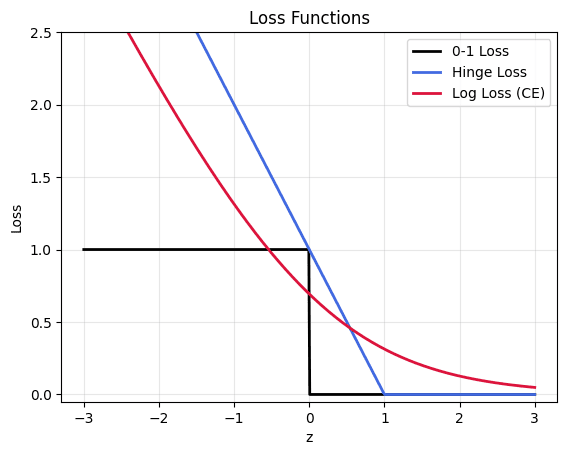

Вопросы по DL
Вопросы по глубокому обучению с собеседований.
-
Какие знаешь архитектуры нейронных сетей?
Полезно отвечать не списком, а по типу данных и индуктивному смещению: каждая архитектура вшивает в себя предположение о структуре входа, и именно это определяет, где она работает.
Категория Архитектура Описание Примеры Computer Vision CNN Свёрточные фильтры; вшиты локальность и трансляционная эквивариантность — предположение, что важные признаки локальны и не зависят от положения. LeNet, AlexNet, VGG, ResNet, DenseNet, EfficientNet, ConvNeXt Computer Vision Vision Transformer Изображение разбивается на патчи и обрабатывается как последовательность; индуктивного смещения меньше, поэтому нужны большие данные или сильные аугментации. ViT, DeiT, Swin Computer Vision GAN Генератор и дискриминатор обучаются в противостоянии. Быстрая генерация, но нестабильное обучение и mode collapse. DCGAN, StyleGAN, CycleGAN Computer Vision Diffusion Обучаются обращать процесс зашумления. Стабильнее GAN и качественнее, но инференс дороже (много шагов). DDPM, DDIM, Stable Diffusion NLP Transformers Внимание вместо рекуррентности: полный параллелизм по последовательности и прямой доступ к любому токену. BERT, GPT, T5, LLaMA, Mistral NLP / CV Autoencoders, VAE Сжатие во внутреннее представление и восстановление; денойзинг, генерация, аномалии. VAE, Denoising AE Sequences / Audio RNN, LSTM, GRU Последовательная обработка с внутренним состоянием. Сейчас в основном вытеснены трансформерами, но остаются там, где важна потоковость и малый размер. LSTM, GRU, DeepSpeech Audio Transformer-based speech Внимание для длинных зависимостей в аудио. Whisper, Wav2Vec 2.0, HuBERT Sequences State Space Models Линейная сложность по длине вместо квадратичной; альтернатива вниманию для длинного контекста. S4, Mamba Graphs GNN Передача сообщений между соседними узлами; вшито предположение о графовой структуре. GCN, GraphSAGE, GAT Multimodal Cross-modal Transformers Общее пространство представлений для нескольких модальностей. CLIP, BLIP-2, Flamingo Подробнее — обзор моделей и языковые модели.
Перечисление архитектур — слабый ответ; интервьюер почти всегда задаёт следующий вопрос: «а почему для этой задачи именно такая?» Поэтому стройте ответ вокруг индуктивного смещения:
- CNN предполагает, что признаки локальны и трансляционно инвариантны. Это ровно свойства изображений — отсюда эффективность и способность учиться на относительно небольших выборках.
- RNN предполагает последовательную зависимость с затухающей памятью — отсюда и сила на коротких последовательностях, и слабость на длинных.
- Transformer почти не делает предположений: любой токен может смотреть на любой. Отсюда универсальность и одновременно потребность в больших данных — недостающие предположения приходится выучивать.
- GNN предполагает, что информация распространяется по рёбрам графа.
Полезный тезис для завершения: тренд последних лет — движение от специализированных архитектур к трансформерам во всех модальностях, с компенсацией недостающего индуктивного смещения за счёт масштаба данных и предобучения. Обратный тренд — возвращение эффективности через SSM и гибриды, когда квадратичное внимание становится узким местом.
«Какую бы вы выбрали для конкретной задачи?» Здесь важно не назвать самое современное, а обосновать через ограничения: объём данных, latency, размер модели, наличие предобученных весов. Для табличных данных, кстати, правильный ответ часто «не нейросеть, а градиентный бустинг».
«Почему трансформеры вытеснили RNN?» Параллелизм по последовательности при обучении и отсутствие затухания информации на длинных дистанциях; см. Transformer против RNN.
«В чём слабое место трансформеров?» Квадратичная сложность внимания по длине последовательности и высокая потребность в данных.
Не называйте архитектуры, о которых не сможете рассказать подробнее. Упомянув GNN или диффузию, будьте готовы объяснить механику: message passing, процесс зашумления и обратный процесс.
Не путайте архитектуру и модель. Transformer — архитектура, BERT и GPT — модели на её основе с разными схемами предобучения; см. encoder-only, decoder-only и полные трансформеры.
-
Как происходит процесс прямого распространения (forward pass)?
Forward pass — последовательное вычисление выхода сети по входу: данные проходят слой за слоем, на каждом применяется линейное преобразование и нелинейность.
Для полносвязной сети:
$$z^{(l)} = W^{(l)}a^{(l-1)} + b^{(l)}, \qquad a^{(l)} = f\!\left(z^{(l)}\right),$$
где $a^{(0)} = x$ — вход, $f$ — функция активации, а $a^{(L)}$ — выход сети. Итог передаётся в функцию потерь вместе с истинной меткой.
Что происходит попутно и что отличает обучение от инференса:
- В режиме обучения фреймворк одновременно строит граф вычислений и сохраняет промежуточные активации — они понадобятся в backward для вычисления градиентов; см. что сохранять во время forward.
- В режиме инференса (
torch.no_grad()) граф не строится и активации не удерживаются — память расходуется только на текущий слой.
Слои ведут себя по-разному в двух режимах. Dropout на обучении зануляет часть нейронов, на инференсе — тождествен. BatchNorm на обучении использует статистики батча и обновляет накопленные, на инференсе — только накопленные. Переключение делается через
model.train()/model.eval().Подробнее — прямой и обратный проход, строение многослойного перцептрона.
Forward — первый из четырёх шагов, и полезно назвать их все:
for x, y in loader: optimizer.zero_grad() # 1. обнулить накопленные градиенты out = model(x) # 2. forward: предсказание + построение графа loss = criterion(out, y) # 3. значение функции потерь loss.backward() # 4. backward: градиенты по всем параметрам optimizer.step() # 5. обновление весовКаждый шаг критичен, и пропуск любого — типичная ошибка:
- без
zero_grad()градиенты накапливаются между батчами, и шаг делается по сумме; - без
backward()градиентов нет вовсе; - без
step()веса не меняются, лосс стоит на месте; loss.backward()дважды безretain_graph=Trueдаст ошибку — граф уже освобождён.
Порядок
zero_gradтоже имеет значение только относительноbackward: обнулять нужно до него, а не между backward и step.Для валидации цикл другой:
model.eval()плюсwith torch.no_grad(), без backward и step; см.model.train()иmodel.eval().«Почему forward называется прямым, а backward обратным?» По направлению движения по графу вычислений: forward — от входа к выходу, backward — от лосса обратно к параметрам.
«Что дороже — forward или backward?» Backward примерно вдвое дороже: помимо градиента по весам нужно вычислить градиент по входу для передачи на предыдущий слой.
«Что такое
model(x)противmodel.forward(x)?» Вызывать нужноmodel(x): он проходит через__call__, который дополнительно выполняет зарегистрированные хуки. Прямой вызовforwardих пропустит — источник неочевидных багов при использовании hooks (например, при извлечении промежуточных активаций).«Влияет ли размер батча на forward?» По времени — сублинейно (GPU параллелит), по памяти — линейно. Отсюда стандартный приём при OOM: уменьшить батч и компенсировать gradient accumulation.
«Можно ли делать forward без градиентов при обучении?» Да, и это стандартный приём: teacher-модель в дистилляции, target-сеть в RL, вычисление метрик — всё это оборачивается в
no_grad(), чтобы не удерживать лишний граф.Классическая ошибка производительности:
total_loss += lossвместоtotal_loss += loss.item(). Первый вариант удерживает граф всех батчей эпохи, и память растёт до OOM. -
Что такое обратное распространение ошибки (backpropagation)?
Backpropagation — алгоритм эффективного вычисления градиентов функции потерь по всем параметрам сети за один проход, основанный на правиле дифференцирования сложной функции (chain rule).
Идея. Сеть — это композиция функций: $\mathcal{L}(f_L(\dots f_2(f_1(x))))$. По цепному правилу производная по параметрам $i$-го слоя равна произведению локальных производных всех последующих слоёв. Ключевое наблюдение: эти произведения можно вычислять справа налево, переиспользуя промежуточные результаты, — и тогда стоимость всего backward pass примерно равна стоимости одного forward pass, независимо от числа параметров.
Как это работает по шагам:
- Forward pass: вход проходит через слои, вычисляются активации; они сохраняются в памяти, потому что понадобятся для градиентов.
- Вычисляется значение функции потерь.
- Backward pass: начиная с выхода, вычисляется градиент потерь по выходу слоя ($\delta$), затем — градиент по весам этого слоя и градиент по его входу, который передаётся на предыдущий слой:
$$\delta^{(l)} = \left(W^{(l+1)}\right)^\top \delta^{(l+1)} \odot f'(z^{(l)}), \qquad \frac{\partial \mathcal{L}}{\partial W^{(l)}} = \delta^{(l)}\left(a^{(l-1)}\right)^\top.$$
- Оптимизатор обновляет веса по полученным градиентам.
Почему это революция. Наивное вычисление градиента численно (по определению производной) потребовало бы отдельного forward pass на каждый параметр — для модели с миллиардом параметров это миллиард проходов. Backprop даёт все градиенты за один проход.
Подробнее — как обучить нейронную сеть, прямой и обратный проход.
Для вычисления градиента слоя нужны его входные активации (и, для некоторых слоёв, дополнительные данные: маска Dropout, статистики BatchNorm, индексы max-pooling). Поэтому forward pass не просто вычисляет выход — он строит граф вычислений и удерживает промежуточные тензоры.
Отсюда практические следствия:
- Память под активации часто больше, чем под веса, особенно при большом батче и длинных последовательностях. Именно активации, а не параметры, чаще всего вызывают CUDA OOM.
- Gradient checkpointing — размен памяти на время: хранятся только некоторые активации, остальные пересчитываются в backward. Экономия с $O(L)$ до $O(\sqrt{L})$ ценой примерно +30 % времени; см. экономия видеопамяти.
torch.no_grad()на инференсе отключает построение графа — без него валидация потребляет память как обучение, что является одной из самых частых ошибок новичков.
Технически современные фреймворки реализуют не «backprop» в узком смысле, а обратное автоматическое дифференцирование (reverse-mode AD): backprop — его частный случай для нейросетей. Обратный режим выгоден, когда выходов мало (скаляр-потеря), а входов много (параметры); прямой режим выгоден в обратной ситуации.
«Почему градиенты затухают или взрываются?» Потому что backward — это произведение якобианов по слоям. Если их нормы систематически меньше единицы, произведение экспоненциально убывает; если больше — растёт. Отсюда skip connections, нормализация, аккуратная инициализация и gradient clipping; см. взрыв и затухание градиентов.
«Что если функция недифференцируема?» Используют субградиент (ReLU в нуле, MAE) или гладкую аппроксимацию. Для полностью недифференцируемых операций (argmax, сэмплирование) применяют straight-through estimator или репараметризацию (Gumbel-Softmax).
«Backward дороже forward?» Примерно в 2 раза по операциям: нужно посчитать и градиент по входу, и градиент по весам.
«Что такое
loss.backward()дважды?» По умолчанию граф освобождается после backward; повторный вызов даст ошибку, если не передатьretain_graph=True.Классическая ошибка: забыть
optimizer.zero_grad(). Градиенты в PyTorch накапливаются, и без обнуления шаг будет сделан по сумме градиентов всех предыдущих батчей. -
Как учится нейронная сеть?
Обучение — итеративная минимизация функции потерь градиентным методом. Цикл на каждом батче:
- Forward pass. Объекты подаются на вход, проходят через слои, получается предсказание $\hat{y}$.
- Вычисление потерь. Предсказание сравнивается с истинным ответом: $\mathcal{L}(\hat{y}, y)$.
- Backward pass. Методом обратного распространения вычисляются градиенты $\partial\mathcal{L}/\partial w$ по всем параметрам за один проход.
- Обновление весов в направлении антиградиента: $w \leftarrow w - \eta\,\partial\mathcal{L}/\partial w$, где $\eta$ — learning rate. На практике вместо чистого правила используется оптимизатор с momentum и адаптивным шагом.
Цикл повторяется по всем батчам (эпоха), эпохи повторяются до сходимости или до срабатывания ранней остановки.
Что определяет успех, помимо самого цикла:
- Инициализация весов — задаёт стартовую точку; неверный масштаб ломает обучение сразу;
- Функция потерь — определяет, что именно оптимизируется;
- Оптимизатор и расписание learning rate — как двигаться;
- Регуляризация (dropout, weight decay, аугментации) — чтобы модель обобщала, а не запоминала;
- Валидация — чтобы понять, когда остановиться.
Подробнее — как обучить нейронную сеть, прямой и обратный проход.
model.train() for epoch in range(num_epochs): for x, y in train_loader: optimizer.zero_grad() # обнулить накопленные градиенты loss = criterion(model(x), y) # forward + потери loss.backward() # градиенты clip_grad_norm_(model.parameters(), 1.0) optimizer.step() # обновление весов scheduler.step() validate(model, val_loader) # eval + no_gradПолезно объяснить, почему такая простая процедура вообще работает на невыпуклой задаче с миллиардами параметров.
Backprop даёт все градиенты за один проход. Наивное численное дифференцирование потребовало бы отдельного forward на каждый параметр — миллиард проходов вместо одного. Именно эффективность обратного режима автоматического дифференцирования делает обучение вычислимым.
Локальные минимумы — не главная проблема. В высокой размерности критическая точка почти наверняка седловая, а не минимум: чтобы получился минимум, все собственные значения гессиана должны быть положительны, что маловероятно. Из седловых точек шум мини-батча выводит.
Шум мини-батча полезен. Он не только неизбежное следствие батчевого обучения, но и неявный регуляризатор, помогающий находить решения, которые лучше обобщаются.
Skip connections и нормализация делают ландшафт проходимым. Без них глубокие сети не обучались бы: градиент затухал или взрывался бы по дороге через десятки слоёв.
Забыть
optimizer.zero_grad(). Градиенты в PyTorch накапливаются; без обнуления шаг делается по сумме градиентов всех предыдущих батчей, и обучение разваливается.Забыть
model.eval()иtorch.no_grad()на валидации. Первое оставляет включёнными Dropout и train-режим BatchNorm, из-за чего метрики неверны; второе приводит к тому, что валидация потребляет память как обучение; см.model.train()иmodel.eval().total_loss += lossвместоloss.item(). Удерживает граф вычислений всех батчей эпохи — прямой путь к OOM.Не проверить, что модель способна переобучиться. Обязательный sanity check: возьмите 50–100 примеров и обучите модель до нулевой ошибки на них. Если не получается — проблема не в данных и не в регуляризации, а в баге: неверный лосс, слишком малый learning rate, неправильная подача данных, замороженные веса.
Слишком большой или слишком малый learning rate. Первый даёт расходимость и
NaN, второй — застревание. Полезен LR range test.Утечка данных. Метрики отличные, а в проде плохо; см. утечка данных.
Отсутствие baseline. Прежде чем радоваться результату, сравните с константным предсказанием и простой моделью.
-
Что такое функция активации? Зачем она нужна?
Функция активации — нелинейное преобразование, применяемое к выходу каждого нейрона: $a = f(w^\top x + b)$.
Зачем она нужна. Без активаций многослойная сеть математически эквивалентна одному линейному слою: композиция линейных отображений линейна, $W_3(W_2(W_1x)) = (W_3W_2W_1)x = \tilde{W}x$. Сколько слоёв ни ставь, класс выразимых функций не расширится, и сеть останется линейной моделью. Нелинейность между слоями — единственное, что даёт сети способность приближать сложные зависимости (по теореме об универсальной аппроксимации достаточно даже одного скрытого слоя нужной ширины).
Основные функции:
Функция Формула Особенности ReLU $\max(0, x)$ дефолт: дёшево, не насыщается при $x>0$; проблема «мёртвых» нейронов Leaky ReLU / PReLU $\max(\alpha x, x)$ лечит мёртвые нейроны малым наклоном при $x<0$ GELU $x\,\Phi(x)$ гладкая, стандарт в трансформерах SiLU / Swish $x\,\sigma(x)$ близка к GELU, используется в современных CV- и LLM-архитектурах Sigmoid $1/(1+e^{-x})$ только на выходе бинарной классификации; в скрытых слоях насыщается Tanh — центрирована в нуле, но тоже насыщается Softmax — выходной слой многоклассовой классификации Подробнее — функции активации.
Скрытые слои:
- ReLU — разумный дефолт для CNN и MLP: одна операция сравнения, отсутствие насыщения в положительной области, разреженные активации.
- GELU / SiLU — в трансформерах и современных архитектурах: гладкость даёт чуть лучшую сходимость, а вычислительная разница на фоне матричных умножений незаметна.
- Leaky ReLU — если наблюдаются мёртвые нейроны (значительная доля активаций постоянно равна нулю).
Выходной слой определяется задачей, а не вкусом:
- бинарная классификация → сигмоида (или вообще ничего, если лосс принимает логиты);
- многоклассовая → softmax (аналогично — обычно внутри лосса);
- регрессия → линейный выход без активации; ставить туда ReLU или сигмоиду — частая ошибка, ограничивающая диапазон предсказаний;
- регрессия положительной величины → softplus или экспонента, но чаще проще логарифмировать таргет.
Практическое замечание: подавляющая часть выигрыша достигается уже на ReLU. Перебор экзотических активаций почти никогда не является узким местом — данные, архитектура и режим обучения важнее.
«Мёртвые ReLU». Если вход нейрона стабильно отрицателен, его градиент равен нулю, и он перестаёт обучаться навсегда. Причины — слишком большой learning rate или неудачная инициализация; лечение — Leaky ReLU, GELU, меньший шаг, нормализация.
Насыщение сигмоиды и tanh. Их производные не превосходят 0,25 и 1 соответственно и стремятся к нулю на хвостах; при перемножении по слоям градиент затухает экспоненциально. Именно поэтому глубокие сети на сигмоидах не обучались до появления ReLU; см. взрыв и затухание градиентов.
Инициализация зависит от активации. Для ReLU-семейства — He (дисперсия $2/n_{in}$), для tanh и сигмоиды — Xavier ($1/n_{in}$ или $2/(n_{in}+n_{out})$). Неверная инициализация ломает обучение независимо от качества архитектуры; см. инициализация весов.
ReLU недифференцируема в нуле. Формально да, практически неважно: фреймворки подставляют одно из значений субдифференциала (обычно 0), а вероятность попасть точно в ноль пренебрежимо мала.
Активация и нормализация — разные вещи. BatchNorm и LayerNorm не заменяют активацию: без нелинейности сеть остаётся линейной, сколько нормализаций ни добавь.
-
Как изменяются потребляемые ресурсы при gradient accumulation?
Gradient accumulation — приём, при котором несколько мини-батчей проходят forward и backward, градиенты накапливаются, и только после $k$ таких проходов выполняется один
optimizer.step(). Эффективный размер батча становится равен $k \times B_{\text{micro}}$ без роста потребления памяти.Как меняются ресурсы:
Ресурс Изменение Почему Память под активации не растёт активации живут только в пределах одного микро-батча и освобождаются после его backward Память под градиенты не растёт буфер .gradодин, в него суммируются вкладыПамять под состояние оптимизатора не растёт шаг делается один раз Время на эпоху растёт незначительно forward/backward выполняются столько же раз, добавляются лишь накладные расходы на мелкие батчи Число шагов оптимизатора падает в $k$ раз что требует пересмотра learning rate и расписания Работает это благодаря тому, что в PyTorch градиенты по умолчанию накапливаются в
.grad, а не перезаписываются: достаточно вызыватьzero_grad()не на каждой итерации, а раз в $k$ шагов.optimizer.zero_grad() for i, (x, y) in enumerate(loader): loss = criterion(model(x), y) / accum_steps # нормировка! loss.backward() if (i + 1) % accum_steps == 0: torch.nn.utils.clip_grad_norm_(model.parameters(), 1.0) optimizer.step() optimizer.zero_grad()Подробнее — экономия видеопамяти при обучении.
Главный сценарий: нужный эффективный батч не помещается в память. Для трансформеров это норма — рецепты обучения предполагают батчи в тысячи примеров или сотни тысяч токенов, а на одной карте помещается 1–8. Accumulation позволяет воспроизвести рецепт на доступном железе.
Другие применения:
- Воспроизводимость результатов статьи или чужого эксперимента на меньшем количестве GPU;
- Стабилизация обучения: больший эффективный батч даёт менее шумный градиент, что важно при обучении с большим learning rate;
- Выравнивание условий при сравнении экспериментов на разном железе.
Альтернативы и их соотношение: gradient checkpointing уменьшает память под активации (позволяя увеличить сам микро-батч), mixed precision уменьшает память под активации и веса, accumulation увеличивает эффективный батч. Они дополняют друг друга и обычно применяются вместе.
Нормировка лосса. Каждый микро-батч даёт лосс, усреднённый по своим примерам. Если суммировать градиенты без деления на $k$, эффективный градиент будет в $k$ раз больше — обучение разойдётся. Делите лосс на
accum_steps(или суммируйте лоссы и делите в конце).Learning rate и расписание. Шагов оптимизатора стало в $k$ раз меньше — значит, планировщик должен считать шаги по
optimizer.step(), а не по итерациям загрузчика. Иначе расписание «пролетит» в $k$ раз быстрее, чем задумано. И сам $\eta$ обычно нужно увеличить под больший эффективный батч.Gradient clipping — только перед
step(). Обрезка нормы на каждом микро-батче даёт совсем другой (и неправильный) результат.Не эквивалентно большому батчу для BatchNorm. BN считает статистики по микро-батчу, а не по эффективному. Для трансформеров с LayerNorm разницы нет, для CNN с BN — есть, и это важное ограничение.
В DDP нужен
no_sync(). Без него all-reduce градиентов выполняется на каждом микро-батче — это лишние коммуникации и потеря скорости:with model.no_sync(): # для всех микро-шагов, кроме последнего loss.backward()Последний неполный цикл. Если число батчей не делится на $k$, остаток градиентов может не привести к шагу оптимизатора; обработайте хвост явно.
Не помогает от OOM внутри одного примера. Если не помещается даже батч из одной длинной последовательности, accumulation бесполезен — нужны checkpointing, укорочение контекста или шардирование модели.
-
Как оптимизировать потребление ресурсов при обучении?
Прежде чем оптимизировать, полезно понимать, из чего складывается память при обучении:
- веса — 4 байта на параметр в fp32, 2 в bf16;
- градиенты — столько же, сколько веса;
- состояние оптимизатора — 8 байт на параметр для Adam;
- активации — зависят от батча, длины и глубины; часто самая большая часть.
Средства, по возрастанию затрат:
Mixed precision (bf16/fp16). Вычисления и активации в половинной точности при мастер-копии весов в fp32. Экономия памяти и ускорение за счёт тензорных ядер. Первое, что стоит включить: выигрыш без потери времени. bf16 предпочтительнее fp16 — шире диапазон экспоненты, не нужен
GradScaler.Gradient checkpointing. Активации не сохраняются, а пересчитываются в backward: память с $O(L)$ до $O(\sqrt{L})$ ценой ~20–35 % времени; см. gradient checkpointing.
Gradient accumulation. Сохранить большой эффективный батч при маленьком микро-батче; памяти не экономит, но позволяет обойтись меньшей; см. gradient accumulation.
8-bit оптимизаторы / Adafactor. Минус 6 байт на параметр из состояния Adam почти без потери качества.
ZeRO / FSDP. Шардирование состояния оптимизатора, градиентов и весов между GPU: каждая карта хранит $1/N$.
Offloading в CPU или NVMe — крайняя мера, сильно замедляет.
Эффективные ядра: FlashAttention (память внимания с $O(n^2)$ до $O(n)$), fused-операции,
torch.compile.Подробнее — экономия видеопамяти при обучении, виды параллелизма.
Ошибка «out of memory» — не повод сразу шардировать модель. Разумная последовательность:
- Понять, что именно занимает память.
torch.cuda.memory_summary(), профилировщик памяти PyTorch, простой расчёт по формуле выше. Часто оказывается, что дело в активациях, а не в весах. - Проверить очевидное:
torch.no_grad()на валидации,loss.item()вместоlossпри накоплении, отсутствие удерживаемых ссылок на тензоры из прошлых итераций,delдля крупных промежуточных объектов. - Уменьшить микро-батч и компенсировать accumulation.
- Включить mixed precision (bf16).
- Включить gradient checkpointing.
- Сменить оптимизатор на 8-bit.
- Шардировать (FSDP/ZeRO) или добавить карт.
- Offload — если ничего другого не осталось.
Важно понимать, на что каждое средство действует: checkpointing и mixed precision бьют по активациям, 8-bit optimizer и ZeRO — по состоянию, accumulation вообще не экономит память. Применять их вслепую — значит потратить время впустую.
Помимо памяти есть скорость. Если GPU загружена на 40 %, узкое место в загрузчике данных: увеличьте
num_workers, включитеpin_memoryиpersistent_workers, перенесите тяжёлые аугментации на GPU (Kornia, DALI) или предобработайте датасет в удобный формат.fp16 требует
GradScaler. Узкий диапазон экспоненты приводит к тому, что малые градиенты уходят в машинный ноль. Лосс масштабируется вверх перед backward и градиенты делятся обратно перед шагом. С bf16 это не нужно.Фрагментация памяти.
torch.cuda.empty_cache()не решает проблему полностью; помогает переменнаяPYTORCH_CUDA_ALLOC_CONF=expandable_segments:Trueи фиксированная длина последовательностей.Переменная длина последовательностей. Батч формируется по самой длинной, поэтому паддинг может съедать большую часть вычислений. Помогает сортировка по длине (bucketing) и динамическое формирование батчей по числу токенов, а не по числу примеров.
Checkpointing и BatchNorm. При пересчёте активаций статистики BN обновятся дважды — это известная тонкость; реализации обычно её обрабатывают, но при ручном коде стоит проверить.
Gradient accumulation в DDP требует
model.no_sync()на всех микро-шагах кроме последнего, иначе all-reduce выполняется впустую на каждом.Экономия ≠ бесплатно. Checkpointing стоит времени, offload — много времени, шардирование — коммуникации. Выбирайте минимально достаточное средство.
Мониторьте, а не гадайте.
nvidia-smiдля утилизации, профилировщик PyTorch для распределения времени по операциям. Оптимизация без измерений почти всегда бьёт мимо цели. -
Какие знаете способы распределенного обучения?
Способы различаются тем, что именно делится между устройствами.
Data Parallelism (DP/DDP). Модель целиком копируется на каждый GPU, батч разбивается на части. После backward градиенты усредняются через all-reduce, веса обновляются синхронно и остаются идентичными. Самый простой и самый распространённый вариант. Ограничение: модель со всем состоянием оптимизатора должна помещаться на одну карту.
Tensor Parallelism. Отдельный слой (матрица весов) разрезается между картами: например, матрица $W$ делится по столбцам, каждая карта считает свою часть, результаты собираются. Требует очень быстрой связи (NVLink), поэтому применяется внутри узла.
Pipeline Parallelism. Модель делится по слоям: карты 1–8 держат первые слои, 9–16 следующие и так далее. Батч разбивается на микро-батчи, которые движутся по конвейеру. Проблема — «пузыри» простоя в начале и конце конвейера; лечится увеличением числа микро-батчей и продвинутыми расписаниями (1F1B, interleaved).
ZeRO / FSDP. Развитие data parallelism: между картами шардируются не только данные, но и состояние оптимизатора (стадия 1), градиенты (стадия 2) и сами веса (стадия 3). Каждая карта хранит лишь $1/N$ состояния, а нужные части подтягивает через all-gather непосредственно перед вычислением. Позволяет обучать модели, во много раз превышающие память одной карты, ценой дополнительной коммуникации.
3D-параллелизм — комбинация всех трёх осей (data × tensor × pipeline), используемая при обучении крупнейших моделей.
Фреймворки: PyTorch DDP/FSDP, DeepSpeed, Megatron-LM, Accelerate, Horovod.
Подробнее — виды параллелизма при обучении, обучение на нескольких GPU.
Порядок принятия решения простой и определяется тем, что не помещается:
- Модель + оптимизатор влезают на одну карту → DDP. Ничего сложнее не нужно; масштабируется почти линейно при быстрой сети.
- Не влезает состояние оптимизатора → ZeRO стадия 1–2 или FSDP с шардированием оптимизатора и градиентов. Коммуникации почти столько же, сколько у DDP.
- Не влезают сами веса → ZeRO стадия 3 / FSDP full shard, плюс при необходимости offload на CPU или NVMe.
- Отдельный слой не влезает на карту (очень широкие модели) → tensor parallelism внутри узла.
- Модель не влезает даже в узел → добавить pipeline parallelism между узлами, получив 3D-схему.
Важное практическое замечание: не начинайте со сложного. DDP плюс mixed precision, gradient checkpointing и gradient accumulation закрывают подавляющее большинство задач; см. экономия видеопамяти.
Стоит также помнить о разнице
DataParallelиDistributedDataParallelв PyTorch: первый работает через один процесс с потоками, страдает от GIL и дисбаланса нагрузки на мастер-карту; второй запускает процесс на карту и является рекомендованным вариантом даже на одном узле.Коммуникация становится узким местом. All-reduce градиентов передаёт объём, равный размеру модели, на каждом шаге. При медленной сети (Ethernet вместо InfiniBand/NVLink) масштабирование быстро выходит на плато. Помогают gradient bucketing (DDP делает это автоматически), сжатие градиентов, увеличение батча на карту.
Learning rate нужно масштабировать. При $N$ картах эффективный батч в $N$ раз больше — шаг обучения обычно тоже увеличивают (линейно, с warm-up); см. размер батча.
BatchNorm считает статистики локально. Каждая карта нормализует по своей части батча. Если она маленькая, нужен
SyncBatchNorm— ценой дополнительной коммуникации. Для LayerNorm проблемы нет.Seed и порядок данных.
DistributedSamplerобязателен, иначе карты будут видеть одни и те же данные. И не забывайтеsampler.set_epoch(epoch)— без него перемешивание не меняется между эпохами.Логирование и сохранение чекпоинтов должны выполняться только на rank 0, иначе получите $N$ копий и испорченные файлы.
Gradient accumulation в DDP. Между микро-шагами нужно оборачивать forward/backward в
model.no_sync(), иначе all-reduce будет выполняться на каждом микро-батче — впустую.Отладка сложна. Ошибки проявляются как зависание (deadlock) при рассинхронизации: например, одна карта вошла в ветку кода, другая нет. Всегда проверяйте, что все процессы выполняют одинаковую последовательность коллективных операций.
-
Как и почему нужно использовать skip connection?
Skip connection передаёт вход блока напрямую к его выходу: $y = F(x) + x$.
Почему это работает — три причины:
1. Прямой канал для градиента. Производная блока равна $1 + \partial F/\partial x$. Единичное слагаемое означает, что градиент проходит через блок без умножения на что-либо, поэтому не затухает даже при стеке из сотен блоков. Это главный аргумент: без skip connections глубокие сети попросту не обучаются; см. взрыв и затухание градиентов.
2. Тождественное отображение как решение по умолчанию. До ResNet существовала проблема деградации: 56-слойная сеть давала худшую ошибку на обучении, чем 20-слойная. Теоретически глубокая сеть может воспроизвести мелкую, добавив тождественные слои, но оптимизатор такое решение не находил. Skip connection делает тождество бесплатным ($F = 0$), и задача превращается из «выучи преобразование» в «выучи поправку» — что радикально проще.
3. Более гладкий ландшафт потерь. Визуализации показывают, что residual-связи убирают хаотичные области, в которых градиентный спуск теряется.
Как использовать:
- CNN: блок из двух-трёх свёрток с нормализацией, вход прибавляется к выходу; при изменении размерности — свёртка $1\times1$ в skip-ветви.
- Трансформер: residual после каждого подслоя — и после attention, и после MLP, в форме Pre-Norm: $x \leftarrow x + \mathrm{Sublayer}(\mathrm{LN}(x))$.
- U-Net: skip между соответствующими уровнями энкодера и декодера (конкатенация), чтобы вернуть высокочастотные детали, потерянные при понижении разрешения.
Подробнее — остаточные связи, DenseNet.
Сложение (ResNet). Формы должны совпадать; память не растёт. Стандарт для глубоких CNN и трансформеров.
Конкатенация (DenseNet, U-Net). Признаки не смешиваются, а сохраняются раздельно — богаче представление, но растёт число каналов и потребление памяти. В U-Net это критично: декодеру нужны именно исходные высокочастотные детали, а не их сумма с восстановленными.
Гейтированные (Highway Networks). Обучаемый вентиль решает, сколько пропустить напрямую: $y = T(x)\odot F(x) + (1-T(x))\odot x$. Исторически предшествовали ResNet; тот показал, что простое сложение работает не хуже и проще.
Stochastic Depth / DropPath. Residual-блок случайно отключается целиком во время обучения ($y = x$). Работает как регуляризация и ускоряет обучение очень глубоких сетей; используется в современных ViT и ConvNeXt.
Аддитивный путь в LSTM. Cell state обновляется как $c_t = f_t\odot c_{t-1} + i_t\odot\tilde{c}_t$ — тот же механизм, только по временной оси, и придуман он был на 18 лет раньше ResNet.
Pre-Norm или Post-Norm. Расположение нормализации относительно skip-соединения принципиально: Pre-Norm оставляет residual-путь свободным от нормализации и обучается устойчиво; Post-Norm без тщательного warm-up расходится. Это самая частая тонкость, о которой спрашивают дальше.
Zero-init residual. Инициализация $\gamma$ последнего BatchNorm в блоке нулём делает блок тождественным на старте — заметно стабилизирует обучение глубоких сетей и стоит одной строки кода.
Согласование размерностей. Разное число каналов или разное разрешение требует проекции в skip-ветви. Использование свёртки с параметрами вместо тождества частично ослабляет эффект, поэтому её ставят только там, где это необходимо.
Skip connections не заменяют нормализацию. Они решают проблему градиента, но не масштаба активаций; в современных архитектурах используются оба механизма.
Слишком много skip-связей может навредить. DenseNet с конкатенацией на всех уровнях требует много памяти, а выигрыш относительно ResNet невелик — отсюда его ограниченное распространение.
В U-Net skip-связи критичны именно для качества границ. Без них сегментационная маска получается размытой: информация о точном положении теряется при понижении разрешения и не восстанавливается декодером.
-
Что делают
model.train()иmodel.eval()?Это три разных механизма, которые часто путают, хотя используются они вместе.
model.train()переводит модель в режим обучения. Влияет только на слои, ведущие себя по-разному в двух режимах:- Dropout — активен, зануляет случайные нейроны;
- BatchNorm — использует статистики текущего батча и обновляет накопленные
running_mean/running_var.
model.eval()переводит в режим инференса:- Dropout — отключён, слой тождествен;
- BatchNorm — использует накопленные статистики и не обновляет их.
torch.no_grad()— отдельный механизм, никак не связанный с первыми двумя. Он отключает построение графа вычислений: активации не сохраняются,requires_gradрезультатов равенFalse. Это экономит память и ускоряет вычисления, но не меняет поведение слоёв.Сценарий Что вызывать Обучение model.train()Валидация, тест, инференс model.eval()иtorch.no_grad()Оба нужны одновременно и по разным причинам: без
eval()метрики будут неверными (работает Dropout, «плывут» статистики BN), безno_grad()валидация потребляет память как обучение и работает медленнее.Подробнее — DropOut, Batch Normalization.
# обучение model.train() for x, y in train_loader: optimizer.zero_grad() loss = criterion(model(x), y) loss.backward() optimizer.step() # валидация / инференс model.eval() with torch.no_grad(): for x, y in val_loader: out = model(x) ...Забыли
model.eval():- Dropout остаётся включённым → предсказания случайны, метрики занижены и нестабильны между прогонами;
- BatchNorm использует статистики валидационного батча и обновляет накопленные — то есть валидация «портит» модель. При батче размера 1 это ещё и деление на нулевую дисперсию.
Худший вариант этой ошибки: метрики на валидации оказываются лучше реальных, потому что BN нормализует по тому же батчу, на котором считается метрика, — форма утечки.
Забыли
torch.no_grad():- строится граф вычислений, активации удерживаются → потребление памяти как при обучении, часто CUDA OOM на валидации;
- вычисления медленнее в полтора-два раза;
- корректность результатов при этом не страдает — только ресурсы.
Забыли вернуть
model.train()после валидации — обучение продолжится без Dropout и с замороженными статистиками BN. Ошибка тихая: лосс падает даже быстрее (регуляризации-то нет), а качество на тесте оказывается хуже.no_grad()не отключает Dropout. Это самое частое заблуждение. Отключение градиентов и режим слоя — независимые вещи; нужны оба вызова.model.eval()не отключает градиенты. Обратная сторона того же заблуждения: вeval()градиенты по-прежнему вычисляются, если не обёрнуть код вno_grad().torch.inference_mode()— более агрессивная версияno_grad()(появилась в PyTorch 1.9): дополнительно отключает version counter и view tracking, что даёт немного больше скорости. Ограничение: полученные тензоры нельзя использовать в autograd-вычислениях позже.model.eval()рекурсивен — применяется ко всем подмодулям. Чтобы перевести в другой режим отдельные слои (например, для MC Dropout), нужно пройтись поmodel.modules()вручную; см. dropout на инференсе.Заморозка BatchNorm при fine-tuning. На маленьком датасете часто правильно перевести BN-слои в
eval()даже во время обучения, чтобы статистики не «уплыли» на нерепрезентативной выборке. Обратите внимание:requires_grad=Falseдля $\gamma$ и $\beta$ этого не делает — статистики обновляются независимо от градиентов.Другие слои с двумя режимами: все варианты Dropout, все варианты BatchNorm,
nn.RNN/LSTMс dropout, стохастическая глубина. LayerNorm, свёртки и линейные слои ведут себя одинаково в обоих режимах. -
Как заметить переобучение?
Переобучение — модель хорошо описывает обучающую выборку, но плохо обобщается на новые данные: она выучила шум и особенности конкретных примеров вместо закономерностей.
Признаки:
- Расхождение кривых обучения — главный и самый надёжный. Ошибка на train продолжает падать, а на валидации разворачивается вверх. Точка разворота — момент начала переобучения.
- Большой разрыв метрик между train и validation. Небольшой разрыв нормален; тревожен большой и растущий.
- Нестабильность между фолдами кросс-валидации — большой разброс качества.
- Идеальное качество на train (accuracy 100 %, лосс около нуля) — почти всегда признак того, что модель запомнила выборку.
- Чрезмерная уверенность предсказаний на объектах, где модель ошибается.
Средства борьбы (по возрастанию затрат):
- Ранняя остановка по валидации — самый дешёвый и эффективный приём;
- Регуляризация: dropout, weight decay, label smoothing;
- Аугментации данных — часто дают больше, чем любая регуляризация весов;
- Упрощение модели: меньше слоёв, меньше ширина;
- Больше данных — самое надёжное средство;
- Ансамблирование и усреднение весов (EMA, SWA);
- Transfer learning — предобученные веса резко снижают потребность в данных.
Подробнее — переобучение и недообучение, методы борьбы с переобучением.
Ключевой практический принцип: посмотрите на обе кривые прежде, чем что-то менять.
Train Validation Диагноз Действие плохо плохо недообучение усложнить модель, ослабить регуляризацию, обучать дольше отлично плохо переобучение регуляризация, аугментации, больше данных хорошо хорошо норма можно осторожно усложнять идеально идеально подозрение на утечку проверять пайплайн Самая частая ошибка — добавлять регуляризацию к недообученной модели: это делает хуже. Вторая по частоте — радоваться идеальным метрикам, за которыми стоит утечка данных.
Кривая обучения по объёму данных — второй полезный инструмент. Если качество на валидации продолжает расти с добавлением данных, сбор данных окупится. Если вышло на плато, а разрыв с train остаётся большим — проблема в модели или в регуляризации, а не в объёме.
Ранняя остановка заслуживает отдельного упоминания: это фактически бесплатный регуляризатор, который сам находит нужную сложность. Для линейных моделей она математически эквивалентна $L_2$-регуляризации с $\lambda \propto 1/(\eta T)$.
Переобучение на валидации. Многократный подбор гиперпараметров по одной валидационной выборке приводит к тому, что выбранная конфигурация оптимальна именно для неё. Симптом: хорошо на валидации, хуже в проде. Нужна отдельная тестовая выборка, используемая один раз в конце.
Утечка маскируется под успех. При утечке и train, и validation подозрительно хороши, а прод плох. Отличается от переобучения тем, что разрыва между train и validation нет; см. утечка данных.
Double descent. Классическая U-образная кривая не универсальна: у сильно переопределённых моделей после точки интерполяции ошибка снова начинает падать. Упоминание этого показывает знакомство с современной картиной.
Метрика может расти при растущем лоссе. Валидационный лосс иногда начинает расти раньше, чем падает accuracy: модель становится переуверенной, но argmax ещё верен. Останавливаться стоит по той метрике, которая важна для задачи.
Слишком ранняя остановка. Кривая валидации шумит; останавливаться после первого же ухудшения — ошибка. Используйте
patienceв 5–20 эпох.Не всякий разрыв — переобучение. Если train и validation взяты из разных распределений (разные периоды, разные источники), разрыв может отражать сдвиг домена, а не переобучение, и лечится он иначе.
-
Как заметить недообучение?
Недообучение — модель не может уловить даже основные закономерности в данных. В терминах bias-variance это состояние с высоким смещением и низкой дисперсией.
Признаки:
- Плохое качество и на train, и на validation — главный признак. Обе кривые идут рядом и высоко.
- Лосс перестаёт снижаться задолго до разумного уровня, выходя на плато.
- Разрыв между train и validation мал или отсутствует — противоположность переобучению.
- Качество близко к тривиальному baseline — константному предсказанию или простой линейной модели.
Причины и средства:
Причина Что делать Слишком простая модель больше слоёв, шире слои, более выразительная архитектура Слишком сильная регуляризация уменьшить dropout, weight decay, ослабить аугментации Мало обучения больше эпох, проверить, что лосс ещё падает Слишком малый learning rate увеличить, использовать LR range test Слабые признаки feature engineering, дополнительные источники данных Неподходящий лосс привести в соответствие с задачей Ошибка в пайплайне см. предупреждение ниже Подробнее — переобучение и недообучение, методы борьбы с недообучением.
Прежде чем усложнять модель, выполните проверку, которая экономит часы: попробуйте переобучиться на крошечной выборке.
Возьмите 50–100 примеров и обучите модель до нулевой ошибки на них, отключив всю регуляризацию. Если это не получается — проблема не в сложности модели и не в данных, а в баге:
- неверная функция потерь или неправильная её конфигурация (например,
CrossEntropyLossот вероятностей вместо логитов, или двойной softmax); - слишком малый learning rate;
- ошибка в подаче данных: перепутаны метки, неправильная нормализация, битые изображения;
- замороженные веса (
requires_grad=Falseтам, где не нужно); - забытый
optimizer.step()илиzero_grad(); - ошибка в форме тензоров, которая не падает из-за broadcasting.
Если модель переобучается на маленькой выборке — она способна учиться, и дело действительно в ёмкости, регуляризации или данных.
Второй полезный инструмент — кривая обучения по объёму данных. Если качество на валидации выходит на плато и разрыв с train мал, добавление данных не поможет: узкое место в модели или признаках. Это важное практическое различение — больше данных не лечит высокое смещение.
Не путайте с пределом задачи. Если в данных нет сигнала (шумный таргет, неинформативные признаки), никакая модель не покажет хорошего качества. Полезно оценить байесовскую ошибку — например, через согласованность разметки между экспертами. Если модель близка к ней, дальнейшие усилия бессмысленны.
Недообучение бывает намеренным. В регулируемых доменах простую и объяснимую модель выбирают сознательно, жертвуя качеством ради интерпретируемости.
Слишком сильная регуляризация маскируется под «стабильность». Одинаково посредственное качество на train и validation иногда принимают за хороший результат («нет переобучения!»). Это недообучение, и оно так же плохо.
Диагностика предшествует лечению. Добавлять регуляризацию к недообученной модели — самая частая ошибка при слепом «улучшении»; см. как заметить переобучение.
Проверьте очевидное перед усложнением модели: нормализация входов (для нейросетей критична), корректное кодирование категорий, отсутствие константных признаков, разумный learning rate.
Сравнивайте с baseline. Константное предсказание, простая линейная модель, «как вчера» для временных рядов. Если сложная модель не обгоняет константу, дело почти наверняка в баге пайплайна, а не в недостатке ёмкости.
-
Как правильно инициализировать веса в нейросети?
Цель инициализации — чтобы дисперсия активаций и градиентов не менялась от слоя к слою. Если она растёт, сигнал взрывается; если убывает — затухает, и глубокие слои не обучаются.
Основные схемы:
Xavier / Glorot — для симметричных активаций (tanh, сигмоида):
$$\mathbb{D}[w] = \frac{2}{n_{in} + n_{out}}.$$
Компромисс между сохранением дисперсии на forward ($1/n_{in}$) и на backward ($1/n_{out}$).
He (Kaiming) — для ReLU-семейства:
$$\mathbb{D}[w] = \frac{2}{n_{in}}.$$
Множитель 2 компенсирует то, что ReLU обнуляет половину активаций и, следовательно, вдвое уменьшает дисперсию.
Orthogonal — ортогональная матрица; сохраняет нормы точно, полезна для RNN.
Инициализация предобученными весами — на практике самый частый и самый эффективный вариант: transfer learning почти всегда лучше любой случайной схемы.
Ключевое правило: схема выбирается по функции активации. Использование Xavier с ReLU даёт систематическое затухание дисперсии по слоям, He с tanh — рост. Ошибка здесь не всегда фатальна (нормализация частично компенсирует), но заметно ухудшает обучение глубоких сетей.
Подробнее — инициализация весов модели.
Рассмотрим линейный слой $y = Wx$ с независимыми компонентами. Дисперсия выхода:
$$\mathbb{D}[y] = n_{in}\,\mathbb{D}[w]\,\mathbb{D}[x].$$
Чтобы $\mathbb{D}[y] = \mathbb{D}[x]$ (дисперсия не менялась при прохождении слоя), нужно $\mathbb{D}[w] = 1/n_{in}$.
Аналогичное рассуждение для backward даёт $\mathbb{D}[w] = 1/n_{out}$. Xavier берёт гармонический компромисс: $2/(n_{in}+n_{out})$.
Для ReLU добавляется поправка: активация обнуляет примерно половину значений, поэтому дисперсия на выходе вдвое меньше. Чтобы это компенсировать, He удваивает дисперсию весов: $2/n_{in}$.
Это объясняет, почему выбор схемы завязан на активацию, а не на архитектуру.
Специальные приёмы:
- Zero-init residual — инициализация $\gamma$ последнего BatchNorm в residual-блоке нулём. Блок становится тождественным на старте, что заметно стабилизирует обучение очень глубоких сетей.
- Масштабирование по глубине в трансформерах: выходные проекции блоков инициализируются с множителем $1/\sqrt{2L}$ (используется в GPT-2), чтобы дисперсия не накапливалась по residual-пути.
- Инициализация bias forget gate в LSTM единицей — чтобы сеть по умолчанию сохраняла состояние.
Нулевая инициализация всех весов не работает. Все нейроны слоя останутся одинаковыми навсегда: одинаковые выходы → одинаковые градиенты → одинаковые обновления. Симметрию необходимо нарушить; см. что будет при инициализации нулями.
Bias можно (и обычно нужно) инициализировать нулём — симметрию нарушают веса, а не смещения. Исключения: forget gate в LSTM, а также bias выходного слоя при сильном дисбалансе классов (инициализация логитом базовой вероятности заметно ускоряет начало обучения).
Слишком большой масштаб → взрыв активаций и градиентов,
NaNв первые итерации. Слишком малый → затухание, обучение стоит на месте.Нормализация снижает чувствительность к инициализации, но не отменяет её. BatchNorm и LayerNorm приводят активации к нужному масштабу, поэтому сети с ними прощают неточную инициализацию. Но в первых итерациях, до того как статистики устоятся, масштаб всё ещё важен.
Дефолты фреймворков разумны, но не всегда оптимальны. PyTorch по умолчанию использует Kaiming uniform с параметром
a=√5, что исторически соответствует не совсем современным рекомендациям. Для критичных случаев инициализацию задают явно.В большинстве практических задач вопрос не стоит: берутся предобученные веса, и случайная инициализация нужна только для новой головы. Это стоит сказать — ответ выглядит практичнее.
-
Зачем нужен warmup?
Warm-up — плавное увеличение learning rate от очень малого значения (например, $10^{-6}$) до целевого в течение первых сотен или тысяч итераций, обычно линейно.
Зачем это нужно — три причины:
1. Веса случайны, градиенты неинформативны. В начале обучения модель ничего не знает, и градиенты отражают скорее случайную инициализацию, чем структуру данных. Большой шаг по такому направлению уводит веса в плохую область, из которой обучение может не восстановиться.
2. Адаптивные оптимизаторы нестабильны на старте. Adam делит шаг на $\sqrt{\hat{v}_t}$ — оценку второго момента. В первые итерации она построена по нескольким наблюдениям и имеет большую дисперсию, из-за чего эффективный шаг может оказаться неоправданно большим. Коррекция смещения помогает, но не полностью — warm-up закрывает этот пробел. (Именно эту проблему адресует RAdam, добавляя корректирующий множитель и позволяя обходиться без warm-up.)
3. Большой батч требует большого шага. При распределённом обучении эффективный батч велик, и learning rate масштабируют вверх — но выйти на него сразу нельзя. Warm-up обязателен в рецепте линейного масштабирования (Goyal et al.).
Особенно критичен для трансформеров. Оригинальная Post-Norm архитектура без warm-up просто расходится: градиенты на глубине разваливаются. Pre-Norm устойчивее, но warm-up всё равно улучшает результат.
Типичные настройки: 5–10 % от общего числа шагов (для LLM — тысячи итераций), линейный рост, затем косинусное затухание.
Подробнее — warm-up и schedulers.
Warm-up — первая фаза общего расписания learning rate. Стандартный рецепт для трансформеров:
- Линейный рост от ~0 до пикового $\eta$ за первые $T_{\text{warmup}}$ шагов;
- Косинусное затухание от пикового значения до 5–10 % от него на оставшихся шагах.
Исторический вариант из оригинального Transformer — обратный корень: $\eta \propto \min(t^{-1/2},\ t \cdot T_{\text{warmup}}^{-3/2})$, что даёт линейный рост до $T_{\text{warmup}}$ и затухание как $1/\sqrt{t}$ после.
Где warm-up особенно нужен:
- обучение трансформеров с нуля — практически обязателен;
- большие батчи (тысячи примеров) с масштабированным шагом;
- fine-tuning предобученной модели: резкий шаг в начале разрушает предобученные представления;
- обучение с высоким пиковым learning rate (one-cycle policy).
Где можно обойтись: небольшие CNN с BatchNorm и умеренным шагом, дообучение с очень малым $\eta$, использование RAdam.
Полезное наблюдение: правильно настроенное расписание (включая warm-up) часто даёт больший прирост, чем смена оптимизатора. Это дешёвая оптимизация, которую легко упустить.
Считайте шаги по
optimizer.step(), а не по итерациям загрузчика. При gradient accumulation число шагов оптимизатора в $k$ раз меньше, и без учёта этого warm-up закончится в $k$ раз раньше задуманного.Слишком короткий warm-up не помогает. 100 шагов при обучении на 100 тысяч итераций — практически ничего. Ориентир — 5–10 % от общего числа шагов.
Слишком длинный warm-up тратит бюджет. Если четверть обучения проходит на малом шаге, модель просто не успевает обучиться.
Warm-up не заменяет подбор пикового learning rate. Он лишь позволяет безопасно до него добраться; само значение по-прежнему нужно выбрать (LR range test).
Не забывайте сохранять состояние планировщика в чекпоинте: при возобновлении обучения без
scheduler.state_dict()warm-up начнётся заново.Warm-up и weight decay. Штраф на веса обычно не масштабируют вместе с шагом — в стандартных рецептах он остаётся постоянным на протяжении всего обучения.
Симптом отсутствия warm-up: лосс резко взлетает или становится
NaNв первые сотни итераций, либо обучение стартует нормально, но выходит на заметно худшее плато, чем должно. -
Что за проблемы взрывающихся и затухающих градиентов?
Обе проблемы имеют одну причину: backward — это произведение якобианов по слоям, и произведение большого числа сомножителей ведёт себя экспоненциально.
$$\frac{\partial \mathcal{L}}{\partial w^{(1)}} = \frac{\partial \mathcal{L}}{\partial a^{(L)}}\cdot\prod_{l=2}^{L}\frac{\partial a^{(l)}}{\partial a^{(l-1)}}\cdot\frac{\partial a^{(1)}}{\partial w^{(1)}}.$$
Затухающие градиенты (vanishing). Если нормы якобианов систематически меньше единицы, произведение стремится к нулю с ростом глубины. Ранние слои получают почти нулевой градиент и перестают обучаться — сеть фактически работает как более мелкая. Классическая причина — насыщающиеся активации: производная сигмоиды не превосходит 0,25, и уже через 10 слоёв градиент ослабевает в $4^{10} \approx 10^6$ раз.
Взрывающиеся градиенты (exploding). Если нормы больше единицы, произведение растёт экспоненциально. Оптимизатор делает гигантский шаг, веса улетают, активации переполняются, лосс становится
NaN. Восстановить обучение после этого нельзя — только откат к чекпоинту.Особенно остро в RNN. Там один и тот же якобиан перемножается на каждом шаге по времени, поэтому проблема возникает даже в неглубокой сети при длинной последовательности. Это и было исторической причиной, по которой RNN не могли выучивать дальние зависимости.
Диагностика: логировать норму градиента по слоям. Затухание — норма падает на порядки от поздних слоёв к ранним; взрыв — резкие всплески нормы и последующие
NaN.Подробнее — взрыв и затухание градиентов.
Против затухания:
- ReLU и её варианты вместо сигмоиды и tanh: производная равна 1 в положительной области, насыщения нет. Исторически именно это открыло путь к глубоким сетям.
- Skip connections — ключевое средство. В блоке $y = x + F(x)$ производная равна $1 + F'(x)$: единичный член создаёт «прямой канал», по которому градиент проходит без затухания на любую глубину. Именно это позволило обучить ResNet-152 и, позднее, глубокие трансформеры; см. остаточные связи.
- Нормализация (BatchNorm, LayerNorm) удерживает масштаб активаций и градиентов в разумных пределах.
- Правильная инициализация: He для ReLU-семейства (дисперсия $2/n_{in}$), Xavier для tanh — обе подобраны так, чтобы дисперсия сигнала не менялась от слоя к слою.
- LSTM и GRU в рекуррентных сетях: гейты создают аддитивный путь для состояния ячейки, аналогичный skip connection.
Против взрыва:
- Gradient clipping по норме — прямое и надёжное средство; см. gradient clipping;
- меньший learning rate, warm-up в начале обучения;
- нормализация и аккуратная инициализация — те же средства работают и здесь.
Затухание опаснее взрыва. Взрыв заметен сразу (
NaNв логе), и его легко купировать clipping. Затухание бесшумно: обучение идёт, лосс медленно падает, а ранние слои фактически не учатся. Проблему обнаруживают поздно — по тому, что качество не растёт с глубиной.Проблема не исчезла с появлением трансформеров. Очень глубокие модели по-прежнему требуют аккуратности: Pre-Norm вместо Post-Norm, warm-up, инициализация с масштабированием по глубине, gradient clipping. Post-Norm-трансформер без warm-up просто не обучается — это классический пример.
Zero-init residual. Инициализация $\gamma$ последнего BatchNorm в residual-блоке нулём делает блок тождественным в начале обучения; это заметно стабилизирует очень глубокие сети.
Mixed precision усугубляет. В fp16 динамический диапазон узкий, и малые градиенты уходят в машинный ноль. Поэтому используется
GradScaler, масштабирующий лосс; bf16 с более широким диапазоном экспоненты эту проблему в основном снимает.«Мёртвые ReLU» — родственная, но другая проблема. Нейрон со стабильно отрицательным входом даёт нулевой градиент и не обучается. Это локальное явление, а не экспоненциальное затухание по глубине; лечится Leaky ReLU, GELU и меньшим learning rate.
Не путайте затухание градиента с затуханием learning rate по расписанию — второе делается намеренно и полезно.
-
Что такое Gradient Clipping?
Gradient clipping — ограничение величины градиентов перед шагом оптимизатора, чтобы редкие аномально большие значения не «выбрасывали» веса далеко от текущего решения.
Два варианта:
Clipping по норме (основной). Вычисляется общая $L_2$-норма всех градиентов модели, и если она превышает порог $c$, весь вектор масштабируется:
$$g' = g \cdot \min\!\left(1,\ \frac{c}{\|g\|_2}\right).$$
Ключевое свойство: направление градиента сохраняется, меняется только длина шага. Именно поэтому этот вариант предпочтителен.
Clipping по значению. Каждая компонента обрезается независимо: $g'_i = \mathrm{clip}(g_i, -c, c)$. Проще, но искажает направление — если одна координата обрезана, а другие нет, шаг пойдёт не туда. Используется реже.
loss.backward() torch.nn.utils.clip_grad_norm_(model.parameters(), max_norm=1.0) optimizer.step()Типичные значения порога: 1,0 для трансформеров (почти стандарт), 0,25–5,0 для RNN. Порог подбирают, посмотрев на распределение норм градиента за первые сотни шагов: разумно взять значение около 90–95-го перцентиля, чтобы обрезались только выбросы.
Подробнее — взрыв и затухание градиентов.
Проблема взрывающихся градиентов возникает потому, что backward — это произведение якобианов по слоям. Если их нормы систематически больше единицы, произведение растёт экспоненциально с глубиной. Особенно остро это проявлялось в RNN, где один и тот же якобиан перемножается на каждом шаге по времени.
Практические последствия без clipping: один аномальный батч даёт огромный градиент, оптимизатор делает гигантский шаг, веса улетают в область, где активации насыщаются или переполняются, — и лосс превращается в
NaN. Восстановить обучение после этого невозможно, приходится откатываться к чекпоинту.Clipping не решает причину (плохая инициализация, слишком большой learning rate, отсутствие нормализации), но надёжно предотвращает катастрофические шаги. Это дешёвая страховка, поэтому в обучении трансформеров и RNN она включена практически всегда.
Полезный диагностический приём: логировать норму градиента каждый шаг. Резкие всплески указывают на проблемные батчи (аномальные данные, слишком длинные последовательности, ошибки в разметке), а стабильный рост нормы — на разваливающееся обучение.
Порядок операций строго определён:
backward()→unscale_(при mixed precision) →clip_grad_norm_→step(). Обрезать до backward нечего, после step — поздно.Mixed precision требует
unscale_. При использованииGradScalerградиенты масштабированы, и обрезать их напрямую нельзя — получится неверный порог:scaler.scale(loss).backward() scaler.unscale_(optimizer) torch.nn.utils.clip_grad_norm_(model.parameters(), 1.0) scaler.step(optimizer) scaler.update()Gradient accumulation: обрезка делается один раз перед
step(), а не на каждом микро-батче.DDP:
clip_grad_norm_вызывается после синхронизации градиентов (то есть после backward), и вычисляет норму по локальным градиентам, которые уже усреднены между картами.Слишком маленький порог = замедление обучения. Если обрезается большинство шагов, а не единичные выбросы, вы фактически ограничили learning rate. Проверяйте долю обрезанных шагов — она должна быть небольшой.
Clipping маскирует, а не лечит. Если градиенты взрываются постоянно, стоит разобраться с причиной: снизить learning rate, добавить нормализацию, проверить инициализацию, поискать аномалии в данных.
Не путайте с weight clipping. Обрезка весов (а не градиентов) применялась в оригинальном WGAN для соблюдения условия Липшица — это совсем другая техника, и от неё позже отказались в пользу gradient penalty.
-
Что такое skip-connection?
Skip connection (residual connection) — прямая связь, передающая вход блока к его выходу в обход преобразований:
$$y = F(x) + x,$$
где $F$ — то, что делает блок (свёртки, attention, MLP).
Зачем это нужно — два взгляда:
Оптимизационный (главный). Производная блока равна $\partial y/\partial x = 1 + \partial F/\partial x$. Единичный член создаёт прямой канал для градиента: даже если $\partial F/\partial x$ мал, градиент проходит через блок без затухания. При стеке из $L$ блоков существует путь от выхода ко входу вообще без умножений — именно это позволило обучать сети глубиной в сотни слоёв.
Функциональный. Блоку проще выучить отклонение от тождественного отображения, чем само отображение целиком. Если оптимальное преобразование близко к тождественному, достаточно чтобы $F \approx 0$ — а это легко достижимо. Отсюда название «residual»: блок учит остаток.
Где применяется: ResNet и все современные CNN, каждый подслой трансформера (после attention и после MLP), U-Net (skip между энкодером и декодером), DenseNet (конкатенация вместо сложения), LSTM (аддитивный путь cell state — по сути тот же механизм).
Подробнее — остаточные связи, DenseNet.
До ResNet (2015) существовала парадоксальная проблема деградации: сеть из 56 слоёв показывала худшее качество на обучающей выборке, чем сеть из 20. Это не переобучение — модель просто не могла оптимизироваться. Теоретически глубокая сеть может воспроизвести мелкую, добавив тождественные слои, но градиентный спуск такое решение не находил.
Skip connection делает тождественное отображение решением по умолчанию: при $F = 0$ блок пропускает вход без изменений. Оптимизатору не нужно «выучивать тождество», оно уже есть. Это сместило задачу от «выучи преобразование» к «выучи поправку», что оказалось радикально проще.
Дополнительное объяснение (Li et al., 2018): визуализация ландшафта функции потерь показывает, что skip connections делают его заметно более гладким — исчезают хаотичные области, в которых градиентный спуск теряется.
Ещё одна интерпретация (Veit et al., 2016): сеть с residual-связями ведёт себя как ансамбль путей разной глубины. Градиент течёт преимущественно по коротким путям, и сеть эффективно работает как ансамбль относительно неглубоких моделей — этим объясняется её устойчивость к удалению отдельных блоков.
Согласование размерностей. Сложить $F(x)$ и $x$ можно только при совпадающих формах. При изменении числа каналов или пространственного размера в skip-ветвь ставят свёртку $1\times1$ со stride (projection shortcut) — так устроены переходные блоки ResNet.
Порядок с нормализацией — Pre-Norm против Post-Norm. $x + \mathrm{Sublayer}(\mathrm{LN}(x))$ (Pre-Norm) оставляет residual-путь «чистым» и потому устойчив при обучении глубоких моделей; $\mathrm{LN}(x + \mathrm{Sublayer}(x))$ (Post-Norm) нормализует сам путь и без warm-up расходится. Современные трансформеры используют Pre-Norm; см. почему в трансформере LayerNorm.
Zero-init residual. Инициализация $\gamma$ последнего BatchNorm в блоке нулём делает блок тождественным в начале обучения. Заметно стабилизирует очень глубокие сети — простой и действенный приём.
Сложение против конкатенации. ResNet складывает (память не растёт), DenseNet конкатенирует (богаче представление, но растёт число каналов и память). U-Net конкатенирует, чтобы декодер получил высокочастотные детали из энкодера.
Skip connections не отменяют нормализацию. Они решают проблему прохождения градиента, но не проблему масштаба активаций. В современных архитектурах используются оба механизма.
Не путайте с highway networks. Те использовали обучаемые гейты для смешивания $x$ и $F(x)$; ResNet показал, что простое сложение работает не хуже и проще.
-
Как влияет размер батча на обучение?
Мини-батч — золотая середина между полным градиентным спуском (градиент по всему датасету) и стохастическим (по одному примеру). Размер батча управляет уровнем шума в оценке градиента, и от него зависит почти всё в обучении.
Что меняется с ростом батча:
Малый батч Большой батч Оценка градиента шумная (дисперсия $\propto 1/B$) точная, траектория гладкая Память мало много (линейно по $B$) Утилизация GPU плохая, много накладных расходов хорошая Шагов оптимизатора на эпоху много мало Обобщение часто лучше — шум работает как регуляризатор хуже без коррекции learning rate BatchNorm нестабилен при $B < 8$ стабильные статистики Ключевой количественный факт: дисперсия оценки градиента убывает как $1/B$, то есть точность растёт как $\sqrt{B}$. Учетверение батча уменьшает шум лишь вдвое — отсюда убывающая отдача от очень больших батчей.
Связь с learning rate обязательна. При увеличении батча шум падает, и можно (и нужно) делать более крупные шаги. Эмпирические правила: линейное масштабирование $\eta \propto B$ (с warm-up) или корневое $\eta \propto \sqrt{B}$. Изменить батч, не тронув шаг, — типичная причина, почему «после увеличения батча модель стала учиться хуже».
Подробнее — BatchNorm, как определить размер батча.
Экспериментально установлено, что при очень больших батчах без коррекции гиперпараметров итоговая точность на валидации оказывается ниже, чем при умеренных, — даже когда обучающая ошибка одинакова. Это явление называют generalization gap.
Наиболее распространённое объяснение: шум мини-батча выполняет роль неявной регуляризации. Он не даёт оптимизатору «застрять» в узких, острых минимумах, которые хорошо подходят обучающей выборке, но плохо переносятся на новые данные, и смещает решение в сторону широких, пологих минимумов. С ростом батча шум исчезает, и этот механизм перестаёт работать. (Стоит отметить, что интерпретация через «остроту» минимума обсуждаема и не является строго доказанной.)
Практические средства компенсации, известные из работы Goyal et al. про обучение ResNet-50 за час:
- линейное масштабирование learning rate вместе с батчем;
- warm-up — плавный рост шага в первые эпохи, без него большой шаг сразу разваливает обучение;
- не масштабировать weight decay вместе с шагом;
- специализированные оптимизаторы для очень больших батчей: LARS, LAMB (нормировка шага по слоям).
BatchNorm зависит от батча напрямую. При $B < 8$ статистики становятся шумными, и качество падает; кроме того, возникает расхождение между обучением (статистики батча) и инференсом (накопленные средние). Альтернативы — GroupNorm, LayerNorm или SyncBatchNorm при обучении на нескольких картах.
Gradient accumulation ≠ большой батч для BN. Накопление градиентов увеличивает эффективный батч для оптимизатора, но BatchNorm по-прежнему считает статистики по микро-батчу. Для трансформеров с LayerNorm разницы нет, для CNN с BN — есть.
Число эпох тоже нужно пересматривать. При большом батче шагов оптимизатора на эпоху меньше, и модель может просто не успеть обучиться за прежнее число эпох.
Утилизация GPU не растёт бесконечно. После некоторого размера батча карта загружена полностью, и дальнейшее увеличение даёт лишь рост памяти без выигрыша в скорости.
Слишком маленький батч тоже плох. Дело не только в шуме: время шага перестаёт зависеть от размера данных и определяется накладными расходами на запуск ядер, из-за чего обучение становится неэффективным по времени.
Оптимум ищется экспериментом. Универсального правила нет; проверьте 2–3 значения батча с соответствующей коррекцией learning rate и сравните кривые валидации.
-
Как определить размер батча?
Размер батча выбирается как компромисс между тремя ограничениями: память GPU, скорость обучения и качество обобщения.
Практический алгоритм:
- Найти верхнюю границу по памяти. Увеличивать батч, пока не появится CUDA OOM, затем отступить на шаг. Обычно берут степень двойки — 16, 32, 64, 128, 256.
- Проверить утилизацию GPU. Слишком маленький батч не загружает карту: время уходит на накладные расходы запуска ядер, а не на вычисления. Смотреть на
nvidia-smiи на время шага. - Скорректировать learning rate. Это обязательный шаг: при увеличении батча шаг обучения тоже нужно увеличить, иначе обучение замедлится. Эмпирические правила — линейное ($\eta \propto B$, работает для CV с warm-up) или корневое ($\eta \propto \sqrt{B}$, чаще подходит для адаптивных оптимизаторов).
- Если нужный батч не влезает — использовать gradient accumulation: несколько forward/backward с накоплением градиентов и один шаг оптимизатора. Эффективный батч растёт без роста памяти; см. gradient accumulation.
Почему степень двойки. Не догма, но полезно: GPU работают с данными блоками фиксированной длины (warp = 32 потока, тензорные ядра — кратно 8/16), и выравнивание размерностей позволяет использовать оптимизированные ядра. Батч 50 или 75 будет работать корректно, просто чуть медленнее.
Что именно упирается в память — в вопросе обучение нейросети на одной GPU; как сохранить большой эффективный батч — экономия видеопамяти.
Малый батч:
- шумная оценка градиента → траектория «дрожит», но этот шум работает как регуляризатор и часто улучшает обобщение;
- меньше памяти;
- плохая утилизация GPU, больше шагов оптимизатора на эпоху;
- BatchNorm становится нестабильным: статистики по 4–8 примерам ненадёжны.
Большой батч:
- точная оценка градиента, гладкая траектория;
- отличная утилизация GPU, меньше шагов на эпоху;
- известный эффект generalization gap: при очень больших батчах без коррекции шага итоговое качество на валидации хуже. Классическое объяснение — сходимость в «острые» минимумы; лечится линейным масштабированием learning rate и warm-up (рецепт из работы про обучение ResNet за час);
- на очень больших батчах прирост скорости выходит на плато: шагов становится так мало, что модель просто не успевает обучиться за разумное число эпох.
Типичные значения: CV-классификация — 32–256 на карту; трансформеры — эффективный батч в тысячах примеров или сотнях тысяч токенов, достигаемый accumulation и несколькими GPU.
Батч и learning rate — связанная пара. Менять батч, не трогая шаг, — самая частая ошибка: обучение либо замедляется, либо расходится. При смене батча всегда пересматривайте $\eta$.
BatchNorm ломается на маленьких батчах. При размере меньше 8–16 статистики шумные, и качество падает. Варианты: GroupNorm, LayerNorm, SyncBatchNorm при мультикарточном обучении; см. BatchNorm.
Gradient accumulation не полностью эквивалентен большому батчу. BatchNorm по-прежнему считает статистики по микро-батчу, а не по эффективному. Для сетей с BN это заметная разница; для трансформеров с LayerNorm — нет.
Батч влияет на воспроизводимость. При смене размера батча меняется порядок суммирования во float, результат становится другим — это нормально и не является багом.
Не гонитесь за максимальным батчем. «Забить память под завязку» — не самоцель: качество может оказаться хуже, а прирост скорости — нулевым. Оптимум почти всегда посередине, и его стоит проверить экспериментом.
Последний неполный батч может искажать статистики и метрики; в PyTorch за это отвечает
drop_last=True. -
В чём проблема функций активации sigmoid, $\tanh$?
Главная проблема — насыщение и вызванное им затухание градиентов.
Обе функции ограничены: сигмоида отображает в $(0,1)$, tanh — в $(-1,1)$. При больших по модулю аргументах они выходят на плато, и производная стремится к нулю. Нейрон, попавший в область насыщения, получает почти нулевой градиент и перестаёт обучаться.
Хуже того, проблема накапливается по глубине. Backward — произведение производных по слоям, и максимум производной сигмоиды равен 0,25. Значит, через $n$ слоёв градиент ослабевает как минимум в $4^n$ раз: через 10 слоёв — в миллион, через 20 — в триллион. Ранние слои не обучаются вовсе.
Вторая проблема сигмоиды — выход не центрирован в нуле. Все её значения положительны, поэтому градиенты по весам одного нейрона имеют одинаковый знак, и обновление идёт «зигзагом», замедляя сходимость. Tanh этой проблемы лишена — она симметрична относительно нуля, и это одна из причин, почему её предпочитали сигмоиде в скрытых слоях.
Третья — вычислительная стоимость. Экспонента дороже, чем сравнение с нулём в ReLU. На больших моделях разница заметна.
Именно эти проблемы объясняют, почему до появления ReLU глубокие сети практически не обучались: у ReLU производная равна ровно 1 в положительной области, и произведение по слоям не затухает.
Подробнее — функции активации, взрыв и затухание градиентов.
Сигмоида и tanh не исчезли — они переместились туда, где нужны именно их свойства:
Выходной слой бинарной классификации — сигмоида. Здесь ограниченность в $(0,1)$ и есть цель: нужна вероятность. Насыщение не мешает, потому что градиент кросс-энтропии по логиту равен $\hat{p} - y$ — множитель $\sigma'$ сокращается.
Multi-label классификация — сигмоида на каждый класс независимо (в отличие от softmax, нормирующего по классам).
Гейты в LSTM и GRU — сигмоида. Значение в $[0,1]$ интерпретируется как «доля пропускаемой информации», и ограниченность здесь принципиальна: гейт должен уметь полностью закрыться и полностью открыться.
Кандидат состояния в LSTM — tanh: нужен ограниченный симметричный диапазон, чтобы состояние не росло неограниченно.
Внутри современных активаций. SiLU/Swish — это $x\,\sigma(x)$, GELU — $x\,\Phi(x)$. Сигмоида используется как гладкий «переключатель», но множитель $x$ снимает насыщение: при больших $x$ функция растёт линейно.
Attention gates и механизмы внимания — сигмоида как мягкий вентиль.
Численная устойчивость. Наивное вычисление $\log(\sigma(x))$ даёт $-\infty$ при больших отрицательных $x$. Используйте
BCEWithLogitsLoss, принимающий логиты: внутри применяется устойчивая формула черезlog-sum-exp. То же для softmax иCrossEntropyLoss.Инициализация зависит от активации. Для tanh и сигмоиды подходит Xavier (дисперсия $1/n_{in}$ или $2/(n_{in}+n_{out})$), для ReLU-семейства — He ($2/n_{in}$). Использование He с tanh или Xavier с ReLU даёт неверный масштаб активаций и ухудшает обучение; см. инициализация весов.
Нормализация смягчает насыщение. BatchNorm и LayerNorm удерживают входы активаций около нуля, где производные максимальны. Это позволяет использовать tanh в глубоких сетях — но всё равно не делает её конкурентной с ReLU.
«Мёртвые ReLU» — не то же самое. Это локальная проблема отдельных нейронов со стабильно отрицательным входом, а не экспоненциальное затухание по глубине. Лечится Leaky ReLU, GELU и меньшим learning rate.
Не путайте насыщение с переобучением. Насыщение — проблема оптимизации (модель не может выучить); переобучение — проблема обобщения (модель выучила слишком много). Диагностика и лечение разные.
Softmax тоже насыщается. При больших логитах он вырождается в one-hot, и градиенты затухают — именно для этого в attention введена нормировка на $\sqrt{d_k}$.
-
Как посчитать производную sigmoid, $\tanh$?
Обе производные замечательны тем, что выражаются через саму функцию — их не нужно вычислять заново:
$$\frac{d}{dx}\sigma(x) = \sigma(x)\left(1 - \sigma(x)\right), \qquad \frac{d}{dx}\tanh(x) = 1 - \tanh^2(x).$$
Вывод для сигмоиды. $\sigma(x) = \frac{1}{1+e^{-x}} = (1+e^{-x})^{-1}$. По правилу дифференцирования степени:
$$\sigma'(x) = -(1+e^{-x})^{-2}\cdot(-e^{-x}) = \frac{e^{-x}}{(1+e^{-x})^2} = \frac{1}{1+e^{-x}}\cdot\frac{e^{-x}}{1+e^{-x}} = \sigma(x)\left(1 - \sigma(x)\right),$$
где на последнем шаге использовано $\frac{e^{-x}}{1+e^{-x}} = 1 - \sigma(x)$.
Для гиперболического тангенса аналогично: $\tanh(x) = \frac{e^x - e^{-x}}{e^x + e^{-x}}$, и после дифференцирования частного получается $1 - \tanh^2(x)$.
Практическая ценность этого свойства. Во время forward pass значение $\sigma(x)$ уже вычислено и сохранено; в backward производная получается одним умножением, без повторного вычисления экспоненты. Экспонента — дорогая операция, и такая экономия существенна.
Максимальные значения производных: $\sigma'(0) = 0{,}25$, $\tanh'(0) = 1$. Эти числа — ключ к пониманию проблемы затухающих градиентов.
Подробнее — функции активации.
Backward — это произведение производных по слоям. Для сигмоиды каждый множитель не превосходит 0,25, поэтому через $n$ слоёв градиент ослабевает как минимум в $4^n$ раз: через 10 слоёв — в миллион раз, через 20 — в триллион. Ранние слои перестают обучаться вовсе.
У tanh максимум производной равен 1, что лучше, но тоже недостаточно: значение 1 достигается только в нуле, а на хвостах производная стремится к нулю. Кроме того, tanh центрирован в нуле (в отличие от сигмоиды, чей выход всегда положителен), что улучшает сходимость: положительный выход сигмоиды создаёт систематическое смещение градиентов по знаку.
Именно эта арифметика объясняет, почему до появления ReLU глубокие сети практически не обучались. У ReLU производная равна ровно 1 в положительной области — произведение по слоям не затухает.
Сегодня сигмоида и tanh используются в трёх местах:
- выход бинарной классификации (сигмоида) — там нужна вероятность, а не активация скрытого слоя;
- гейты в LSTM и GRU — там значение в $[0,1]$ интерпретируется как «доля пропускаемой информации»;
- tanh для кандидата состояния в LSTM — там нужен ограниченный симметричный диапазон.
Численная устойчивость. Прямое вычисление $\frac{1}{1+e^{-x}}$ переполняется при больших по модулю $x$. Устойчивая реализация использует разные формулы для положительных и отрицательных аргументов, а логарифм считается через
log-sum-exp. Именно поэтому в PyTorch естьBCEWithLogitsLoss, принимающий логиты, а неBCELossот вероятностей.Связь функций: $\tanh(x) = 2\sigma(2x) - 1$. То есть tanh — это отмасштабированная и сдвинутая сигмоида. Полезное соотношение, которое иногда спрашивают.
Градиент кросс-энтропии с сигмоидой. Множитель $\sigma'(z)$ сокращается, и производная по логиту оказывается просто $\hat{p} - y$. Это и объясняет, почему кросс-энтропия не страдает от насыщения, а MSE поверх сигмоиды — страдает; см. MSE против CrossEntropy.
Не путайте сигмоиду и softmax. Сигмоида применяется к каждому выходу независимо (multi-label), softmax нормирует по классам (взаимоисключающие классы).
GELU и SiLU — современные гладкие активации, использующие сигмоиду внутри ($\mathrm{SiLU}(x) = x\sigma(x)$). Они не насыщаются так, как чистая сигмоида, потому что множитель $x$ растёт.
Свойство «производная через саму функцию» есть не у всех активаций: у ReLU производная — просто индикатор знака, у GELU формула сложнее и требует отдельного вычисления.
-
Каким свойствам должна удовлетворять функция потерь?
Требования делятся на обязательные (без них градиентная оптимизация невозможна) и желательные (без них она возможна, но плоха).
Обязательные:
- Дифференцируемость (хотя бы почти всюду). Без градиента backpropagation неприменим. Допускаются отдельные точки излома — там используется субградиент.
- Ограниченность снизу. Иначе минимизация уходит в минус бесконечность. Именно поэтому нельзя взять $\sum(y - \hat{y})^3$ — нечётная степень не ограничена и не симметрична.
- Согласованность с задачей. Минимум лосса должен соответствовать хорошей модели: функция должна быть правильной (proper) в смысле теории оценивания.
Желательные:
- Информативный градиент. Он не должен затухать там, где модель сильно ошибается. Классический контрпример — MSE поверх сигмоиды: при уверенно неправильном предсказании градиент почти нулевой, и модель перестаёт учиться. У кросс-энтропии градиент по логиту равен $\hat{p} - y$, то есть пропорционален ошибке.
- Выпуклость — приятна, но в глубоком обучении недостижима: композиция с нелинейными слоями делает задачу невыпуклой в любом случае. Для линейных моделей она важна.
- Численная устойчивость. Отсутствие сингулярностей и переполнений: MAPE непригодна как лосс именно из-за деления на $y_i$.
- Умеренная чувствительность к выбросам. Функции вида $|e|^p$ при $p > 2$ делают обучение нестабильным.
Отдельный приём: суррогатные функции. 0-1 loss (доля ошибок) — то, что мы на самом деле хотим, — кусочно-постоянен, и его градиент нулевой почти всюду. Поэтому оптимизируют его гладкие верхние оценки: log loss, hinge loss, exponential loss.

Графики функций потерь $0-1$, hinge и logloss Подробнее — функция потерь и эмпирический риск.
Тонкое, но важное свойство: функция потерь называется строго правильной (strictly proper), если её математическое ожидание минимизируется тогда и только тогда, когда предсказанное распределение совпадает с истинным.
Кросс-энтропия и Brier score обладают этим свойством — поэтому модель, обученная на них, стремится выдавать калиброванные вероятности. Accuracy им не обладает: её можно максимизировать, выдавая произвольно уверенные предсказания, лишь бы argmax был верен.
Это объясняет практическое разделение:
- Лоссом должна быть гладкая правильная функция (кросс-энтропия, MSE, quantile loss);
- Метрикой может быть что угодно, включая недифференцируемое: accuracy, $F_1$, NDCG, BLEU.
Расхождение между лоссом и метрикой нормально, но должно быть осознанным. Стандартная схема связки — обучить вероятностную модель на правильном лоссе, затем подобрать порог или решающее правило под целевую метрику на валидации.
Второй способ связать их — суррогаты, приближающие метрику: LambdaRank для NDCG, soft-F1, дифференцируемые аппроксимации IoU (Dice, Lovász) в сегментации.
Недифференцируемость в отдельных точках — не препятствие. ReLU, MAE, hinge loss, $L_1$-регуляризация все имеют изломы, и это никому не мешает: используется субградиент, а вероятность попасть точно в точку излома пренебрежимо мала.
Численная устойчивость важнее, чем кажется.
log(softmax(x))в два шага даёт-infпри малых вероятностях; используйтеF.cross_entropy, принимающий логиты. То же сlog(sigmoid(x))— нуженBCEWithLogitsLoss.Масштаб лосса влияет на обучение. Очень большие значения дают огромные градиенты; нормировка таргета или самого лосса часто решает проблему сходимости.
Комбинированные лоссы требуют балансировки. $\mathcal{L} = \alpha\mathcal{L}_1 + \beta\mathcal{L}_2$ — веса подбираются, и часто их порядок различается на порядки. Существуют методы автоматической балансировки (uncertainty weighting, GradNorm).
Лосс должен соответствовать распределению ответа. MSE предполагает гауссовский шум, кросс-энтропия — категориальный, Poisson deviance — счётные данные. Несоответствие даёт систематически смещённую модель; см. MLE.
Проверяйте лосс на вырожденных случаях. Что даёт функция при идеальном предсказании? При константном? Не возникает ли деления на ноль? Это простая проверка, отсеивающая большинство ошибок реализации.
-
Что такое cross-entropy loss?
Кросс-энтропия измеряет расхождение между истинным распределением $Q$ и предсказанным $P$:
$$\mathcal{L} = -\sum_{i=1}^n y_i \log p_i,$$
где $y_i$ — истинная метка (в one-hot виде), $p_i$ — предсказанная вероятность класса $i$. Для one-hot меток сумма схлопывается в один член: $\mathcal{L} = -\log p_{y}$ — минус логарифм уверенности в правильном классе.
Связь с KL-дивергенцией. Кросс-энтропия вытекает из расхождения Кульбака — Лейблера:
$$D_{KL}(Q \parallel P) = \sum_{x} Q(x)\log\frac{Q(x)}{P(x)} = \underbrace{\sum_x Q(x)\log Q(x)}_{-H(Q),\ \text{не зависит от модели}} \underbrace{-\sum_x Q(x)\log P(x)}_{\text{кросс-энтропия}}.$$
Первое слагаемое — энтропия истинного распределения — константа относительно параметров модели, поэтому при минимизации его можно отбросить. Отсюда: минимизация KL и минимизация кросс-энтропии в обучении эквивалентны.
Но не всегда. В задачах дистилляции целевое распределение задаёт модель-учитель, и его энтропия сама по себе информативна: мы следим, чтобы распределение ученика не отходило от учительского, а не просто попадало в argmax. Там используют именно KL, и отбрасывать член с энтропией учителя нельзя (точнее, он не влияет на градиент по ученику, но влияет на интерпретацию значения лосса и на его сравнение между экспериментами).
Подробнее — функции потерь классификации, дистилляция.
Градиент без насыщения. Для softmax с кросс-энтропией производная по логиту предельно проста:
$$\frac{\partial \mathcal{L}}{\partial z_k} = p_k - y_k,$$
то есть пропорциональна ошибке. Чем сильнее модель ошиблась, тем больше шаг. У MSE поверх softmax появляется множитель, обнуляющийся при уверенно неправильном предсказании, — модель «застревает»; см. MSE против CrossEntropy.
Вероятностное обоснование. Кросс-энтропия — это минус логарифм правдоподобия при категориальной модели ответа, то есть она следует из принципа максимума правдоподобия, а не выдумана.
Правильная функция оценивания. Её ожидание минимизируется тогда и только тогда, когда предсказанные вероятности совпадают с истинными. Поэтому модель, обученная на кросс-энтропии, склонна выдавать калиброванные вероятности (при прочих равных).
Неограниченный штраф за уверенную ошибку. При $p_y \to 0$ потеря стремится к бесконечности. Это заставляет модель избегать переуверенности — но одновременно делает её чувствительной к ошибкам разметки, где такой градиент оказывается разрушительным.
Подавайте логиты, а не вероятности.
F.cross_entropyв PyTorch иfrom_logits=Trueв Keras применяют log-softmax внутри, используя устойчивый log-sum-exp. Вычислениеlog(softmax(z))в два шага теряет точность и даёт-infпри малых вероятностях.Двойной softmax. Применить softmax в модели, а затем отдать результат в
nn.CrossEntropyLoss— распространённый баг: обучение идёт, но плохо, градиенты искажены.CrossEntropyLossпротивBCEWithLogitsLoss. Первый — для взаимоисключающих классов (softmax), второй — для multi-label, где классы независимы (сигмоида на каждый). Путаница между ними — частая ошибка.Дисбаланс классов. Кросс-энтропия суммируется по объектам, поэтому доминирующий класс определяет градиент. Средства:
weightв лоссе,pos_weightдля бинарного случая, Focal Loss.Label smoothing заменяет жёсткие метки на мягкие ($1-\varepsilon$ и $\varepsilon/(K-1)$), снижая переуверенность и улучшая калибровку; см. label smoothing.
Шум в разметке. Из-за неограниченного штрафа один неверно размеченный пример с уверенным «правильным» предсказанием даёт огромный градиент. При грязной разметке используют устойчивые варианты (symmetric CE, GCE) или чистят данные.
-
Что такое softmax?
Softmax преобразует вектор произвольных вещественных чисел (логитов) в распределение вероятностей:
$$\mathrm{softmax}(z)_i = \frac{e^{z_i}}{\sum_{j=1}^{K}e^{z_j}}.$$
Свойства: все выходы положительны, их сумма равна единице, порядок значений сохраняется (монотонное преобразование), а разрыв между большими и малыми логитами усиливается за счёт экспоненты.
Ключевое свойство — инвариантность к сдвигу:
$$\mathrm{softmax}(z + c) = \mathrm{softmax}(z),$$
потому что общий множитель $e^c$ сокращается в числителе и знаменателе. Отсюда следует, что softmax зависит только от разностей логитов, а не от их абсолютных значений, и что у $K$-классового softmax всего $K-1$ степень свободы; см. инвариантность softmax к сдвигу.
Это же свойство лежит в основе устойчивой реализации: перед экспонированием вычитают максимум, $\mathrm{softmax}(z) = \mathrm{softmax}(z - \max_j z_j)$, чтобы избежать переполнения.
Где применяется: выходной слой многоклассовой классификации, вычисление весов внимания в трансформерах, распределение по токенам в языковых моделях, gating в MoE-моделях.
Подробнее — логистическая регрессия, механизм внимания.
Обобщённая форма с температурой $T$:
$$\mathrm{softmax}(z/T)_i = \frac{e^{z_i/T}}{\sum_j e^{z_j/T}}.$$
- $T \to 0$: распределение вырождается в one-hot (argmax) — модель становится детерминированной;
- $T = 1$: обычный softmax;
- $T \to \infty$: распределение стремится к равномерному.
Температура — важный практический инструмент:
- Сэмплирование в языковых моделях: низкая температура даёт предсказуемый, «сухой» текст, высокая — разнообразный, но менее связный. Типичные значения 0,7–1,0.
- Дистилляция: $T = 3$–5 делает распределение учителя мягче, обнажая относительные вероятности неправильных классов — то самое «тёмное знание»; см. лоссы дистилляции.
- Калибровка (temperature scaling): подбор единственного параметра $T$ на валидации заметно улучшает соответствие вероятностей реальным частотам, не меняя argmax и, следовательно, не меняя accuracy и ROC-AUC.
Терминологическая тонкость: softmax — гладкая версия argmax (возвращает распределение), а не максимума. Гладкой версией максимума является log-sum-exp. Название исторически неточно, и на этом строят каверзные вопросы.
Всегда подавайте логиты в функцию потерь.
nn.CrossEntropyLossв PyTorch применяет log-softmax внутри устойчивым способом. Вычислениеlog(softmax(z))в два шага теряет точность и даёт-infпри малых вероятностях.Двойной softmax — распространённый баг: применить softmax в модели, а затем передать результат в
CrossEntropyLoss. Обучение идёт, но плохо, градиенты искажены.Softmax насыщается. При больших разностях логитов он вырождается в one-hot, и градиенты затухают. Именно поэтому в attention оценки делятся на $\sqrt{d_k}$: без нормировки дисперсия скалярных произведений растёт с размерностью, softmax насыщается, и обучение ломается.
Сигмоида — не частный случай softmax, но связана с ним. Для двух классов $\mathrm{softmax}([z_1, z_2])_1 = \sigma(z_1 - z_2)$. Отсюда следует, что для бинарной задачи достаточно одного выхода, а два — избыточны.
Softmax против сигмоиды на выходе. Softmax предполагает взаимоисключающие классы (сумма равна 1). Для multi-label, где объект может принадлежать нескольким классам, нужны независимые сигмоиды и
BCEWithLogitsLoss. Путаница здесь — частая ошибка.Стоимость при большом словаре. В языковых моделях с 100–200 тысячами токенов softmax и выходная проекция — заметная часть вычислений и памяти. Приёмы: связывание весов эмбеддингов и выходного слоя, вычисление лосса по частям, sampled softmax при обучении.
Softmax не «даёт вероятности» автоматически. Выход нормирован, но не обязательно калиброван: модель может выдавать 0,99 там, где права в 85 % случаев. Для честных вероятностей нужна калибровка.
-
Что будет, если проинициализировать веса случайно или нулями?
Нулевая инициализация — обучение не пойдёт вовсе. Причина в симметрии: если все веса слоя одинаковы, все его нейроны получают одинаковый вход, дают одинаковый выход и, следовательно, одинаковый градиент. После обновления они остаются одинаковыми — и так навсегда. Слой из 1000 нейронов ведёт себя как один нейрон, и никакая длительность обучения этого не исправит.
Формально: если $w_i = w_j$ для всех $i, j$, то $\partial\mathcal{L}/\partial w_i = \partial\mathcal{L}/\partial w_j$, и равенство сохраняется на каждом шаге. Симметрию необходимо нарушить, и единственный способ — случайность.
Случайная инициализация работает, но масштаб критичен:
- слишком большой → активации растут от слоя к слою, попадают в область насыщения (для сигмоиды и tanh) или переполняются; градиенты взрываются, лосс становится
NaNв первые итерации; - слишком малый → дисперсия сигнала затухает по слоям, градиенты стремятся к нулю, ранние слои не обучаются;
- правильный → дисперсия активаций и градиентов сохраняется от слоя к слою.
Отсюда — специальные схемы: He ($\mathbb{D}[w] = 2/n_{in}$) для ReLU-семейства, Xavier ($2/(n_{in}+n_{out})$) для tanh и сигмоиды; см. как правильно инициализировать веса.
Подробнее — инициализация весов модели.
Bias инициализировать нулём — нормально и стандартно. Симметрию нарушают веса; если веса случайны, нейроны уже различны, и нулевые смещения ничему не мешают. Более того, это дефолт в большинстве реализаций.
Есть случаи, когда нули полезны намеренно:
- Zero-init residual: инициализация $\gamma$ последнего BatchNorm в residual-блоке нулём делает блок тождественным на старте. Сеть начинает обучение как более мелкая и постепенно «включает» глубину — заметно стабилизирует очень глубокие модели.
- LoRA: матрица $B$ инициализируется нулём, $A$ — случайно. Тогда $\Delta W = BA = 0$ в начале, и модель стартует ровно из предобученного состояния, не ломая его.
- Bias выходного слоя при дисбалансе классов: инициализация логитом базовой вероятности (вместо нуля) избавляет модель от необходимости тратить первые эпохи на подбор смещения.
Линейная модель — исключение. У логистической и линейной регрессии нет скрытых слоёв, а значит и проблемы симметрии: там нулевая инициализация корректна и часто используется.
Эти примеры показывают, что проблема не в нулях как таковых, а именно в симметрии между нейронами одного слоя.
«А если инициализировать все веса одной и той же ненулевой константой?» Та же проблема: симметрия сохраняется независимо от значения константы. Важна различность, а не ненулевость.
«Как проверить, что инициализация правильная?» Прогнать forward pass на случайном батче и посмотреть дисперсию активаций по слоям. Она должна оставаться примерно постоянной; систематический рост или падение указывают на неверный масштаб. Аналогично для норм градиентов после backward.
«Спасает ли нормализация от плохой инициализации?» Частично: BatchNorm и LayerNorm приводят активации к нужному масштабу, поэтому сети с ними гораздо толерантнее. Но в первых итерациях, до того как статистики устоятся, масштаб всё ещё важен, а от нулевой инициализации нормализация не спасает вовсе — симметрия останется.
«Какое распределение — нормальное или равномерное?» На практике почти без разницы; важна дисперсия, а не форма. Обе версии есть у Xavier и He.
«Что делают на практике?» Берут предобученные веса. Случайная инициализация нужна только для новой головы и для обучения с нуля, что сегодня редкость.
- слишком большой → активации растут от слоя к слою, попадают в область насыщения (для сигмоиды и tanh) или переполняются; градиенты взрываются, лосс становится
-
Можно ли хорошо обучить 10-слойный MLP без функций активаций? А 2-слойный?
Нельзя ни тот, ни другой — и по одной и той же причине. Композиция линейных отображений линейна:
$$W_{10}\left(W_9\left(\dots W_1 x\right)\right) = \left(W_{10}W_9\cdots W_1\right)x = \tilde{W}x.$$
Сколько бы слоёв ни было — десять, два или сто, — сеть без активаций эквивалентна одному линейному слою с матрицей $\tilde{W}$. Класс выразимых функций не расширяется, и никакая глубина этого не меняет. Значит, такая сеть может решать только те задачи, которые решает линейная регрессия (или логистическая, если на выходе стоит сигмоида).
Разница между 10 и 2 слоями всё же есть, но она не в выразительности, а во вреде:
- Больше параметров без пользы. Десять матриц вместо одной — те же функции, но в разы больше весов, памяти и вычислений.
- Хуже обусловленность оптимизации. Произведение десяти матриц имеет гораздо худшее число обусловленности, чем одна; градиенты легко затухают или взрываются.
- Медленнее и нестабильнее сходимость по сравнению с явной линейной моделью.
То есть 10-слойный линейный MLP не просто «не лучше» двухслойного — он хуже обычной линейной регрессии по всем практическим параметрам.
Подробнее — функции активации, строение многослойного перцептрона.
Теорема об универсальной аппроксимации утверждает: сеть с одним скрытым слоем и нелинейной активацией может приблизить любую непрерывную функцию на компакте с произвольной точностью — при достаточной ширине. То есть нелинейность превращает модель из линейной в универсальный аппроксиматор.
Оговорка, которую стоит сделать: теорема ничего не говорит о необходимой ширине (она может расти экспоненциально) и об обучаемости (существование весов не означает, что градиентный спуск их найдёт). Именно поэтому на практике глубина оказывается эффективнее ширины: глубокая сеть выражает те же функции экспоненциально компактнее.
Это же объясняет, почему ансамбли линейных моделей бесполезны. Сумма линейных моделей линейна, поэтому бустинг и бэггинг над ними не дают прироста — нужна нелинейная базовая модель, например дерево; см. почему нельзя использовать линейные модели как базовые.
И почему нормализация не заменяет активацию. BatchNorm и LayerNorm — аффинные преобразования; сеть из линейных слоёв и нормализаций остаётся линейной. Это популярный уточняющий вопрос.
Строго говоря, «линейный» — не совсем точно. Слой $Wx + b$ является аффинным; композиция аффинных отображений тоже аффинна. Выразительность от этого не меняется, но на собеседовании по математике точность формулировки ценится.
Есть исключение: линейные слои подряд иногда полезны намеренно. Например, факторизация большой матрицы $W \approx BA$ с узким промежуточным слоем — это два линейных слоя, и они выражают меньше, чем один полный. Ровно так работает LoRA: низкоранговое ограничение — цель, а не недостаток. То же в bottleneck-слоях и в факторизованных эмбеддингах ALBERT.
ReLU — минимальная нелинейность, и её достаточно. Кусочно-линейная функция с одним изломом превращает модель в универсальный аппроксиматор: сеть из ReLU-слоёв задаёт кусочно-линейную функцию с экспоненциально растущим числом участков.
Активация только на выходе не помогает. Сигмоида в конце линейного стека даёт логистическую регрессию, а не нейросеть: разделяющая поверхность остаётся гиперплоскостью.
Проверить легко экспериментом. Обучите двухслойный MLP без активаций на XOR — он не решит задачу принципиально. Добавьте ReLU — решит. Это самая наглядная демонстрация.
-
Чем опасна утечка данных при обучении?
Data leakage — попадание в обучение информации, которой в момент предсказания в реальности не будет. Главная опасность в том, что утечка не проявляется как ошибка: метрики выглядят отлично, эксперимент кажется успешным, и проблема обнаруживается только в проде, когда качество оказывается радикально хуже.
Основные виды:
1. Утечка из теста в обучение. Тестовые объекты (или их дубликаты, или производные от них величины) попали в обучающую выборку. Метрики завышены, реальное качество неизвестно.
2. Утечка через препроцессинг. Нормализация, заполнение пропусков, отбор признаков или target encoding обучены на всей выборке до разбиения. Статистики теста «просочились» в обучение.
3. Утечка из будущего (target leakage). Признак содержит информацию, которой в момент предсказания ещё не существует: «дата закрытия сделки» при предсказании закрытия, «сумма страховой выплаты» при предсказании страхового случая, агрегат, посчитанный по всему периоду, включая будущее.
4. Групповая утечка. Объекты одной сущности (пациента, пользователя, документа) разнесены между train и test. Модель узнаёт сущность, а не решает задачу.
5. Дубликаты. Одинаковые или почти одинаковые объекты в обеих выборках — частая проблема в веб-скрейпленных датасетах.
Признак, по которому утечку можно заподозрить: подозрительно высокое качество и признак с аномально большой важностью. Если ROC-AUC получился 0,99 там, где задача заведомо трудна, первым делом ищите утечку, а не радуйтесь.
Разбиение — первое действие. Сначала делим данные, потом делаем всё остальное. Никакая статистика не должна считаться до разбиения.
Весь препроцессинг — внутри
Pipeline. Тогда при кросс-валидацииfitвызывается только на обучающей части каждого фолда автоматически:pipe = Pipeline([("scaler", StandardScaler()), ("imputer", SimpleImputer()), ("model", LogisticRegression())]) cross_val_score(pipe, X, y, cv=5) # утечки нетРазбиение по правильной сущности.
GroupKFoldилиStratifiedGroupKFold, где группа — пользователь, пациент, документ, устройство.Разбиение по времени для временных данных.
TimeSeriesSplitили явное окно: обучение на прошлом, валидация на будущем. Случайное разбиение временного ряда — гарантированная утечка.Дедупликация до разбиения — по хешу, по перцептивному хешу для изображений, по MinHash для текстов.
Аудит признаков. По каждому признаку задать вопрос: «был ли он доступен в момент, когда нужно сделать предсказание?» Это простое правило отсеивает большинство target leakage.
Финальная проверка на «свежих» данных — период, полностью отделённый по времени и не участвовавший ни в обучении, ни в подборе гиперпараметров.
Различие диагностическое и важное:
Переобучение Утечка Train отлично отлично Validation плохо отлично Прод плохо плохо При переобучении разрыв виден сразу, на валидации. При утечке валидация тоже хороша — проблема обнаруживается только в бою, и потому обходится гораздо дороже.
Специфичные для deep learning случаи:
Аугментации до разбиения. Аугментированные версии одного изображения попадают и в train, и в test.
Предобученные модели. Если бэкбон предобучен на датасете, пересекающемся с вашей тестовой выборкой (частая ситуация с ImageNet и веб-корпусами), оценка завышена. Для LLM это отдельная большая проблема — контаминация бенчмарков: тестовые задания попали в обучающий корпус.
Нормализация по всему датасету перед разбиением — самая частая техническая утечка в учебных проектах.
Подбор гиперпараметров по тесту. Многократная оценка на одной тестовой выборке превращает её в валидационную; итоговая оценка становится оптимистичной. Нужна отдельная выборка, используемая один раз.
Метка в признаках после one-hot или target encoding без out-of-fold — классика; см. кодирование в CatBoost.
-
Что сохранить во время forward pass, чтобы посчитать градиенты на этапе backward? Что нужно знать кроме лосса?
Для вычисления градиентов по цепному правилу на каждом слое нужны его входные активации и всё, что определяет его локальную производную. Поэтому forward pass не просто считает выход — он строит граф вычислений и удерживает промежуточные тензоры в памяти.
Что конкретно сохраняется:
- Активации (входы слоёв). Для линейного слоя $y = Wx$ градиент по весам равен $\partial\mathcal{L}/\partial W = \delta\,x^\top$ — без сохранённого $x$ его не посчитать.
- Данные для производной активации. Для ReLU достаточно знака входа (или маски), для сигмоиды удобно хранить сам выход, поскольку $\sigma' = \sigma(1-\sigma)$.
- Маска Dropout — чтобы градиент прошёл ровно через те же нейроны, что были активны на forward.
- Статистики BatchNorm ($\mu_B$, $\sigma_B^2$) и нормализованные значения — они входят в формулу градиента.
- Индексы max-pooling — чтобы вернуть градиент в ту позицию, откуда был взят максимум.
- Матрица весов внимания (или данные для её пересчёта) в трансформерах.
- Форма тензоров для корректного broadcasting и редукции градиентов.
Кроме значения лосса, для обучения нужно, чтобы функция потерь была дифференцируема (или хотя бы субдифференцируема). Для недифференцируемых величин (0-1 loss, accuracy) используют гладкие суррогаты, для точек излома — субградиент.
Подробнее — прямой и обратный проход, backpropagation.
Объём сохранённых активаций пропорционален размеру батча × длине последовательности (или площади карты признаков) × числу слоёв. Для трансформера с $L$ слоями, батчем $B$, длиной $n$ и размерностью $d$ это порядка $O(L \cdot B \cdot n \cdot d)$ плюс матрицы внимания $O(L \cdot B \cdot h \cdot n^2)$.
Отсюда практические следствия:
- Активации, а не веса, чаще всего вызывают CUDA OOM. Модель на 7B параметров в bf16 занимает 14 ГБ, а активации при батче 8 и длине 4096 могут превысить это в несколько раз.
torch.no_grad()на инференсе обязателен. Без него граф строится, активации удерживаются, и валидация потребляет память как обучение. Одна из самых частых ошибок новичков.- Gradient checkpointing — прямой размен: сохраняются только границы блоков, внутренние активации пересчитываются в backward. Память падает с $O(L)$ до $O(\sqrt{L})$, время растёт примерно на 20–35 %; см. экономия видеопамяти.
- FlashAttention не материализует матрицу внимания $n\times n$, а пересчитывает её блоками — тот же принцип, применённый к вниманию.
- Inplace-операции (
relu_,+=) экономят память, но иногда ломают backward: если PyTorch обнаружит, что нужный для градиента тензор был перезаписан, он бросит ошибку.
«Backward дороже forward?» Примерно вдвое по операциям: нужно посчитать и градиент по входу (для передачи дальше), и градиент по весам.
«Почему нельзя посчитать градиенты только по лоссу?» Потому что лосс — скаляр, а нужны производные по миллионам параметров. Цепное правило требует локальных производных на каждом слое, а они зависят от входов этих слоёв.
«Что если функция недифференцируема?» Субградиент (ReLU в нуле, MAE), гладкая аппроксимация, straight-through estimator для дискретных операций, репараметризация (Gumbel-Softmax) для сэмплирования.
«Зачем
optimizer.zero_grad()?» Градиенты в PyTorch накапливаются в.grad. Без обнуления шаг будет сделан по сумме градиентов всех предыдущих батчей. Именно на этом свойстве, кстати, построен gradient accumulation.«Что делает
retain_graph=True?» По умолчанию граф освобождается послеbackward(); флаг сохраняет его для повторного вызова (нужно для многозадачных лоссов и GAN).«Что такое
detach()?» Отцепляет тензор от графа: дальше через него градиент не пойдёт. Используется, чтобы не удерживать граф (total_loss += loss.item()вместо+= loss) и чтобы блокировать поток градиента в отдельные ветви модели. -
Что такое Gradient Checkpointing?
Gradient checkpointing (activation checkpointing) — техника размена памяти на вычисления. Вместо того чтобы сохранять все промежуточные активации во время forward pass, сохраняются только редкие контрольные точки; остальные активации пересчитываются заново во время backward, когда они понадобятся.
Механика: сеть разбивается на сегменты. На forward сохраняются только входы сегментов. Когда backward доходит до сегмента, его forward прогоняется повторно — уже с сохранением активаций — и по ним считаются градиенты, после чего они снова освобождаются.
Количественная оценка. Для сети из $L$ слоёв при разбиении на $\sqrt{L}$ сегментов:
- память под активации падает с $O(L)$ до $O(\sqrt{L})$;
- время растёт примерно на 20–35 % (один дополнительный forward на каждый сегмент, а forward примерно вдвое дешевле backward).
Практический эффект: для трансформеров экономия памяти достигает 3–5 раз, что позволяет увеличить батч или длину контекста в разы. Именно поэтому checkpointing включён почти во всех рецептах обучения крупных моделей.
model.gradient_checkpointing_enable() # HuggingFace # или вручную: from torch.utils.checkpoint import checkpoint out = checkpoint(block, x, use_reentrant=False)Подробнее — экономия видеопамяти при обучении.
Порядок применения при нехватке видеопамяти:
- Mixed precision (bf16/fp16) — активации и градиенты вдвое меньше, вычисления быстрее. Первое, что стоит включить: экономия без потери времени.
- Gradient checkpointing — крупнейшая экономия по активациям ценой ~30 % времени.
- Gradient accumulation — сохранить эффективный батч при маленьком микро-батче; см. gradient accumulation.
- 8-bit оптимизаторы — минус 6 байт на параметр из состояния Adam.
- ZeRO / FSDP — шардирование состояния, градиентов и весов между картами.
- Offloading в CPU или NVMe — крайняя мера, сильно замедляет.
Важно понимать, на что каждое средство влияет: checkpointing и mixed precision бьют по активациям, 8-bit optimizer и ZeRO — по состоянию оптимизатора, accumulation вообще не экономит память, а позволяет обойтись меньшим микро-батчем. Диагностика («что именно занимает память») предшествует выбору; в PyTorch помогает
torch.cuda.memory_summary()и профилировщик памяти.use_reentrant. Старая (reentrant) реализация в PyTorch имеет ограничения: не работает корректно, если в сегменте нет параметров, требующих градиента; плохо совместима с некоторыми хуками и сtorch.compile. Новая версия (use_reentrant=False) свободна от этого и рекомендуется.Недетерминированность. Если внутри сегмента есть случайные операции (Dropout), при повторном forward маска должна совпасть с исходной. PyTorch сохраняет и восстанавливает состояние RNG, но при ручной реализации это легко упустить — и получить неверные градиенты.
Что именно чекпоинтить. Гранулярность важна: чекпоинтить каждый слой — слишком много пересчётов; чекпоинтить всю модель одним сегментом — почти нет экономии. Практический выбор — по трансформерному блоку. Существует selective checkpointing: пересчитывать только дешёвые операции (нормализация, активации), сохраняя дорогие (матричные умножения, внимание).
Несовместимость с некоторыми оптимизациями. Checkpointing плюс
torch.compileтребует аккуратности; FlashAttention уже реализует свою форму пересчёта внутри, поэтому дополнительный выигрыш от чекпоинтинга внимания невелик.Не помогает от памяти под веса и оптимизатор. Если не помещается сама модель, нужны шардирование или квантизация, а не checkpointing.
На инференсе не нужен вовсе: там активации не сохраняются, достаточно
torch.no_grad(). -
Зачем нужен scheduler?
Scheduler управляет изменением learning rate в ходе обучения. Смысл в том, что оптимальный шаг разный на разных стадиях: в начале нужны крупные шаги, чтобы быстро выйти в разумную область, в конце — мелкие, чтобы аккуратно сойтись, а не колебаться вокруг минимума.
Три задачи, которые решает расписание:
1. Warm-up. Плавный рост шага от почти нуля до целевого значения в первые сотни-тысячи итераций. Нужен потому, что в начале обучения веса случайны, градиенты велики и неинформативны, а у адаптивных оптимизаторов оценки моментов ещё ненадёжны. Большой шаг на этой стадии разваливает обучение. Для трансформеров warm-up фактически обязателен.
2. Затухание. Постепенное уменьшение шага. Позволяет модели «сесть» в минимум вместо того, чтобы прыгать вокруг него. Практически всегда даёт заметный прирост финального качества.
3. Адаптация к плато. Если лосс перестал улучшаться, снижение шага часто позволяет продолжить прогресс (
ReduceLROnPlateau).Типичные расписания:
StepLR(ступенчатое снижение),MultiStepLR,ExponentialLR,CosineAnnealingLR(плавное косинусное затухание — самый распространённый выбор),OneCycleLR(рост, затем спад — рецепт быстрого обучения),LinearLRс warm-up (стандарт для трансформеров),ReduceLROnPlateau.Подробнее — warm-up и schedulers.
Практическое наблюдение: правильно подобранное расписание learning rate часто улучшает результат сильнее, чем переход с одного оптимизатора на другой. Причина в том, что шаг обучения — самый чувствительный гиперпараметр, а расписание позволяет получить преимущества сразу двух режимов.
Интуиция. Большой шаг в начале даёт быстрое продвижение и шум, помогающий выйти из плохих областей. Малый шаг в конце снижает этот шум и позволяет уточнить решение. Расписание — способ не выбирать между исследованием и уточнением, а последовательно сделать и то, и другое.
Стандартный рецепт для трансформеров: линейный warm-up на 5–10 % шагов, затем косинусное затухание до 10 % от пикового значения. Работает практически везде.
One-cycle policy (Smith): шаг растёт до максимума в первой трети обучения, затем спадает ниже начального; momentum меняется в противофазе. Позволяет обучать заметно быстрее при том же качестве.
Cosine с рестартами (SGDR): периодические возвраты к высокому шагу. Даёт «бесплатный ансамбль» — модели из разных циклов можно усреднить.
LR range test — полезный инструмент подбора: прогнать несколько сотен шагов, экспоненциально увеличивая $\eta$, и посмотреть, где лосс перестаёт падать и начинает расти. Максимальный шаг берут немного левее этой точки.
Вызывать
scheduler.step()не там. Для большинства расписаний — послеoptimizer.step(), один раз за итерацию или за эпоху (зависит от типа).ReduceLROnPlateauтребует передачи метрики:scheduler.step(val_loss). Ошибка здесь приводит к тому, что расписание «пролетает» в разы быстрее задуманного.Gradient accumulation ломает счётчик шагов. Планировщик должен считать шаги по
optimizer.step(), а не по итерациям загрузчика; иначе расписание отработает в $k$ раз быстрее.Забыть сохранить состояние в чекпоинте.
scheduler.state_dict()нужно сохранять наравне с состоянием оптимизатора, иначе при возобновлении обучения шаг вернётся к начальному.Warm-up слишком короткий или отсутствует. Для Post-Norm трансформеров это означает расходимость; для Pre-Norm — просто худшую сходимость.
Слишком агрессивное затухание. Если шаг падает до нуля за первую треть обучения, оставшиеся эпохи проходят впустую. Затухание должно быть согласовано с общим числом шагов — а значит, при изменении числа эпох расписание надо пересчитать.
Расписание зависит от размера батча. При изменении батча меняется пиковый learning rate, а значит и всё расписание; см. размер батча.
Не путайте с weight decay scheduling. Штраф на веса обычно не масштабируют вместе с шагом — в стандартных рецептах он остаётся постоянным.
-
Какие loss-функции используются при дистилляции модели?
При дистилляции student-модель учится воспроизводить поведение teacher-модели и/или истинные метки. Итоговая функция потерь обычно складывается из нескольких компонентов.
Основные компоненты:
- hard-label loss — обычная кросс-энтропия по истинным меткам. Удерживает связь с разметкой.
- soft-label (distillation) loss — KL-дивергенция или кросс-энтропия между смягчёнными распределениями teacher и student. Именно здесь передаётся «тёмное знание»: относительные вероятности неправильных классов, которых в one-hot метке нет.
- temperature scaling — логиты делятся на температуру $T > 1$ перед softmax, что делает распределение teacher мягче и делает различия между не-максимальными классами заметными.
- representation loss — MSE или косинусное расстояние между промежуточными представлениями: hidden states, карты внимания, эмбеддинги. Используется в TinyBERT, DistilBERT.
- task-specific loss — CTC для ASR, contrastive для retrieval, token-level CE для языковых моделей.
Типичная комбинация:
Hard} + (1-\alpha)\,T^2\,\mathrm{KL}\!\left(p^{\text{teacher}}_T \,\|\, p^{\text{student}}_T\right).$$">$$\mathcal{L} = \alpha\,\mathcal{L}_{\textHard} + (1-\alpha)\,T^2\,\mathrm{KL}\!\left(p^{\text{teacher}}_T \,\|\, p^{\text{student}}_T\right).$$
Множитель $T^2$ обязателен: градиенты soft-части масштабируются как $1/T^2$, и без компенсации при изменении температуры пришлось бы каждый раз перенастраивать баланс между слагаемыми.
Подробнее — дистилляция.
Ключевая идея Hinton et al.: one-hot метка сообщает только правильный класс, тогда как распределение учителя несёт структуру задачи. Если для изображения BMW учитель даёт 0,9 «автомобиль», 0,09 «грузовик», 0,001 «морковь», то относительные величины 0,09 и 0,001 говорят студенту, что грузовик похож на автомобиль, а морковь — нет. Эту информацию нельзя извлечь из жёсткой метки.
Именно поэтому нужна температура: при $T = 1$ распределение учителя обычно почти one-hot (0,999 и хвост из нулей), и полезный сигнал теряется в числовом шуме. При $T = 3$–5 различия между малыми вероятностями становятся значимыми.
Практическое следствие: студент, обученный дистилляцией, часто оказывается лучше, чем такой же студент, обученный с нуля на тех же данных, — при том же числе параметров. Дистилляция работает как регуляризация и как способ передать больше информации на пример.
Отдельная разновидность — дистилляция без учительских логитов: self-distillation (модель учит саму себя предыдущей версией), born-again networks, а также дистилляция в другую архитектуру (например, из cross-encoder в bi-encoder для retrieval).
KL, а не просто кросс-энтропия. В обычной классификации энтропия целевого распределения — константа, и её можно отбросить. В дистилляции целевое распределение задаёт учитель; формально градиенты по студенту те же, но значение лосса и его интерпретация различаются, поэтому корректнее говорить именно о KL; см. что такое cross-entropy loss.
Направление KL важно. $\mathrm{KL}(P_{\text{teacher}} \| P_{\text{student}})$ — mode-covering: студент старается покрыть все моды учителя. Обратное направление — mode-seeking. В классической дистилляции используют первое.
Баланс $\alpha$. Слишком большой вес soft-части при слабом учителе передаст студенту его ошибки; слишком маленький сведёт дистилляцию к обычному обучению. Типичные значения $\alpha$ — 0,1–0,5.
Данные для дистилляции. Можно использовать неразмеченные данные: учитель сам порождает целевое распределение. Это одно из главных практических преимуществ метода — обучающий корпус можно расширить почти бесплатно.
Representation loss требует согласования размерностей. Если у студента меньше скрытая размерность, нужна проекция; кроме того, надо решить, какие слои с какими сопоставлять.
Дистилляция для LLM. Здесь чаще применяют не логиты, а sequence-level подход: учитель генерирует ответы, студент обучается на них как на обычных данных (rejection sampling, self-instruct). Проще инженерно и не требует доступа к логитам учителя.
Учитель должен быть заметно лучше. Дистилляция из модели, ненамного превосходящей студента, обычно не окупает усилий.
-
Как оптимизировать latency и throughput LLM-инференса?
Ключевое различие, с которого стоит начать ответ: latency — время ответа одного запроса (смотрят p50, p95, p99), throughput — сколько запросов или токенов система обрабатывает в единицу времени. Они конфликтуют: батчинг повышает throughput, но добавляет ожидание отдельному пользователю.
Второе важное наблюдение: генерация memory-bound, а не compute-bound. На каждом шаге производится один токен, и GPU в основном ждёт загрузки весов из памяти, а не считает. Отсюда следует, что батчинг даёт огромный выигрыш: одна и та же загрузка весов обслуживает много запросов почти бесплатно.
Оптимизации на трёх уровнях.
Модель:
- квантизация INT8/INT4 (GPTQ, AWQ, GGUF) — меньше памяти и меньше трафика к ней, то есть прямое ускорение;
- дистилляция или просто выбор модели поменьше;
- прунинг и разреженность, если поддерживается runtime.
Runtime:
- KV-cache — обязателен: без него каждый новый токен требовал бы пересчёта всей истории;
- continuous batching — новые запросы подхватываются, не дожидаясь завершения текущих; даёт кратный рост throughput по сравнению со статическим батчингом;
- PagedAttention (vLLM) — управление KV-кэшем страницами, устраняет фрагментацию;
- спекулятивное декодирование — маленькая модель предлагает несколько токенов, большая проверяет их одним проходом;
- FlashAttention и другие эффективные ядра;
- GQA/MQA — сокращение KV-кэша в разы.
Система:
- кэширование частых запросов и общих префиксов (prefix caching);
- streaming ответа — снижает воспринимаемую latency (time to first token);
- ограничение
max_tokens; - routing между маленькой и большой моделью по сложности запроса;
- мониторинг p50/p95/p99, throughput, GPU utilization и cost per request.
Подробнее — оптимизация инференса, continuous batching.
Понимание этого разделения сразу отличает практика от теоретика.
Prefill — обработка промпта. Все токены идут одним батчем, вычислений много, GPU загружена полностью. Фаза compute-bound. Её длительность определяет time to first token (TTFT).
Decode — генерация по одному токену. На каждом шаге читаются все веса модели ради одного токена: арифметическая интенсивность крайне низкая, GPU простаивает. Фаза memory-bound. Определяет time per output token (TPOT).
Практические следствия:
- Батчинг помогает decode гораздо больше, чем prefill. В decode веса загружаются один раз на весь батч — throughput растёт почти линейно с размером батча до определённого предела.
- Квантизация помогает decode больше, чем prefill — она сокращает объём читаемых весов.
- Метрики надо разделять. SLA формулируется как «TTFT $\le$ 500 мс и TPOT $\le$ 50 мс», а не как одна цифра latency.
- Спекулятивное декодирование атакует именно memory-bound природу decode: за один проход большой модели проверяется несколько токенов-кандидатов, то есть веса читаются реже.
- Chunked prefill — разбиение длинного промпта на части, чтобы он не блокировал decode других запросов в общем батче.
KV-кэш часто становится главным ограничением. Его размер равен $2 \cdot L \cdot n \cdot h \cdot d_k \cdot B$ и растёт линейно с длиной контекста и с батчем. На длинных контекстах он превышает размер весов и ограничивает число одновременных запросов. Средства: GQA/MQA, квантизация кэша в int8, PagedAttention.
Батчинг ухудшает latency отдельного запроса. Это осознанный размен: при жёстком SLA на latency размер батча приходится ограничивать, жертвуя throughput. Формулируйте требования заранее.
Квантизация не бесплатна. INT4 даёт заметное ускорение и экономию, но качество падает — насколько, зависит от модели и задачи. Измеряйте на своём оценочном наборе, а не полагайтесь на общие бенчмарки.
Спекулятивное декодирование выгодно не всегда. Выигрыш зависит от доли принятых токенов; при плохо согласованной черновой модели накладные расходы съедают эффект.
Не оптимизируйте вслепую. Сначала профилирование: где время — в prefill, в decode, в загрузке весов, в сборе контекста для RAG, в сети? Часто оказывается, что модель не узкое место.
Считайте cost per request. Оптимизация, ускорившая инференс на 20 % ценой удвоения числа GPU, — не оптимизация. Стоимость за тысячу запросов — метрика, которую понимает бизнес.
Мониторьте хвосты, а не среднее. p99 latency определяет пользовательский опыт; среднее его скрывает.
-
Какие есть способы регуляризации в DL?
Регуляризация — любой приём, снижающий переобучение и улучшающий обобщение. В глубоком обучении их принято группировать по тому, на что они действуют.
Штрафы на веса:
- weight decay ($L_2$) — основной; в AdamW реализован в отвязанной форме;
- $L_1$ — теоретически даёт разреженность, но на практике в DL используется редко: SGD не даёт точных нулей, а неструктурированная разреженность не ускоряет инференс.
Стохастические методы:
- Dropout и варианты: Dropout2d (для CNN), DropPath / Stochastic Depth (отключение целых блоков), DropBlock;
- шум в весах или активациях.
Работа с данными:
- аугментации — часто самый эффективный регуляризатор, особенно в CV;
- Mixup, CutMix — смешивание примеров и меток;
- label smoothing — смягчение целевых меток; см. label smoothing;
- больше данных — самое надёжное средство вообще.
Процедурные приёмы:
- ранняя остановка — фактически бесплатный регуляризатор, сам находящий нужную сложность;
- уменьшение learning rate по расписанию;
- усреднение весов (EMA, SWA) — сглаживает решение и почти всегда даёт небольшой бесплатный прирост.
Архитектурные:
- нормализация (BatchNorm даёт побочный регуляризующий шум);
- ограничение ёмкости — меньше слоёв и ширина;
- разделение весов, свёртки вместо полносвязных слоёв — вшитое индуктивное смещение.
Ансамблирование и перенос знаний: ансамбли моделей, предобучение, дистилляция, мультизадачное обучение.
Подробнее — методы борьбы с переобучением.
Все перечисленные приёмы решают одну задачу — сузить пространство функций, среди которых ищется решение, — и между ними есть неожиданные связи.
Байесовская трактовка. Штраф на веса — это логарифм априорного распределения: $L_2$ соответствует гауссовскому априору, $L_1$ — лапласовскому. Регуляризованная задача есть MAP-оценка.
Ранняя остановка ≈ $L_2$. Для линейной модели с градиентным спуском остановка через $T$ шагов эквивалентна $L_2$-регуляризации с $\lambda \propto 1/(\eta T)$: спуск просто не успевает уйти далеко от нулевой инициализации.
Аугментации ≈ штраф на гладкость. Обучение на зашумлённых входах в первом приближении эквивалентно добавлению штрафа на норму градиента модели по входу — то есть требованию, чтобы близкие входы давали близкие выходы.
Dropout ≈ ансамблирование. Обучение с dropout — это неявное обучение экспоненциального числа подсетей с разделяемыми весами; инференс со всеми нейронами приближает усреднение этого ансамбля.
Шум SGD ≈ регуляризация. Мини-батчевый шум смещает решение к более широким минимумам — этим объясняется generalization gap при очень больших батчах.
Диагностика перед лечением. Регуляризация лечит переобучение. Если качество плохое и на train, и на валидации, добавление штрафов сделает хуже — нужна более сложная модель или лучшие признаки; см. как заметить недообучение.
Не всё сразу. Сильный dropout + большой weight decay + агрессивные аугментации + label smoothing легко дают недообучение. Регуляризаторы складываются, и суммарную силу надо контролировать по кривым обучения.
В CV аугментации важнее весовых штрафов. Хороший набор аугментаций обычно даёт больший прирост, чем подбор weight decay.
В NLP главный регуляризатор — объём данных и предобучение. Dropout в трансформерах используется умеренный (0,1), weight decay — 0,01–0,1.
Порядок применения: сначала ранняя остановка (бесплатно), затем аугментации, затем dropout и weight decay, затем упрощение модели, и только потом сбор данных.
BatchNorm уже регуляризует. При его использовании обычно ослабляют dropout и weight decay; полная сила обоих часто избыточна.
EMA/SWA — недооценённый приём. Усреднение весов последних эпох почти всегда даёт небольшой прирост практически бесплатно.
-
Что такое DropOut? Отличия на train, inference
Dropout — метод регуляризации, при котором на каждом шаге обучения случайная часть нейронов временно отключается (их выходы зануляются). Маска генерируется заново для каждого примера и каждого прохода.
Различие режимов:
Train Inference Отключение нейронов да, случайная маска нет, все нейроны активны Масштабирование зависит от варианта (см. ниже) зависит от варианта Детерминированность нет да Два варианта реализации:
- Классический Dropout: на обучении активации просто зануляются с вероятностью $p$; на инференсе все нейроны включены, но выходы умножаются на $(1-p)$, чтобы математическое ожидание активации совпадало с обучением.
- Inverted Dropout (то, что реализовано во всех фреймворках): масштабирование переносится на этап обучения — оставшиеся активации делятся на $(1-p)$. Тогда на инференсе не нужно делать ничего, слой становится тождественным. Это удобнее: одна и та же модель работает без модификаций, и можно менять $p$ без пересчёта весов.
Обратите внимание на терминологическую путаницу: в PyTorch параметр
p— вероятность обнулить нейрон, в некоторых старых фреймворках — вероятность сохранить. Всегда стоит уточнять.Подробнее — DropOut.
Первое объяснение — предотвращение коадаптации. Нейроны не могут полагаться на присутствие конкретных соседей, потому что те в любой момент могут исчезнуть. Каждый нейрон вынужден выучивать признак, полезный сам по себе, а не в связке с несколькими другими. Это делает представления более устойчивыми.
Второе — неявное ансамблирование. Сеть с $n$ нейронами и dropout — это, по сути, обучение $2^n$ прореженных подсетей с разделяемыми весами. На инференсе включение всех нейронов с масштабированием приближённо соответствует усреднению предсказаний всего этого ансамбля. Ансамблирование, как известно, снижает дисперсию.
Типичные значения $p$: 0,5 для полносвязных слоёв (классика), 0,1–0,3 в трансформерах, 0,0–0,2 в свёрточных сетях. Для входного слоя используют малые значения (0,1–0,2), если вообще используют.
Разновидности: DropConnect (зануляются связи, а не нейроны), Spatial Dropout / Dropout2d (зануляется канал целиком — важно для CNN, где соседние пиксели коррелированы и обычный dropout малоэффективен), DropPath / Stochastic Depth (отключается целый residual-блок), DropBlock (зануляется связная область карты признаков).
Забыть
model.eval(). Тогда на валидации dropout остаётся включённым, предсказания становятся случайными, а метрики — заниженными и нестабильными. Вместе с этим обычно забываютtorch.no_grad(); см.model.train()иmodel.eval().Dropout и BatchNorm плохо сочетаются. Известный эффект дисперсионного сдвига: dropout меняет дисперсию активаций по-разному в train и eval, из-за чего накопленные статистики BN оказываются некорректными. Практика — ставить dropout после BN или не использовать их вместе. В современных CNN dropout почти вытеснен BatchNorm и аугментациями.
В CNN обычный dropout малоэффективен. Соседние пиксели карты признаков сильно коррелированы, и зануление отдельных значений почти не убирает информацию. Работает
Dropout2d(Spatial Dropout), зануляющий канал целиком.Слишком большой $p$ ведёт к недообучению. Симптом — обучающая ошибка перестаёт снижаться. $p = 0{,}5$ на всех слоях глубокой сети обычно избыточен.
MC Dropout. Единственный содержательный случай, когда dropout оставляют на инференсе: несколько прогонов с разными масками дают распределение предсказаний, по дисперсии которого оценивают неуверенность модели; см. dropout на инференсе.
Dropout не имеет обучаемых параметров — это чистая операция маскирования; см. обучаемые параметры в Dropout.
-
Что такое $L_1$ и $L_2$ регуляризация?
Обе добавляют к функции потерь штраф за величину весов, ограничивая сложность модели:
$$\mathcal{L}_{L_1} = \mathcal{L} + \lambda\sum_i |w_i|, \qquad \mathcal{L}_{L_2} = \mathcal{L} + \lambda\sum_i w_i^2.$$
$L_1$ (Lasso) обнуляет часть весов, то есть выполняет отбор признаков. Причина — излом модуля в нуле: субдифференциал $|w|$ в нуле равен целому отрезку $[-1, 1]$, поэтому условие оптимальности выполняется при $w_j = 0$ для всего диапазона $|\partial\mathcal{L}/\partial w_j| \le \lambda$. Вес остаётся ровно нулём, а не «маленьким».
$L_2$ (Ridge, weight decay) уменьшает все веса пропорционально, не обнуляя. Производная штрафа $2\lambda w$ обращается в ноль в нуле, поэтому «залипания» не происходит. Даёт гладкое решение и стабилизирует обучение при коррелированных признаках.
Геометрическая интерпретация: задача эквивалентна минимизации потерь на множестве $\|w\| \le t$. Для $L_1$ это ромб с вершинами на осях, и касание линии уровня с высокой вероятностью происходит в вершине, где часть координат нулевая. Для $L_2$ — гладкий шар без углов.
Байесовская трактовка: $L_2$ соответствует гауссовскому априорному распределению на веса, $L_1$ — лапласовскому; регуляризованная задача есть MAP-оценка.
Elastic Net — комбинация обоих: сохраняет разреженность $L_1$ и групповую устойчивость $L_2$.
Подробнее — регуляризация, как $L_1$ обнуляет веса.
$L_2$ в DL называют weight decay, и это основной используемый вариант. Название отражает эквивалентную форму записи: для чистого SGD добавление $L_2$-штрафа эквивалентно умножению весов на $(1 - \eta\lambda)$ на каждом шаге — то есть буквально «затуханию».
Важная оговорка: для адаптивных оптимизаторов эта эквивалентность нарушается. Если добавить $L_2$ в градиент, штраф пройдёт через деление на $\sqrt{v_t}$, и сила регуляризации станет разной для разных параметров. Именно поэтому существует AdamW с отвязанным weight decay; см. Adam против AdamW.
$L_1$ в глубоком обучении используется редко. Причины: обычный SGD не даёт точных нулей (веса болтаются около нуля в машинной арифметике), а неструктурированная разреженность не ускоряет инференс на GPU — нужны специальные ядра. Для сжатия моделей применяют структурированный прунинг (удаление целых каналов или голов внимания), а не $L_1$.
Что не регуляризуют: bias и параметры нормализации ($\gamma$, $\beta$). В стандартных рецептах их выносят в отдельную параметрическую группу с
weight_decay=0.Взаимодействие с BatchNorm. Из-за нормализации масштаб весов перед BN не влияет на выход, поэтому weight decay там действует не как ограничение амплитуды, а фактически как изменение эффективного learning rate — неочевидный, но реальный эффект.
Масштабирование признаков обязательно. Штраф $\lambda|w_j|$ одинаков для всех координат, поэтому признак с большим размахом получит малый вес и будет зарегуляризован сильнее — независимо от полезности.
$\lambda$ подбирается на валидации по логарифмической сетке. Типичные значения weight decay: $10^{-4}$ для CV с SGD, 0,01–0,1 для трансформеров с AdamW. Значения для Adam и AdamW не переносятся друг на друга.
Регуляризация лечит переобучение, а не недообучение. Если модель плоха и на train, и на валидации, усиление штрафа сделает хуже. Диагностика предшествует лечению.
В DL $L_2$ — не главный регуляризатор. Dropout, аугментации, ранняя остановка, нормализация и просто увеличение данных обычно дают больший эффект. Weight decay работает как фон, а не как основное средство.
Не путайте $L_1$/$L_2$-регуляризацию с $L_1$/$L_2$-лоссом. Первое — штраф на веса, второе — MAE/MSE на ошибках. Совпадение обозначений регулярно порождает путаницу на собеседованиях.
Lasso произвольно выбирает из группы коррелированных признаков один, и какой именно — зависит от численных деталей. Это делает отбор нестабильным; Elastic Net удерживает группу целиком.
-
Что такое weight decay?
Weight decay — регуляризация, при которой веса на каждом шаге «затухают», уменьшаясь пропорционально своей величине:
$$w \leftarrow w - \eta\left(\nabla\mathcal{L} + \lambda w\right) = (1 - \eta\lambda)\,w - \eta\,\nabla\mathcal{L}.$$
Множитель $(1 - \eta\lambda) < 1$ и объясняет название: без градиента веса экспоненциально стремились бы к нулю.
Связь с $L_2$-регуляризацией. Для чистого SGD weight decay в точности эквивалентен добавлению штрафа $\frac{\lambda}{2}\|w\|^2$ к функции потерь: производная штрафа равна $\lambda w$, что и даёт написанную выше формулу. Поэтому термины часто используют как синонимы.
Но для адаптивных оптимизаторов эквивалентность нарушается — и это важнейшая практическая деталь. Если добавить $L_2$-штраф в градиент (как делает
torch.optim.Adam(weight_decay=...)), он пройдёт через адаптивный масштаб и будет разделён на $\sqrt{\hat{v}_t}$. Сила регуляризации станет разной для разных параметров и будет зависеть от истории их градиентов — не то, чего мы хотим.AdamW решает проблему, применяя затухание отдельно от градиента, прямо к весам:
$$w \leftarrow w - \eta\left(\frac{\hat{m}_t}{\sqrt{\hat{v}_t}+\varepsilon} + \lambda w\right).$$
Это и называется decoupled weight decay; см. Adam против AdamW.
Подробнее — регуляризация, $L_1$ и $L_2$ регуляризация.
Байесовская трактовка. $L_2$-штраф — это логарифм гауссовского априорного распределения на веса: $p(w) \propto e^{-\lambda\|w\|^2/2}$. Регуляризованная задача есть MAP-оценка, а $\lambda$ отражает силу убеждения, что большие веса маловероятны.
Геометрическая. Меньшие веса дают более гладкую функцию: малое изменение входа приводит к малому изменению выхода. Такая функция менее склонна выучивать шум.
Практическая. Ограничение весов улучшает обусловленность задачи оптимизации и стабилизирует обучение при коррелированных признаках.
Неочевидное взаимодействие с нормализацией. Если после слоя стоит BatchNorm или LayerNorm, масштаб весов этого слоя не влияет на выход — нормализация его компенсирует. Значит, weight decay там работает не как ограничение амплитуды, а фактически как изменение эффективного learning rate: уменьшая норму весов, он увеличивает относительную величину обновлений. Это неочевидный, но реальный эффект, объясняющий, почему подбор weight decay в сетях с нормализацией ведёт себя не так, как ожидается из теории.
Не всё нужно регуляризовать. Bias и параметры нормализации ($\gamma$, $\beta$) из weight decay исключают. Стремление обнулить $\gamma$ ухудшает обучение. В стандартных рецептах это реализуется через параметрические группы:
decay, no_decay = [], [] for n, p in model.named_parameters(): (no_decay if p.ndim <= 1 or "bias" in n else decay).append(p) optimizer = torch.optim.AdamW([ {"params": decay, "weight_decay": 0.01}, {"params": no_decay, "weight_decay": 0.0}, ], lr=3e-4)Простое правило
p.ndim <= 1отсекает и bias, и параметры нормализации.Adam(weight_decay=...)— это НЕ AdamW. Самая частая путаница. Для decoupled-варианта нуженtorch.optim.AdamW.Значения не переносятся между ними. В AdamW типично 0,01–0,1, в Adam — на порядки меньше. Механическая замена класса без перенастройки испортит обучение.
Типичные значения по доменам: $10^{-4}$ для CV с SGD, 0,01–0,1 для трансформеров с AdamW, 0,1 для больших LLM.
Weight decay обычно не масштабируют вместе с learning rate при изменении размера батча — в отличие от самого шага.
Не путайте с $L_1$. $L_1$ обнуляет веса, $L_2$/weight decay только уменьшает; в глубоком обучении используется практически исключительно второй.
Weight decay — не главный регуляризатор в DL. Аугментации, dropout и ранняя остановка обычно дают больший эффект; weight decay работает как полезный фон.
-
Что такое Label Smoothing?
Label smoothing — регуляризация, при которой жёсткие one-hot метки заменяются на «мягкие»: вместо распределения $(0, \dots, 1, \dots, 0)$ используется
$$y_k^{LS} = (1-\varepsilon)\,y_k + \frac{\varepsilon}{K},$$
где $K$ — число классов, $\varepsilon$ — коэффициент сглаживания (типично 0,1). Для правильного класса целевое значение становится $1 - \varepsilon + \varepsilon/K$, для остальных — $\varepsilon/K$ вместо нуля.
Зачем это нужно. С one-hot метками кросс-энтропия минимизируется, когда предсказанная вероятность правильного класса стремится к единице, — а это достигается только при бесконечно больших логитах. Модель бесконечно наращивает уверенность, что даёт три нежелательных эффекта:
- Переуверенность и плохая калибровка. Модель выдаёт 0,999 там, где реальная частота правильных ответов 0,85. Если вероятность используется в расчётах или для отказа от предсказания, это критично.
- Переобучение. Стремление к идеальной уверенности заставляет модель запоминать шум и особенности конкретных примеров.
- Чувствительность к ошибкам разметки. Неверно размеченный пример даёт огромный градиент, потому что штраф за уверенную «ошибку» не ограничен.
Label smoothing ставит конечный оптимум: логиты перестают расти неограниченно, уверенность ограничивается сверху.
Подробнее — label smoothing.
Помимо калибровки, у label smoothing есть геометрический эффект, обнаруженный в работе Müller et al. (2019): он заставляет представления объектов одного класса сжиматься в более плотные кластеры, равноудалённые от кластеров других классов.
Это объясняет и пользу, и вред:
- Польза: более компактные кластеры → лучшее обобщение на задачах классификации, стабильнее обучение.
- Вред: информация о степени похожести классов теряется. Раньше «кошка» была ближе к «тигру», чем к «автомобилю»; после сглаживания все не-целевые классы получают одинаковое целевое значение $\varepsilon/K$, и эта структура размывается.
Отсюда важное практическое следствие: label smoothing ухудшает дистилляцию. Учитель, обученный с ним, передаёт студенту менее информативные soft-метки — именно то «тёмное знание», ради которого дистилляция и делается. Если модель планируется как teacher, сглаживание лучше не применять.
Аналогично он не подходит там, где нужны эмбеддинги с осмысленной геометрией: метрическое обучение, retrieval, few-shot.
Где применяется стандартно: ImageNet-классификация (входит в стандартные рецепты обучения ResNet и ViT), машинный перевод (использовался ещё в оригинальном Transformer, $\varepsilon = 0{,}1$), задачи с зашумлённой разметкой.
Типичное значение $\varepsilon = 0{,}1$. Больше (0,2–0,3) уместно при действительно грязной разметке; слишком большое приводит к недообучению — модель не может быть уверенной даже там, где должна.
Реализация в PyTorch: параметр
label_smoothingпрямо вnn.CrossEntropyLoss(label_smoothing=0.1); вручную писать не нужно.Улучшает калибровку, но ухудшает log loss на самих данных. Метрика ECE (expected calibration error) падает, а сырая кросс-энтропия может вырасти — это ожидаемо, поскольку целевое распределение изменено.
Не применяйте в языковом моделировании без нужды. Для авторегрессионной генерации сглаживание искажает распределение по токенам и ухудшает качество сэмплирования.
Не путайте с mixup. Mixup смешивает и входы, и метки двух примеров, label smoothing работает только с метками. Эффекты частично пересекаются, но механизмы разные.
Не заменяет работу с данными. Если в разметке 20 % ошибок, сглаживание смягчит их влияние, но правильнее почистить данные.
Взаимодействие с другими регуляризаторами. Вместе с сильным dropout, weight decay и агрессивными аугментациями легко получить недообучение — суммарную силу регуляризации нужно контролировать по кривым обучения.
-
Что такое data augmentation?
Аугментация данных — искусственное расширение обучающей выборки за счёт преобразований существующих примеров, сохраняющих их метку. Цель — улучшить обобщение и снизить переобучение.
Содержательно это способ вшить в модель априорные знания об инвариантностях: отражённая по горизонтали кошка остаётся кошкой, и мы сообщаем это модели через данные, а не через архитектуру.
Модальность Преобразования Комментарий Изображения флипы, повороты, кропы, изменение яркости и контраста, шум, blur, Cutout, Mixup, CutMix, RandAugment, AutoAugment базовый и самый разработанный набор Текст синонимизация, back-translation, случайные вставки и удаления, EDA, парафраз через LLM сложнее: почти любое изменение может поменять смысл Аудио time stretch, pitch shift, добавление шума, SpecAugment (маскирование по времени и частоте) SpecAugment — фактический стандарт в ASR Табличные шум к числовым признакам, SMOTE, mixup на признаках работает хуже всего: нет естественных инвариантностей Отдельно стоит выделить комбинирующие аугментации:
- Mixup: $\tilde{x} = \lambda x_i + (1-\lambda)x_j$ и так же для меток. Заставляет модель вести себя линейно между примерами, улучшает калибровку.
- CutMix: вырезанный фрагмент одного изображения вставляется в другое, метки смешиваются пропорционально площади.
- Cutout / Random Erasing: случайная область зануляется, вынуждая модель не полагаться на одну деталь.
Подробнее — аугментация данных.
Главный принцип: аугментация должна отражать вариативность, которая реально встречается на инференсе, и сохранять метку.
Отсюда доменные ограничения, о которых часто забывают:
- Горизонтальный флип уместен для фотографий животных и неуместен для распознавания текста и дорожных знаков (зеркальная «Р» перестаёт быть буквой).
- Вертикальный флип почти никогда не уместен для естественных фотографий, но естественен для спутниковых и медицинских снимков.
- Изменение цвета разрушает задачу, если цвет — значимый признак (классификация растений по цвету листьев, медицинская гистология).
- Повороты в OCR допустимы лишь в малом диапазоне.
Практический подход: начать с базового набора (флип, кроп, лёгкая цветовая аугментация), измерить эффект, затем усиливать. Автоматические стратегии — RandAugment (два гиперпараметра: число операций и их сила) и AutoAugment (политика, найденная поиском) — избавляют от ручного подбора и обычно работают хорошо.
Важная связь с масштабом: чем меньше датасет, тем важнее аугментации. На больших корпусах их вклад падает, а слишком агрессивные могут навредить.
Аугментировать валидацию и тест. Оценка должна проводиться на «чистых» данных. Исключение — сознательный Test-Time Augmentation: несколько аугментированных версий, предсказания усредняются. Это повышает качество ценой роста времени инференса, но применяется осознанно и одинаково для всех сравниваемых моделей.
Аугментировать до разбиения на train/test. Тогда аугментированные версии одного объекта попадут в обе выборки — прямая утечка и завышенные метрики.
Слишком агрессивные аугментации приводят к недообучению: модель не успевает выучить сигнал сквозь шум. Симптом — обучающая ошибка перестаёт падать.
Аугментации, меняющие метку. Кроп, вырезающий сам объект; поворот цифры 6 в 9; синонимизация, меняющая тональность отзыва. Всегда полезно посмотреть глазами на несколько десятков аугментированных примеров — это выявляет проблему быстрее любых метрик.
Забыть про геометрию разметки. В детекции и сегментации преобразование изображения обязано применяться и к боксам/маскам. Библиотеки вроде Albumentations делают это автоматически, ручные реализации — источник трудноуловимых багов.
Аугментация не заменяет данные. Она размножает существующую вариативность, но не добавляет новых объектов и не исправляет смещение выборки. Если в обучении нет ни одного примера редкого класса, никакая аугментация его не создаст.
Стоимость. Тяжёлые аугментации на CPU могут стать узким местом, и GPU будет простаивать. Проверяйте загрузку карты и при необходимости переносите преобразования на GPU (Kornia, DALI) или увеличивайте
num_workers. -
Сколько обучаемых параметров в BatchNorm?
Два обучаемых параметра на канал: масштаб $\gamma$ (scale) и сдвиг $\beta$ (shift). Для слоя с $C$ каналами это $2C$ обучаемых параметров.
Формула слоя:
$$\hat{x} = \frac{x - \mu_B}{\sqrt{\sigma_B^2 + \varepsilon}}, \qquad y = \gamma\,\hat{x} + \beta.$$
Кроме них слой хранит ещё две величины на канал —
running_meanиrunning_var, — но это не обучаемые параметры: они не получают градиента и обновляются как экспоненциальное скользящее среднее статистик батчей во время обучения. В PyTorch они регистрируются как буферы (buffers), а не какparameters, и попадают вstate_dict, но не вoptimizer.param_groups.Итого на канал: 2 обучаемых значения + 2 буфера = 4 числа. Для
BatchNorm2d(64)— 128 обучаемых параметров и 128 буферов.Проверка в коде:
bn = torch.nn.BatchNorm2d(64) print(sum(p.numel() for p in bn.parameters())) # 128 = 2 * 64 print([n for n, _ in bn.named_buffers()]) # ['running_mean', 'running_var', 'num_batches_tracked']Подробнее — Batch Normalization.
Нормализация в BatchNorm2d производится по осям $(N, H, W)$ — то есть по батчу и по пространственным размерностям, отдельно для каждого канала. Логика в том, что канал соответствует одному фильтру и одному типу признака: его статистики осмысленно рассматривать вместе по всем позициям и всем примерам батча.
Соответственно, $\gamma$ и $\beta$ тоже задаются на канал: каждый признак получает свой масштаб и сдвиг.
Для сравнения, у других нормализаций оси другие:
Слой По каким осям считаются статистики Обучаемых параметров BatchNorm2d $(N, H, W)$, отдельно на канал $2C$ LayerNorm по признакам одного примера $2 \times$ (размер нормализуемой формы) GroupNorm по группе каналов внутри примера $2C$ InstanceNorm $(H, W)$ внутри примера и канала $2C$ (если affine=True)RMSNorm по признакам, без вычитания среднего $C$ (только масштаб) Обратите внимание на RMSNorm: там нет центрирования, поэтому $\beta$ не нужен — вдвое меньше параметров и чуть быстрее. Именно поэтому он используется в Llama и других современных LLM.
«Можно ли отключить $\gamma$ и $\beta$?» Да,
affine=False— тогда обучаемых параметров нет вовсе, только нормализация. Иногда используется, но обычно ухудшает качество: без $\gamma$ и $\beta$ слой теряет возможность восстановить нужный масштаб и не может выразить тождественное отображение; см. зачем учатся scale и shift.«Нужен ли bias в свёртке перед BN?» Нет. Нормализация вычитает среднее, поэтому любой постоянный сдвиг, добавленный свёрткой, немедленно уничтожается; его роль полностью берёт на себя $\beta$. Ставьте
bias=False— это экономит параметры и вычисления.«Регуляризовать ли $\gamma$ и $\beta$ weight decay?» Обычно нет. В стандартных рецептах обучения параметры нормализации и bias исключают из weight decay через отдельные параметрические группы.
«Что такое
num_batches_tracked?» Счётчик обработанных батчей; используется, еслиmomentum=None— тогда running-статистики считаются как простое среднее, а не EMA.«Сколько параметров добавляет BN к модели?» Пренебрежимо мало: для ResNet-50 это порядка 0,1 % от общего числа. Но по времени BN может занимать заметную долю, потому что это memory-bound операция — отсюда практика складывать её со свёрткой на инференсе (BN folding).
-
Может ли использование BatchNorm привести к снижению точности?
Теоретически — нет, и это доказывается прямо из формулы. Практически — да, и важно понимать оба ответа.
Теоретический аргумент. BatchNorm устроен так:
$$\hat{x}_i = \frac{x_i - \mu}{\sqrt{\sigma^2 + \varepsilon}}, \qquad y_i = \gamma\,\hat{x}_i + \beta = BN_{\gamma,\beta}(x_i),$$
где $\mu$ и $\sigma^2$ — среднее и дисперсия по батчу, а $\gamma$ и $\beta$ — обучаемые параметры масштаба и сдвига.
Заметим, что при $\gamma = \sqrt{\sigma^2 + \varepsilon}$ и $\beta = \mu$ слой становится тождественным отображением:
$$y_i = \gamma\,\frac{x_i - \mu}{\sqrt{\sigma^2+\varepsilon}} + \beta = \sqrt{\sigma^2+\varepsilon}\,\frac{x_i - \mu}{\sqrt{\sigma^2+\varepsilon}} + \mu = x_i.$$
То есть класс функций, выразимых сетью с BatchNorm, включает класс функций без него: оптимизатор при желании может «выключить» нормализацию. Значит, добавление BN не может уменьшить достижимый оптимум.
Практические оговорки. Аргумент говорит о выразительности, а не о том, что оптимизатор эти значения найдёт, и не учитывает разницу между режимами train и eval. На практике BatchNorm ухудшает результат в нескольких известных ситуациях — они разобраны ниже.
Подробнее — Batch Normalization.
Маленький батч. При $B < 8$–16 статистики $\mu$ и $\sigma^2$ оцениваются по нескольким примерам и очень шумны. Это вносит случайность в forward pass и, что хуже, увеличивает расхождение между обучением (статистики батча) и инференсом (накопленные скользящие средние). Качество падает заметно. Решение — GroupNorm, LayerNorm или SyncBatchNorm при мультикарточном обучении.
Train/eval mismatch. На обучении используются статистики текущего батча, на инференсе — EMA, накопленные за обучение. Если распределение входов сместилось (другой домен, другой препроцессинг, другой размер изображения), накопленные статистики окажутся неверными, и модель на инференсе будет работать хуже, чем показывала валидация. Это одна из самых частых причин расхождения «в ноутбуке хорошо, в проде плохо».
Рекуррентные и авторегрессионные модели. Длина последовательности переменна, а статистики по временной оси нестабильны — поэтому в RNN и трансформерах используют LayerNorm; см. почему в трансформере LayerNorm.
Дообучение с замороженным BN. При fine-tuning на маленьком датасете часто правильнее заморозить статистики BN (перевести слои в
eval), иначе они «уплывут» на нерепрезентативной выборке.Взаимодействие с Dropout. Известный эффект «дисперсионного сдвига»: Dropout перед BN меняет дисперсию активаций между train и eval, из-за чего статистики BN оказываются некорректными. Отсюда практика ставить Dropout после BN или не смешивать их.
BatchNorm — это регуляризатор. Шум статистик батча действует как аугментация в пространстве активаций. Поэтому при добавлении BN обычно можно ослабить Dropout и weight decay; их совместное применение в полную силу нередко приводит к недообучению.
BatchNorm меняет эффект weight decay. Из-за нормализации масштаб весов перед BN не влияет на выход (он компенсируется), поэтому weight decay действует не как ограничение амплитуды, а как изменение эффективного learning rate. Это неочевидный, но важный эффект.
Порядок слоёв имеет значение. Классический вариант — Conv → BN → активация. Вариант с BN после активации тоже встречается, но даёт другой результат. Bias в свёртке перед BN избыточен (
bias=False), поскольку $\beta$ его заменяет.BatchNorm на инференсе можно «сложить» со свёрткой. Поскольку в eval-режиме это аффинное преобразование с фиксированными коэффициентами, его сворачивают с предыдущим Conv-слоем (BN folding) — бесплатное ускорение инференса.
Не путайте: BN не заменяет активацию. Нормализация линейна, и без нелинейности сеть остаётся линейной.
-
Зачем в BatchNorm учатся scale и shift?
Потому что жёсткая нормализация к нулевому среднему и единичной дисперсии ограничивает выразительность сети, и параметры $\gamma$ (scale) и $\beta$ (shift) возвращают ей свободу:
$$\hat{x} = \frac{x - \mu_B}{\sqrt{\sigma_B^2 + \varepsilon}}, \qquad y = \gamma\,\hat{x} + \beta.$$
Два аргумента, почему без них хуже:
1. Восстановление выразительности. Без $\gamma$ и $\beta$ выход слоя всегда имеет фиксированное распределение — среднее 0, дисперсия 1. Но оптимальное распределение активаций перед конкретной нелинейностью не обязано быть таким. Классический пример — сигмоида: если все активации сосредоточены в окрестности нуля, работает только её почти линейный участок, и нелинейность фактически теряется. Параметры $\gamma$ и $\beta$ позволяют сдвинуть и растянуть распределение туда, где нелинейность полезна.
2. Возможность выразить тождественное отображение. При $\gamma = \sqrt{\sigma_B^2 + \varepsilon}$ и $\beta = \mu_B$ слой становится тождественным: $y = x$. Это гарантирует, что добавление BatchNorm не сужает класс функций, выразимых сетью, — оптимизатор всегда может «выключить» нормализацию, если она мешает; см. может ли BatchNorm снизить точность.
Ключевая мысль: нормализация нужна для стабильности оптимизации (масштаб активаций не разъезжается между слоями и батчами), а $\gamma$ и $\beta$ нужны, чтобы за эту стабильность не платить выразительностью.
Подробнее — Batch Normalization.
Исходное объяснение авторов BatchNorm — борьба с «internal covariate shift»: распределение входов каждого слоя меняется по мере обучения предыдущих, и слою приходится постоянно подстраиваться. Позднее эту интерпретацию оспорили (Santurkar et al., 2018), показав, что BN работает и без снижения covariate shift.
Современное объяснение: BatchNorm сглаживает ландшафт функции потерь — делает его липшицев градиент более ограниченным. Практические следствия:
- можно использовать больший learning rate без расходимости;
- обучение менее чувствительно к инициализации весов;
- сходимость заметно быстрее;
- появляется побочный регуляризующий эффект: статистики считаются по случайному батчу, что вносит шум, работающий как аугментация в пространстве активаций.
Есть и красивое наблюдение: из-за нормализации масштаб весов слоя перед BN не влияет на выход — умножение весов на константу компенсируется нормализацией. Поэтому weight decay применительно к таким слоям действует не как ограничение амплитуды, а фактически как изменение эффективного learning rate.
Bias перед BN избыточен. Свёртка или линейный слой перед BatchNorm не нуждается в собственном bias: любой постоянный сдвиг немедленно вычитается нормализацией, а его роль берёт на себя $\beta$. Ставьте
bias=False— экономия параметров и вычислений без потери качества.$\gamma$ и $\beta$ обычно исключают из weight decay. Стремление обнулить $\gamma$ ухудшает обучение: в стандартных рецептах параметры нормализации и bias вынесены в отдельную группу без регуляризации.
Инициализация $\gamma$. По умолчанию $\gamma = 1$, $\beta = 0$ — то есть слой стартует как чистая нормализация. Известный приём для остаточных сетей: инициализировать $\gamma$ последнего BN в residual-блоке нулём, чтобы блок в начале обучения был тождественным. Это заметно стабилизирует обучение очень глубоких сетей (Zero-init residual).
affine=Falseотключает $\gamma$ и $\beta$ вовсе; иногда используется в специфических архитектурах, но обычно ухудшает результат.RMSNorm обходится одним параметром. Он не вычитает среднее, поэтому $\beta$ не нужен — только масштаб. Экономия и небольшое ускорение; именно этот вариант используется в Llama и других современных LLM.
На инференсе $\gamma$, $\beta$ и накопленные статистики складываются в одно аффинное преобразование, которое можно свернуть с предыдущей свёрткой (BN folding) — стандартная оптимизация при экспорте модели.
-
Есть ли в DropOut обучаемые параметры?
Нет. Dropout не содержит обучаемых параметров: это чистая операция маскирования, не имеющая весов и не получающая градиента.
Что у него есть:
- Гиперпараметр $p$ — вероятность обнуления нейрона. Он задаётся человеком и не обучается градиентным спуском.
- Случайная маска — генерируется заново на каждом forward pass, не сохраняется между шагами и не является параметром.
Проверка в коде:
d = torch.nn.Dropout(p=0.5) print(list(d.parameters())) # [] — параметров нет print(list(d.buffers())) # [] — буферов тоже нет print(d.state_dict()) # OrderedDict() — пустоДля сравнения, у BatchNorm есть и обучаемые параметры ($\gamma$, $\beta$), и буферы (
running_mean,running_var); см. сколько параметров в BatchNorm.Как dropout участвует в backward. Маска сохраняется в графе вычислений на время одного шага: градиент проходит через те же нейроны, которые были активны на forward, и обнуляется для отключённых. То есть отключённый нейрон на этом шаге не получает обновления вовсе. Но сама маска — не параметр, а промежуточное состояние.
Подробнее — DropOut.
Вопрос обычно проверяет, понимаете ли вы, что происходит внутри слоёв. Полезно держать в голове разделение:
Без обучаемых параметров:
- Dropout и его варианты (Dropout2d, DropPath);
- функции активации: ReLU, GELU, Sigmoid, Tanh, Softmax (исключение — PReLU, у которой наклон обучается);
- Pooling: MaxPool, AvgPool, AdaptiveAvgPool;
- Flatten, Reshape, Concat, Add;
- нормализация с
affine=False.
С обучаемыми параметрами:
- Linear: $W$, $b$;
- Conv: ядра и bias;
- BatchNorm / LayerNorm / GroupNorm: $\gamma$, $\beta$;
- Embedding: таблица эмбеддингов;
- Attention: матрицы проекций $W_Q$, $W_K$, $W_V$, $W_O$;
- PReLU: наклон отрицательной части.
С буферами, но без обучаемых параметров:
- BatchNorm в части
running_mean/running_var— они обновляются, но не градиентом, а как скользящее среднее.
Это разделение объясняет, почему
model.parameters()иmodel.state_dict()дают разные наборы: первый содержит только то, что оптимизирует оптимизатор, второй — всё, что нужно для восстановления модели.«А почему тогда
pне подбирают обучением?» Потому что $p$ управляет силой регуляризации, а регуляризация по определению не должна оптимизироваться на обучающей выборке: градиентный спуск просто выставил бы $p = 0$, поскольку это минимизирует обучающую ошибку. Подбирают его на валидации. Существуют исследования по обучаемому dropout (Concrete Dropout), но в практике они редки.«Влияет ли dropout на число параметров модели?» Нет. Он не добавляет и не убирает веса — только временно обнуляет активации.
«Замедляет ли dropout обучение?» Немного по времени шага (генерация маски и умножение), но заметнее — по числу шагов до сходимости: сеть с сильным dropout обучается дольше, потому что на каждом шаге обновляется лишь часть нейронов.
«Как dropout взаимодействует с weight decay?» Оба регуляризаторы, и их эффекты складываются. При использовании обоих в полную силу легко получить недообучение.
«В
state_dict()dropout ничего не сохраняет — значит, можно менятьpпосле обучения?» Технически да, но обученная модель настроена под конкретное значение (особенно в Inverted Dropout, где масштабирование применялось при обучении). Менять $p$ на инференсе имеет смысл только в контексте MC Dropout, и то с осторожностью; см. dropout на инференсе. -
Чем плоха мультиколлинеарность?
Мультиколлинеарность — сильная линейная зависимость между признаками. Проблема не в самом факте корреляции, а в её последствиях для оценок.
Что ломается:
1. Неустойчивость коэффициентов. При почти линейной зависимости столбцов матрица $X^\top X$ становится плохо обусловленной; её обращение усиливает малейший шум в данных. Дисперсия оценок весов растёт, знаки могут переворачиваться, а небольшое изменение выборки полностью меняет коэффициенты. Формально: $\mathbb{D}[\hat{w}] = \sigma^2(X^\top X)^{-1}$, и при вырожденности этой матрицы дисперсия взрывается.
2. Невозможность интерпретации. Коэффициент линейной модели означает «изменение прогноза при росте признака на единицу при фиксированных остальных». Если два признака почти всегда меняются вместе, зафиксировать один и изменить другой невозможно даже мысленно — интерпретация теряет смысл.
3. Ненадёжность выводов о значимости. Раздутые стандартные ошибки приводят к тому, что реально значимые признаки не проходят проверку.
Чего мультиколлинеарность НЕ ломает: качество предсказания. Модель может прекрасно предсказывать при полностью неинтерпретируемых коэффициентах — суммарный вклад коррелированной группы остаётся корректным, распределение внутри группы произвольно.
Диагностика: матрица корреляций (ловит только парные связи), VIF $= 1/(1 - R_j^2)$ — значения выше 5–10 проблемны, число обусловленности матрицы признаков.
Подробнее — мультиколлинеарность, регуляризация.
Выбор зависит от того, что вам нужно — предсказание или интерпретация.
Если нужна интерпретация:
- Ridge ($L_2$). Добавление $\lambda I$ к $X^\top X$ делает матрицу гарантированно обратимой и стабилизирует решение; коэффициенты коррелированных признаков распределяются между ними примерно поровну.
- Elastic Net — если нужна ещё и разреженность: в отличие от чистого Lasso, он удерживает группу коррелированных признаков целиком, а не выбирает произвольного представителя.
- Объединение признаков. Содержательное: взять один из пары, взять разность, отношение, среднее. Часто самый правильный ход — понять, почему признаки связаны.
- PCA на коррелированной группе — устраняет коллинеарность, но получаемые компоненты неинтерпретируемы, что противоречит исходной цели.
Если нужно только предсказание: чаще всего не делать ничего. Деревья и бустинг устойчивы к коллинеарности; регуляризованные линейные модели тоже. Единственный побочный эффект для деревьев — размывание важностей между дублирующими признаками, из-за чего оба выглядят менее значимыми, чем есть.
Практические поводы всё же удалить признак: стоимость его сбора и вычисления, размер модели, latency, риск утечки, требования интерпретируемости в регулируемых доменах.
Парная корреляция ловит не всё. Признак может быть точной линейной комбинацией трёх других при умеренных парных корреляциях со всеми ними. Матрица корреляций такую ситуацию не покажет — нужен VIF.
Не удаляйте по порогу автоматически. Правило «убрать всё с $|r| > 0{,}9$» механически выбрасывает признаки, не глядя на их связь с таргетом. Иногда удаляемый признак информативнее оставшегося.
Dummy trap. Полный one-hot вместе со свободным членом даёт точную линейную зависимость: сумма всех индикаторов равна единице. Для линейной модели без регуляризации одну колонку выбрасывают (
drop="first"); с регуляризацией это некритично.Проверяйте результат кросс-валидацией. Любое решение об удалении проверяется на данных: часто качество не меняется — тогда удаление оправдано по стоимости; иногда падает — значит признак нёс дополнительную информацию.
В нейросетях мультиколлинеарность почти не обсуждают. Там нет интерпретируемых коэффициентов, а веса и так избыточны и неидентифицируемы; проблема растворяется в общей переопределённости модели.
Не путайте с корреляцией с таргетом. Первое — про связь признаков между собой (мультиколлинеарность), второе — про полезность. Высокая корреляция с таргетом иногда сигнализирует об утечке.
-
Что такое дисбаланс классов? Как это можно увидеть? Назовите все подходы для решения этой проблемы
Дисбаланс классов — ситуация, когда один класс встречается значительно чаще других. Модель, минимизирующая среднюю ошибку, естественным образом смещается к мажоритарному классу: при 1 % положительных предсказание «всегда 0» даёт 99 % accuracy и нулевую пользу.
Как обнаружить:
- построить распределение меток (гистограмму по классам);
- посмотреть матрицу ошибок и метрики по каждому классу отдельно — recall редкого класса обычно проваливается первым;
- сравнить macro- и weighted-усреднение: большой разрыв прямо указывает на проблему;
- посмотреть на распределение предсказанных вероятностей — при сильном дисбалансе они сосредоточены у нуля, и порог 0,5 не переходит почти никто.
Подходы к решению — на трёх уровнях:
Данные: oversampling миноритарного класса (дублирование), undersampling мажоритарного, синтетическая генерация (SMOTE, ADASYN — для табличных данных), таргетированный сбор и разметка редких случаев, аугментации именно редкого класса.
Обучение: веса классов в функции потерь (
weightвCrossEntropyLoss,pos_weightвBCEWithLogitsLoss), Focal Loss (гасит вклад легко классифицируемых примеров), балансировка на уровне батча (в каждом батче фиксированная доля редкого класса), two-stage подход (обучить на несбалансированных данных, затем дообучить классификационную голову на сбалансированных).Инференс и оценка: подбор порога под целевую метрику вместо дефолтного 0,5, калибровка вероятностей, метрики, устойчивые к дисбалансу (PR-AUC, balanced accuracy, MCC, recall при фиксированном precision).
Подробнее — метрики классификации, SMOTE.
Порядок по соотношению «эффект / затраты»:
- Сменить метрику. Половина проблем с дисбалансом на самом деле проблема с метрикой: accuracy бесполезна, нужны PR-AUC, recall@precision или ожидаемая стоимость ошибок. Это бесплатно и сразу проясняет картину.
- Подобрать порог на валидации под целевую метрику. Часто это даёт больший прирост $F_1$, чем любые манипуляции с данными, — и не требует переобучения; см. выбор порога.
- Взвесить классы в лоссе. Одна строка кода, обычно эффективнее пересемплирования и не раздувает датасет.
- Focal Loss — если дисбаланс экстремальный (1:1000 и сильнее) и большинство отрицательных примеров тривиальны. Пришёл из детекции объектов, где фон подавляет объекты в тысячи раз.
- Собрать больше данных редкого класса. Самое дорогое и самое действенное средство. Часто оказывается, что редких примеров в проде хватает — их просто не размечали.
Про SMOTE стоит сказать отдельно: он хорошо работает на табличных данных умеренной размерности и плохо — на изображениях, тексте и эмбеддингах, где интерполяция между двумя объектами не даёт осмысленного нового объекта. В deep learning его почти не используют; там работают аугментации и взвешивание.
Пересемплирование — только на train. Валидационная и тестовая выборки должны сохранять естественное распределение классов. Оверсэмплинг перед разбиением — грубая утечка: копии одного объекта попадут и в train, и в test, и метрики окажутся фантастическими.
Взвешивание портит калибровку. После применения весов предсказанные вероятности перестают соответствовать реальным частотам. Если вероятность используется в расчёте (ожидаемая выручка, риск), потребуется калибровка.
Undersampling выбрасывает данные. При сильном дисбалансе это может означать потерю 99 % выборки вместе с полезной информацией. Разумнее использовать его в ансамбле: несколько моделей на разных подвыборках мажоритарного класса.
Дисбаланс сам по себе — не всегда проблема. Если модель уверенно решает задачу и целевая метрика в порядке, вмешиваться не нужно. Проблема возникает, когда редкий класс важен, а модель его не находит.
Иногда дело в постановке. При соотношении 1:100000 задачу разумнее ставить как детекцию аномалий, а не как классификацию: Isolation Forest, One-Class SVM, автоэнкодер по ошибке реконструкции.
Мониторьте баланс в проде. Доля положительных может измениться со временем, и подобранный порог перестанет быть оптимальным.
-
Можно ли использовать на инференсе dropout и почему?
По умолчанию — нет, dropout на инференсе выключают. Есть одно содержательное исключение — MC Dropout.
Почему выключают:
- Недетерминированность. С включённым dropout один и тот же вход даёт разные предсказания при каждом вызове. Для продакшн-сервиса это неприемлемо: результат должен быть воспроизводимым.
- Ухудшение качества. Dropout — регуляризатор, нужный для обучения. На инференсе он просто добавляет шум и убирает часть информации, снижая точность.
- Математическая корректность. Модель обучалась так, чтобы ожидание активаций соответствовало определённому масштабу. Inverted Dropout уже применил компенсирующее деление на $(1-p)$ на этапе обучения, поэтому на инференсе слой должен быть тождественным. Оставить его включённым — значит нарушить это соответствие.
В PyTorch за переключение отвечает
model.eval(): он переводит все Dropout-слои в режим пропуска.Исключение — Monte-Carlo Dropout. Dropout сознательно оставляют включённым и делают $N$ прогонов (обычно 20–100) с разными масками. Тогда:
- среднее предсказаний — итоговый ответ (обычно чуть лучше одиночного прогона, как у ансамбля);
- дисперсия предсказаний — оценка эпистемической неуверенности модели.
Теоретическое обоснование (Gal & Ghahramani, 2016): такая процедура приближает байесовский вывод в глубокой сети — dropout интерпретируется как вариационное приближение апостериорного распределения весов.
Подробнее — DropOut.
MC Dropout — недорогой способ получить меру уверенности там, где цена ошибки высока и важно уметь сказать «не знаю»:
- Медицинская диагностика: случаи с высокой неуверенностью направляются врачу, остальные обрабатываются автоматически.
- Автономное вождение: неуверенность в детекции препятствия — повод для консервативного поведения.
- Active learning: для разметки отбираются примеры, на которых модель наиболее не уверена, — это резко сокращает объём необходимой разметки.
- Детекция сдвига домена (OOD): объекты, непохожие на обучающее распределение, дают высокую дисперсию предсказаний.
- Отказ от предсказания (reject option): если неуверенность выше порога, система передаёт решение человеку.
Важно понимать, что MC Dropout оценивает эпистемическую неуверенность — ту, что связана с недостатком знаний модели и снижается с ростом данных. Алеаторическая неуверенность (собственный шум данных) им не улавливается; для неё модель должна явно предсказывать дисперсию.
Альтернативы, которые стоит упомянуть: deep ensembles (несколько независимо обученных моделей) — считаются более надёжной оценкой неуверенности, но кратно дороже; temperature scaling — для калибровки, но не для оценки неуверенности; байесовские нейросети — теоретически строже, практически тяжелее.
Стоимость. MC Dropout требует $N$ прогонов вместо одного — рост latency в $N$ раз. Для онлайн-сервиса с жёстким SLA это часто неприемлемо; применяют либо на офлайн-задачах, либо с малым $N$ (5–10), либо только для подозрительных случаев.
Включать нужно избирательно.
model.train()включит не только dropout, но и train-режим BatchNorm — а это уже неверно: статистики начнут считаться по батчу. Правильно перевести модель вeval(), а затем включить только Dropout-слои:model.eval() for m in model.modules(): if isinstance(m, torch.nn.Dropout): m.train()Качество оценки зависит от $p$. При слишком малом $p$ дисперсия предсказаний почти нулевая и неинформативна; при слишком большом — модель работает плохо. Значение подбирают отдельно от того, что использовалось при обучении, если это возможно.
Модель без dropout не подходит. Многие современные архитектуры (особенно CNN с BatchNorm) обучаются без dropout вовсе — MC Dropout к ним неприменим.
Калибровка ≠ неуверенность. Хорошо откалиброванная вероятность не то же самое, что оценка эпистемической неуверенности: модель может быть уверенно неправа на объекте, далёком от обучающего распределения.
Не путайте с TTA. Test-Time Augmentation тоже усредняет несколько прогонов, но варьирует вход, а не маску сети; они решают разные задачи и могут применяться вместе.
-
Что такое BatchNorm? Отличия на train, inference
BatchNorm — слой, нормализующий активации по батчу, отдельно для каждого канала, с последующим обучаемым аффинным преобразованием:
$$\hat{x} = \frac{x - \mu_B}{\sqrt{\sigma_B^2 + \varepsilon}}, \qquad y = \gamma\,\hat{x} + \beta.$$
Здесь $\mu_B$ и $\sigma_B^2$ — среднее и дисперсия, посчитанные по батчу (для 2D-случая — по осям $N, H, W$), а $\gamma$ и $\beta$ — обучаемые масштаб и сдвиг.
Ключевое различие двух режимов:
Train ( model.train())Inference ( model.eval())$\mu$, $\sigma^2$ считаются по текущему батчу берутся накопленные running_mean,running_varОбновление статистик да, EMA: $r \leftarrow (1-m)r + m\,\text{batch}$ нет Зависимость от других примеров батча есть нет Детерминированность нет (зависит от состава батча) да $\gamma$, $\beta$ обучаются фиксированы Причина различия принципиальна: на инференсе объекты могут приходить по одному, и посчитать статистику «по батчу» невозможно. Кроме того, предсказание для одного объекта не должно зависеть от того, какие другие объекты оказались рядом, — иначе результат станет недетерминированным.
Подробнее — Batch Normalization.
Исходная мотивация авторов — снижение «internal covariate shift»: распределение входов каждого слоя дрейфует по мере обучения предыдущих. Позднее эту интерпретацию оспорили; современное объяснение — BatchNorm сглаживает ландшафт функции потерь, делая градиенты более предсказуемыми.
Практические эффекты, которые стоит назвать:
- можно использовать больший learning rate без расходимости, обучение сходится быстрее;
- сеть менее чувствительна к инициализации весов;
- регуляризующий эффект: статистики зависят от случайного состава батча, что вносит шум, работающий как аугментация. Поэтому при использовании BN обычно ослабляют Dropout и weight decay;
- глубокие сети (ResNet и глубже) без нормализации обучаются гораздо хуже.
Забыть
model.eval(). Тогда на валидации используются статистики батча, а не накопленные, и метрики окажутся неверными — иногда лучше реальных, иногда хуже. Это одна из самых частых ошибок; вместе с ней обычно забываютtorch.no_grad(); см.model.train()иmodel.eval().Маленький батч. При $B < 8$–16 статистики шумны, и качество падает. Альтернативы: GroupNorm, LayerNorm, SyncBatchNorm при обучении на нескольких GPU (иначе каждая карта нормализует по своей части батча).
Сдвиг домена на инференсе. Накопленные статистики соответствуют распределению обучающих данных. Если в проде распределение другое (другой препроцессинг, другое разрешение, другая камера), они окажутся неверными, и качество упадёт — при этом на валидации всё было хорошо.
Dropout перед BN. Известный эффект дисперсионного сдвига: Dropout меняет дисперсию активаций по-разному в train и eval, из-за чего статистики BN становятся некорректными. Практика — ставить Dropout после BN или не смешивать их.
Fine-tuning на маленьком датасете. Часто правильнее заморозить BN-слои (перевести в
eval), чтобы статистики не «уплыли» на нерепрезентативной выборке.Bias перед BN не нужен (
bias=False) — его роль берёт $\beta$.BN folding. На инференсе слой становится фиксированным аффинным преобразованием и складывается с предыдущей свёрткой — бесплатное ускорение при экспорте модели.
-
Что такое LayerNorm?
LayerNorm — нормализация активаций внутри одного примера по признаковой размерности, с последующим обучаемым аффинным преобразованием:
$$\mu = \frac{1}{d}\sum_{i=1}^{d} x_i, \qquad \sigma^2 = \frac{1}{d}\sum_{i=1}^{d}(x_i - \mu)^2,$$
$$y_i = \gamma_i\,\frac{x_i - \mu}{\sqrt{\sigma^2 + \varepsilon}} + \beta_i.$$
В трансформере статистики считаются по размерности $d_{model}$ для каждого токена каждого примера отдельно. Батч в вычислениях не участвует вовсе.
Отсюда ключевые свойства:
- Не зависит от размера батча — работает одинаково при $B = 1$ и $B = 1024$;
- Одинаково ведёт себя на обучении и инференсе — нет накопленных статистик, нет двух режимов;
- Не связывает примеры между собой — предсказание для объекта не зависит от соседей по батчу;
- Устойчива к переменной длине последовательности.
Обучаемых параметров: $2d$ (по $\gamma$ и $\beta$ на каждый признак).
Именно эти свойства сделали LayerNorm стандартом в трансформерах и рекуррентных сетях; см. почему в трансформере LayerNorm.
Подробнее — Layer Normalization.
Все нормализации различаются только осями усреднения. Для тензора $(N, C, H, W)$:
Слой Оси усреднения Зависимость от батча BatchNorm $(N, H, W)$, на канал есть LayerNorm $(C, H, W)$, на пример нет InstanceNorm $(H, W)$, на пару (пример, канал) нет GroupNorm группа каналов внутри примера нет RMSNorm как LayerNorm, но без вычитания среднего нет RMSNorm заслуживает отдельного упоминания: он делит только на корень из среднего квадрата, не центрируя данные:
$$y_i = \gamma_i\,\frac{x_i}{\sqrt{\frac{1}{d}\sum_j x_j^2 + \varepsilon}}.$$
Параметров вдвое меньше ($d$ вместо $2d$), вычислений тоже, а качество сопоставимо — эмпирически выяснилось, что центрирование не является необходимым. Используется в Llama, T5, Mistral.
GroupNorm — практическая замена BatchNorm в CV, когда батч мал (детекция, сегментация с батчем 2): статистики считаются по группе каналов внутри примера, поэтому от батча не зависят.
Pre-Norm против Post-Norm. Расположение LayerNorm относительно residual-соединения принципиально влияет на обучаемость: Pre-Norm ($x + \mathrm{Sublayer}(\mathrm{LN}(x))$) устойчив и почти не требует warm-up, Post-Norm ($\mathrm{LN}(x + \mathrm{Sublayer}(x))$) без warm-up расходится. Современные модели используют Pre-Norm.
LayerNorm не регуляризует. Регуляризующий эффект BatchNorm происходит от шума батч-статистик; здесь его нет. При переходе с BN на LN стоит компенсировать другими средствами.
Нормализация идёт по последней размерности. В PyTorch
nn.LayerNorm(normalized_shape)— важно передать правильную форму. Для трансформера этоd_model; ошибка здесь даёт неверную нормализацию, которую трудно заметить.Финальный LayerNorm обязателен в Pre-Norm архитектурах. Без него норма представлений растёт с глубиной, и выходная проекция работает в неудобном масштабе.
$\gamma$ и $\beta$ исключают из weight decay — как и все параметры нормализации.
Стоимость. Операция memory-bound: арифметики мало, а данные читаются и пишутся полностью. В оптимизированных реализациях её сливают с соседними операциями (fused LayerNorm) — заметное ускорение в больших моделях.
-
В чем отличие BatchNorm и LayerNorm?
Различие — в осях, по которым считаются статистики.
BatchNorm нормализует по батчу: для каждого канала берутся среднее и дисперсия по всем примерам батча и всем пространственным позициям (оси $N, H, W$). То есть статистика одного примера зависит от того, какие другие примеры оказались в батче.
LayerNorm нормализует внутри одного примера: среднее и дисперсия считаются по признакам этого примера (для трансформера — по размерности $d_{model}$ для каждого токена отдельно). Другие примеры батча не участвуют вовсе.
Практические следствия:
BatchNorm LayerNorm Зависимость от размера батча сильная; ломается при $B < 8$ отсутствует, работает и при $B = 1$ Режимы train/eval различаются (батч-статистики против накопленных) одинаковы Накопленные статистики нужны ( running_mean,running_var)не нужны Регуляризующий шум есть нет Переменная длина последовательности проблематична не проблема Типичная область CNN, компьютерное зрение трансформеры, RNN, NLP Именно отсутствие зависимости от батча и от длины последовательности сделало LayerNorm стандартом в трансформерах.
Подробнее — Layer Normalization, Batch Normalization.
Полезно уметь расположить их на одной схеме — различаются они только выбором осей усреднения. Для тензора формы $(N, C, H, W)$:
- BatchNorm — по $(N, H, W)$, своя статистика на канал;
- LayerNorm — по $(C, H, W)$, своя статистика на пример;
- InstanceNorm — по $(H, W)$, своя статистика на пару (пример, канал); используется в задачах переноса стиля, где нужно убрать информацию о контрасте изображения;
- GroupNorm — по группе каналов внутри примера; компромисс между Layer и Instance, стандартная замена BN при маленьких батчах (например, в детекции и сегментации с батчем 2);
- RMSNorm — как LayerNorm, но без вычитания среднего: делит только на корень из среднего квадрата. Один обучаемый параметр вместо двух, чуть быстрее; используется в Llama, T5, Mistral.
Практическое правило выбора: CNN с большим батчем → BatchNorm; CNN с маленьким батчем → GroupNorm; трансформеры и последовательности → LayerNorm или RMSNorm.
Pre-Norm против Post-Norm. В оригинальном трансформере нормализация стояла после residual-соединения (
x + Sublayer(x), затем LN) — Post-Norm. Такие сети плохо обучаются без warm-up: градиент на глубине разваливается. Современные модели используют Pre-Norm (x + Sublayer(LN(x))), который заметно стабильнее и позволяет обучать очень глубокие модели; цена — чуть худшее итоговое качество при равной глубине. Это популярный уточняющий вопрос; см. Layer Normalization: Pre-Norm vs Post-Norm.BatchNorm нельзя просто перенести в трансформер. Причины: переменная длина последовательности делает статистики по временной оси нестабильными, батчи в NLP часто маленькие, а train/eval-расхождение особенно вредит авторегрессионной генерации; см. почему в трансформере LayerNorm.
LayerNorm не даёт регуляризации. Шум статистик батча — свойство именно BN. Переходя на LN, стоит компенсировать это другими регуляризаторами.
SyncBatchNorm. При обучении на нескольких GPU обычный BN считает статистики по локальной части батча; если она маленькая, нужен SyncBatchNorm с обменом статистиками между картами (ценой коммуникации).
Не путайте LayerNorm с нормализацией входов. Нормализация датасета (вычитание среднего по обучающей выборке) — совсем другая операция, выполняемая один раз на этапе препроцессинга.
-
Как применяется градиентный спуск в DL?
Градиентный спуск — базовый механизм обучения нейросети: параметры сдвигаются в направлении антиградиента функции потерь.
Цикл на каждом шаге:
- Forward pass — вычисляется предсказание и значение потерь $\mathcal{L}$;
- Backward pass — методом обратного распространения вычисляются градиенты $\partial\mathcal{L}/\partial w_i$ для всех параметров за один проход;
- Обновление весов:
$$w_i \leftarrow w_i - \eta\,\frac{\partial \mathcal{L}}{\partial w_i},$$
где $\eta$ — learning rate.
Ключевое отличие от классической оптимизации: градиент считается не по всему датасету, а по мини-батчу. Это даёт несмещённую, но зашумлённую оценку полного градиента:
$$\mathbb{E}\!\left[\nabla\mathcal{L}_{\text{batch}}\right] = \nabla\mathcal{L}_{\text{full}}.$$
Отсюда название стохастический градиентный спуск. Шум оказывается не только неизбежным злом, но и полезным: он помогает выходить из плохих областей и работает как неявная регуляризация.
На практике чистый SGD почти не используется — применяются его модификации с momentum и адаптивным шагом (Adam, AdamW), плюс расписание learning rate; см. что используют вместо градиентного спуска.
Подробнее — градиентный спуск, оптимизаторы.
Функция потерь нейросети существенно невыпукла: у неё множество локальных минимумов и седловых точек, и никаких гарантий сходимости к глобальному оптимуму нет. Тем не менее градиентный спуск на практике находит хорошие решения — и это заслуживает объяснения.
Локальные минимумы — не главная проблема. В пространстве высокой размерности критическая точка почти наверняка является седловой, а не минимумом: чтобы получился локальный минимум, все собственные значения гессиана должны быть положительны, что при тысячах измерений крайне маловероятно. Из седловых точек шум мини-батча выводит достаточно легко.
Большинство минимумов примерно равноценны. Эмпирически, для больших переопределённых сетей найденные локальные минимумы дают близкое качество — «плохих» минимумов на практике мало.
Плато и овраги — реальная сложность. Области, где градиент почти нулевой, и узкие вытянутые долины, где антиградиент указывает поперёк направления спуска. Именно с ними борются momentum (накапливает движение вдоль долины), адаптивные шаги (выравнивают масштабы по координатам), нормализация (сглаживает ландшафт) и skip connections (создают более «проходимые» пути для градиента).
Learning rate — важнейший гиперпараметр. Слишком большой даёт расходимость и NaN; слишком маленький — недопустимо медленную сходимость и застревание. Полезный приём — LR range test: прогнать несколько сотен шагов, экспоненциально увеличивая $\eta$, и посмотреть, где лосс начинает расти.
Почти всегда нужен scheduler. Warm-up в начале (особенно для трансформеров) и затухание к концу; см. warm-up и schedulers.
Learning rate связан с размером батча. При увеличении батча шаг обычно тоже увеличивают (линейно или как корень); см. размер батча.
Взрыв градиентов. Лечится clipping по норме — обязательная практика для RNN и трансформеров; см. gradient clipping.
Затухание градиентов — обратная проблема, решаемая skip connections, нормализацией и правильной инициализацией.
Градиент считается по параметрам, а не по данным. При обучении оптимизируются веса; градиент по входу тоже вычислим и используется в других задачах — adversarial-примеры, Grad-CAM, стилизация.
Не путайте градиентный спуск и оптимизатор. Спуск — принцип; Adam, SGD с momentum, RMSProp — его конкретные реализации с дополнительной механикой.
-
Что такое оптимизатор?
Оптимизатор — алгоритм, который по вычисленным градиентам обновляет параметры модели, минимизируя функцию потерь. Он определяет как двигаться, тогда как функция потерь определяет куда.
Базовое правило — градиентный спуск: $w \leftarrow w - \eta\,\nabla\mathcal{L}(w)$. Реальные оптимизаторы добавляют к нему две идеи:
- Momentum — экспоненциальное среднее градиентов вместо мгновенного значения. Гасит колебания поперёк узких оврагов и ускоряет движение вдоль них.
- Адаптивный масштаб шага — деление на характерную величину градиента данного параметра. Выравнивает шаги для параметров с разными масштабами градиентов.
Помимо весов, оптимизатор хранит состояние: momentum-буферы, вторые моменты, счётчик шагов. Именно оно определяет расход памяти: SGD без momentum — 0 байт на параметр, SGD с momentum — 4, Adam — 8; см. Adam против SGD по памяти.
Основные представители: SGD, SGD с momentum, Nesterov, Adagrad, RMSProp, Adam, AdamW, Nadam, LAMB, Lion, Adafactor. Развитие шло от простого правила к добавлению инерции, затем адаптивности, затем корректной регуляризации; см. история оптимизаторов.
В PyTorch интерфейс единообразен:
optimizer = torch.optim.AdamW(model.parameters(), lr=3e-4, weight_decay=0.01) optimizer.zero_grad() # обнулить накопленные градиенты loss.backward() # вычислить новые optimizer.step() # обновить весаПодробнее — оптимизаторы.
Решает: сходимость на сложном невыпуклом ландшафте. Функция потерь нейросети содержит овраги (сильно вытянутые линии уровня), плато и седловые точки. Чистый градиентный спуск на таком ландшафте либо колеблется, либо ползёт. Momentum и адаптивность делают траекторию проходимой.
Не решает: выбор learning rate. Распространённое заблуждение — «Adam сам подбирает шаг». Адаптивность нормирует относительные масштабы между параметрами, но абсолютную величину задаёт $\eta$, и он остаётся важнейшим гиперпараметром. Типичные значения различаются на порядок-два: Adam $10^{-4}$…$10^{-3}$, SGD $10^{-2}$…$10^{-1}$.
Оптимизатор почти всегда идёт в паре с расписанием. Warm-up в начале (для трансформеров обязателен) и косинусное или линейное затухание к концу нередко дают больший прирост, чем смена самого оптимизатора; см. зачем нужен scheduler.
Что выбирать: AdamW — разумный дефолт и безальтернативный вариант для трансформеров; SGD с momentum остаётся конкурентен на CV и при хорошей настройке даёт лучшее итоговое качество; специализированные варианты (8-bit Adam, Adafactor, LAMB) применяют при конкретных ограничениях — память или очень большие батчи.
zero_grad()обязателен. Градиенты в PyTorch накапливаются в.grad; без обнуления шаг делается по сумме градиентов всех предыдущих батчей. На этом же свойстве, кстати, построен gradient accumulation.Параметрические группы. Weight decay не применяют к bias и к параметрам нормализации, а разным слоям иногда задают разный learning rate (discriminative learning rates при fine-tuning). Оба случая реализуются через список групп:
optimizer = torch.optim.AdamW([ {"params": decay_params, "weight_decay": 0.01}, {"params": no_decay_params, "weight_decay": 0.0}, ], lr=3e-4)Состояние оптимизатора нужно сохранять в чекпоинте. Возобновление обучения без
optimizer.state_dict()фактически перезапускает моменты с нуля и даёт скачок лосса.weight_decayв Adam и AdamW — разные вещи и требуют разных значений; механическая замена класса без перенастройки испортит обучение.Порядок с mixed precision. При использовании
GradScalerпоследовательность строгая:scaler.scale(loss).backward()→scaler.unscale_(optimizer)→ clipping →scaler.step(optimizer)→scaler.update().Смена оптимизатора редко даёт большой выигрыш. Данные, архитектура, регуляризация и расписание влияют сильнее — перебирать экзотические оптимизаторы стоит в последнюю очередь.
-
Расскажи про историю развития оптимизаторов
История — это последовательное решение конкретных проблем, и рассказывать её лучше именно так.
SGD. Базовое правило $w \leftarrow w - \eta g$. Проблема: на вытянутых («овражных») ландшафтах градиент указывает почти поперёк направления спуска, и траектория колеблется между стенками оврага, медленно продвигаясь вдоль дна.
Momentum (1964, в DL с 1986). Накапливается экспоненциальное среднее градиентов: $v_t = \beta v_{t-1} + g_t$, шаг делается по $v_t$. Колебания поперёк гасятся (противоположные направления взаимно уничтожаются), движение вдоль оврага накапливается. Проблема: инерция может «проскочить» минимум.
Nesterov (NAG). Градиент вычисляется не в текущей точке, а в «предугаданной» $w - \eta\beta v_{t-1}$ — то есть там, куда инерция и так приведёт. Это даёт более раннюю коррекцию. Проблема: шаг всё ещё одинаков для всех параметров.
Adagrad (2011). Индивидуальный шаг: деление на $\sqrt{\sum_t g_t^2}$. Параметры с большими градиентами получают меньший шаг, редкие признаки — больший. Отлично работает на разреженных данных. Проблема: знаменатель монотонно растёт, шаг затухает до нуля, обучение останавливается.
RMSProp (2012). Сумма заменена на экспоненциальное среднее $v_t = \beta v_{t-1} + (1-\beta)g_t^2$ — «забывание» давней истории устраняет затухание шага. Проблема: нет инерции.
Adam (2014). Momentum + RMSProp + коррекция смещения (EMA инициализируются нулями и в первые шаги занижены). Стал дефолтом. Проблема: связанный $L_2$-штраф проходит через адаптивный масштаб и работает неравномерно.
AdamW (2017). Weight decay отвязан от градиента и применяется прямо к весам. Стандарт для трансформеров; см. Adam против AdamW.
Подробнее — сравнение оптимизаторов.
RAdam (2019) — исправляет нестабильность Adam в первые шаги: пока накоплено мало данных, оценка второго момента имеет большую дисперсию, и адаптивный шаг ненадёжен. RAdam добавляет корректирующий множитель, что позволяет обходиться без warm-up.
LARS / LAMB (2017–2019) — для очень больших батчей (десятки тысяч примеров). Шаг нормируется послойно, по отношению нормы весов к норме градиентов. Именно это позволило обучать BERT за минуты на тысячах TPU.
Adafactor (2018) — факторизует матрицу вторых моментов на два вектора вместо полной матрицы, снижая память состояния почти до нуля. Использовался в T5.
8-bit Adam (2021) — квантование моментов; экономит 6 байт на параметр практически без потери качества. Самый дешёвый способ уменьшить память состояния.
Lion (2023) — найден автоматическим поиском: использует только знак обновления, хранит один момент вместо двух. Вдвое меньше памяти, конкурентное качество на ряде задач.
Sophia, Shampoo, K-FAC — приближения второго порядка. Гессиан для модели с миллиардом параметров недоступен, но его структурированные приближения иногда ускоряют сходимость. Пока нишевые из-за сложности реализации и накладных расходов.
Слабый ответ — перечислить названия в хронологическом порядке. Сильный строится по схеме «проблема → решение → новая проблема»: она показывает, что вы понимаете, зачем каждый шаг был сделан, а не запомнили список.
Полезные акценты:
SGD не устарел. На CV-задачах хорошо настроенный SGD с momentum регулярно даёт лучшее итоговое качество, чем Adam, — считается, что его шум работает как регуляризатор. Adam выигрывает в скорости выхода на приемлемый результат и в устойчивости к выбору шага.
Adam нельзя заменить на SGD в трансформерах. Градиенты по разным параметрам там различаются на порядки, и адаптивный масштаб принципиален. Это хороший конкретный пример, объясняющий, зачем адаптивность нужна.
Learning rate по-прежнему подбирается. Формулировка «Adam сам подбирает шаг» неверна и сразу заметна.
Расписание важнее оптимизатора. Warm-up плюс косинусное затухание часто дают больший прирост, чем переход с Adam на что-то новое.
Не увлекайтесь экзотикой. Заявление «использую Lion, потому что он новее» без объяснения ограничений выглядит хуже, чем осознанный выбор AdamW.
-
Что используют вместо градиентного спуска в DL?
Строго говоря, градиентный спуск никуда не делся — используются его модификации, добавляющие к базовому правилу $w \leftarrow w - \eta\nabla\mathcal{L}$ две идеи: инерцию и адаптивный масштаб шага.
Линия развития:
- SGD (mini-batch). Градиент считается по батчу, а не по всему датасету. База для всего остального.
- Momentum. Накапливается экспоненциальное среднее градиентов: $v_t = \beta v_{t-1} + g_t$, шаг делается по $v_t$. Гасит колебания поперёк оврага и ускоряет движение вдоль него.
- Nesterov (NAG). Градиент вычисляется в «предугаданной» точке $w - \eta\beta v_{t-1}$, что даёт более аккуратную коррекцию.
- Adagrad. Индивидуальный шаг на параметр: деление на корень из накопленной суммы квадратов градиентов. Хорош для разреженных признаков, но шаг монотонно затухает до нуля.
- RMSProp. Сумма заменена на экспоненциальное среднее — затухание шага устранено.
- Adam. Momentum + RMSProp + коррекция смещения. Дефолт для большинства задач.
- AdamW. Adam с корректно отвязанным weight decay; стандарт для трансформеров; см. Adam против AdamW.
Также встречаются: Nadam (Adam с Нестеровым), RAdam (стабилизация начала обучения), LAMB и LARS (для очень больших батчей, послойная нормировка шага), Lion (только знак градиента, меньше памяти), Adafactor и 8-bit Adam (экономия памяти), Shampoo и второпорядковые методы (пока нишевые).
Подробнее — оптимизаторы, сравнение оптимизаторов.
AdamW — разумный дефолт: работает почти везде, устойчив к выбору learning rate, обязателен для трансформеров (обучать их чистым SGD практически не удаётся из-за огромного разброса масштабов градиентов между параметрами).
SGD с momentum — до сих пор конкурентен, а на классических CV-задачах при должной настройке даёт лучшее итоговое качество, чем Adam. Объяснение — его шум работает как регуляризатор, тогда как адаптивный масштаб его гасит. Цена: требуется аккуратный подбор шага и расписания.
Компромиссная практика: Adam для быстрого прототипирования и отладки, SGD для финального прогона на CV; для NLP и трансформеров — AdamW без вариантов.
Оптимизаторы для экономии памяти (8-bit Adam, Adafactor, Lion) применяют, когда состояние оптимизатора стало узким местом; см. Adam против SGD по памяти.
LARS/LAMB нужны при батчах в десятки тысяч примеров, где обычные методы теряют устойчивость.
Важное дополнение: оптимизатор почти всегда используется вместе с расписанием learning rate. Warm-up в начале и косинусное или линейное затухание к концу нередко дают больший прирост, чем смена оптимизатора; см. warm-up и schedulers.
Второпорядковые методы (Ньютон, L-BFGS) в DL не применяются. Гессиан для модели с миллиардом параметров имеет $10^{18}$ элементов — его нельзя ни хранить, ни обращать. Приближения (K-FAC, Shampoo) существуют и иногда выигрывают, но пока остаются нишевыми из-за сложности реализации и накладных расходов.
Learning rate всё равно нужно подбирать. Адаптивность нормирует относительные масштабы между параметрами, но не задаёт абсолютную величину шага. Типичные значения различаются: Adam $10^{-4}$…$10^{-3}$, SGD $10^{-2}$…$10^{-1}$ — механическая замена одного на другой без перенастройки не сработает.
Смена оптимизатора редко даёт большой выигрыш. Данные, архитектура, регуляризация и расписание влияют сильнее. Перебирать экзотические оптимизаторы имеет смысл в последнюю очередь.
Weight decay настраивается вместе с оптимизатором. Значения для Adam и AdamW различаются на порядки; параметры нормализации и bias обычно исключают из регуляризации.
Не путайте оптимизатор и функцию потерь. Оптимизатор определяет, как двигаться по градиенту; лосс — что минимизировать.
Эволюционные и безградиентные методы (генетические алгоритмы, CMA-ES) для обучения весов нейросетей неконкурентны — они не используют градиент и требуют на порядки больше вычислений. Их ниша — поиск архитектур и гиперпараметров.
-
Почему некоторые оптимизаторы называются адаптивными?
Адаптивными называют оптимизаторы, которые подбирают индивидуальный эффективный шаг для каждого параметра, используя накопленную историю его градиентов. В обычном SGD шаг $\eta$ один и тот же для всех весов; в адаптивных он делится на характерный масштаб градиента данного параметра.
Общая формула семейства:
$$w_i \leftarrow w_i - \frac{\eta}{\sqrt{v_i} + \varepsilon}\,g_i,$$
где $v_i$ — накопленная оценка квадрата градиента по $i$-му параметру.
Как эволюционировала идея:
- Adagrad накапливает сумму квадратов градиентов за всё время: $v_i = \sum_t g_{i,t}^2$. Параметры, по которым градиенты были большими, получают меньший шаг. Отлично работает на разреженных данных (редкие признаки получают большие шаги), но знаменатель монотонно растёт, и шаг неизбежно затухает до нуля — обучение останавливается.
- RMSProp заменяет сумму на экспоненциальное скользящее среднее: $v_t = \beta v_{t-1} + (1-\beta)g_t^2$. Знаменатель больше не растёт бесконечно, «забывая» давнюю историю, — проблема Adagrad решена.
- Adam добавляет к этому momentum по первому моменту и коррекцию смещения. Получается связка «сглаженное направление + индивидуальный масштаб».
- AdamW исправляет способ применения weight decay; см. Adam против AdamW.
Зачем это нужно. В глубоких сетях градиенты по разным параметрам различаются на порядки: у эмбеддингов редких токенов они крошечные, у весов последних слоёв — большие. Единый шаг оказывается либо слишком велик для одних, либо слишком мал для других. Адаптивность снимает эту проблему и делает обучение гораздо менее чувствительным к выбору $\eta$.
Подробнее — оптимизаторы, сравнение оптимизаторов.
Частое заблуждение: будто адаптивный оптимизатор сам подбирает learning rate и настраивать его не нужно. Это неверно.
Базовый шаг $\eta$ остаётся гиперпараметром и по-прежнему требует подбора: адаптивность нормирует относительные масштабы между параметрами, но не задаёт абсолютную величину шага. Типичные значения для Adam — $10^{-4}$…$10^{-3}$, что на порядок-два меньше типичных значений для SGD, и это тоже надо помнить.
Более того, адаптивные оптимизаторы обычно используются вместе с расписанием learning rate: warm-up в начале (иначе оценки моментов ещё ненадёжны и первые шаги слишком велики) и косинусное или линейное затухание дальше; см. warm-up и schedulers.
Второе уточнение: «адаптивный» относится к шагу, а не к архитектуре или к данным. Оптимизатор не подстраивается под задачу в каком-либо содержательном смысле.
Хуже обобщение на некоторых задачах. На классических CV-бенчмарках хорошо настроенный SGD с momentum регулярно даёт лучшее итоговое качество, чем Adam. Одно из объяснений — адаптивный масштаб гасит шум, который для SGD работает как регуляризатор. Отсюда практика: Adam для быстрого прототипа, SGD для финального прогона.
Больше памяти. Два момента на параметр — 8 байт в fp32; см. Adam против SGD по памяти.
Нестабильность в начале обучения. Пока накоплено мало шагов, оценка $v_t$ ненадёжна, и шаг может оказаться слишком большим. Отсюда обязательный warm-up для трансформеров и вариант RAdam, корректирующий дисперсию адаптивного члена.
Чувствительность к $\varepsilon$. Значение $10^{-8}$ подходит для fp32, но при обучении в fp16 может оказаться ниже машинного нуля; в mixed precision это учтено, но при ручной реализации становится источником NaN.
Взаимодействие с weight decay. Связанный $L_2$ в Adam искажается адаптивным масштабом — именно ради этого и появился AdamW.
-
Что занимает больше памяти при обучении: Adam или SGD?
Adam требует существенно больше памяти, потому что хранит на каждый параметр два дополнительных тензора: экспоненциальное среднее градиентов $m_t$ и экспоненциальное среднее их квадратов $v_t$.
В числах, на один параметр в fp32:
Оптимизатор Состояние Байт на параметр SGD без momentum ничего 0 SGD с momentum буфер momentum 4 Adam / AdamW два момента 8 Adafactor факторизованная статистика ~0,5–1 8-bit Adam (bitsandbytes) квантованные моменты 2 Общая картина потребления памяти при обучении складывается из четырёх частей:
- Веса модели — 4 байта на параметр (fp32) или 2 (bf16);
- Градиенты — столько же, сколько веса;
- Состояние оптимизатора — из таблицы выше;
- Активации — зависят от батча, длины последовательности и глубины; на практике часто это самая большая часть.
Для модели на 1 млрд параметров в чистом fp32: веса 4 ГБ + градиенты 4 ГБ + состояние Adam 8 ГБ = 16 ГБ ещё до активаций. С SGD без momentum это было бы 8 ГБ.
Полная разбивка — в вопросе Обучение нейросети на одной GPU; сравнение оптимизаторов — здесь.
Несмотря на удвоенное состояние, Adam остаётся дефолтом, потому что:
- устойчив к выбору learning rate — работает «из коробки» в широком диапазоне, тогда как SGD требует аккуратной настройки шага и расписания;
- быстрее выходит на приемлемое качество, что критично при дорогом обучении;
- необходим для трансформеров: обучать их чистым SGD практически не получается — градиенты по разным параметрам различаются на порядки, и адаптивный масштаб здесь принципиален.
При этом на классических CV-задачах хорошо настроенный SGD с momentum часто даёт лучшее итоговое качество — считается, что его шум способствует лучшему обобщению. Отсюда распространённый компромисс: Adam для быстрой отладки и трансформеров, SGD для финального обучения свёрточных сетей.
Если упираетесь в видеопамять, состояние оптимизатора — одна из первых целей:
8-bit оптимизаторы (
bitsandbytes.optim.AdamW8bit) квантуют моменты, экономя 6 байт на параметр практически без потери качества. Самый дешёвый выигрыш.Adafactor факторизует матрицу вторых моментов на две вектора вместо полной матрицы; используется в T5 и в больших моделях Google. Экономия почти полная, но настройка тоньше.
ZeRO / FSDP шардируют состояние оптимизатора (и градиенты, и веса) между GPU: при $N$ картах состояние делится на $N$; см. виды параллелизма.
Offloading переносит состояние оптимизатора в CPU-память или на NVMe — экономит видеопамять ценой скорости.
Замена оптимизатора на SGD с momentum экономит 4 байта на параметр, но для трансформеров обычно неприменима.
Не забывайте про активации. Часто именно они, а не оптимизатор, съедают память. Против них работают gradient checkpointing, mixed precision и gradient accumulation; см. экономия видеопамяти.
И типичная ошибка при оценке: считать только веса модели. При обучении реальное потребление в 4–6 раз выше числа параметров, а при инференсе — примерно равно им.
-
В чем отличие оптимизатора Adam от AdamW?
Разница в способе применения регуляризации весов, и это не мелочь: AdamW почти вытеснил Adam в современных пайплайнах.
Adam с
weight_decayдобавляет $L_2$-штраф прямо в градиент:$$g_t \leftarrow \nabla \mathcal{L}(w_t) + \lambda w_t.$$
Дальше этот суммарный градиент проходит через всю адаптивную механику: накапливаются моменты $m_t$ и $v_t$, и шаг делится на $\sqrt{\hat{v}_t}$. В результате штраф тоже делится на $\sqrt{\hat{v}_t}$ — то есть сила регуляризации становится разной для разных параметров и зависит от истории их градиентов. Параметры с большими градиентами регуляризуются слабо, с малыми — сильно. Это не то, чего мы хотим от weight decay.
AdamW (decoupled weight decay) выносит затухание весов из градиента и применяет его прямо к параметрам, отдельным слагаемым:
$$w_{t+1} = w_t - \eta\left(\frac{\hat{m}_t}{\sqrt{\hat{v}_t} + \varepsilon} + \lambda w_t\right).$$
Теперь затухание одинаково для всех весов и не искажается адаптивным масштабом.
Практическое следствие: у AdamW регуляризация работает предсказуемо, и это заметно улучшает обобщение — особенно при обучении трансформеров, где AdamW стал стандартом де-факто. В остальном (моменты, адаптивный шаг, коррекция смещения) алгоритмы идентичны.
Подробнее — Adam, AdamW, сравнение оптимизаторов.
Adam объединяет две идеи:
- Momentum — экспоненциальное скользящее среднее градиентов $m_t = \beta_1 m_{t-1} + (1-\beta_1)g_t$; сглаживает траекторию и помогает проходить овраги.
- RMSProp — EMA квадратов градиентов $v_t = \beta_2 v_{t-1} + (1-\beta_2)g_t^2$; даёт индивидуальный масштаб шага для каждого параметра.
Плюс коррекция смещения $\hat{m}_t = m_t/(1-\beta_1^t)$, $\hat{v}_t = v_t/(1-\beta_2^t)$ — она нужна потому, что EMA инициализируется нулями и в первые шаги систематически занижена.
Итоговое обновление: $w_{t+1} = w_t - \eta\,\hat{m}_t/(\sqrt{\hat{v}_t}+\varepsilon)$.
Дефолты $\beta_1 = 0{,}9$, $\beta_2 = 0{,}999$, $\varepsilon = 10^{-8}$ работают удивительно стабильно; для трансформеров часто берут $\beta_2 = 0{,}95$, чтобы быстрее реагировать на изменение масштаба градиентов.
torch.optim.Adam(weight_decay=...)— это НЕ AdamW. Он реализует именно связанный $L_2$-вариант со всеми описанными проблемами. Для decoupled нуженtorch.optim.AdamW. Это самая частая путаница на практике.Значения
weight_decayне переносятся между ними. В AdamW типичное значение 0,01–0,1, в Adam — на порядки меньше. Механическая замена одного класса на другой без перенастройки испортит обучение.Не регуляризуйте всё подряд. Weight decay применяют к матрицам весов, но не к bias и к параметрам нормализации ($\gamma$, $\beta$ в LayerNorm/BatchNorm). В стандартных рецептах обучения трансформеров это разделение прописано явно через параметрические группы.
Память. Adam и AdamW хранят два момента на параметр — 8 байт в fp32 сверх самих весов, что при обучении крупных моделей становится существенным; см. Adam против SGD по памяти.
SGD с momentum до сих пор конкурентен. На CV-задачах хорошо настроенный SGD часто даёт лучшее итоговое качество, чем Adam, — за счёт лучшего обобщения. Adam выигрывает в скорости выхода на приемлемый результат и в устойчивости к выбору learning rate.
-
Чем отличается SGD от полного градиентного спуска?
Различие — в том, по скольким объектам считается градиент перед каждым обновлением весов.
Full batch gradient descent вычисляет градиент по всему датасету, затем делает один шаг. Оценка градиента точная (это и есть истинный градиент эмпирического риска), траектория гладкая и детерминированная. Но один шаг требует прохода по всем данным: на миллионе примеров это означает один шаг оптимизатора вместо тысяч.
SGD в строгом смысле считает градиент по одному случайному объекту. Шаг очень дёшев, но оценка крайне шумная.
Mini-batch SGD — то, что используется в глубоком обучении на практике: градиент по батчу из $B$ примеров. Компромисс между точностью и стоимостью, к тому же оптимальный для GPU: батч позволяет использовать матричные операции и полностью загрузить карту.
Ключевое свойство: мини-батчевый градиент является несмещённой оценкой полного:
$$\mathbb{E}\!\left[\nabla\mathcal{L}_{\text{batch}}\right] = \nabla\mathcal{L}_{\text{full}},$$
а его дисперсия убывает как $1/B$. То есть точность растёт как $\sqrt{B}$ — отсюда убывающая отдача от очень больших батчей.
Подробнее — SGD, размер батча.
Наивно кажется, что точный градиент всегда лучше. На практике это не так, и понимание почему — сильный ответ.
Шум помогает выходить из седловых точек и плато. В высокой размерности критическая точка почти наверняка седловая: чтобы получился локальный минимум, все собственные значения гессиана должны быть положительны, что маловероятно. Полный градиент в седловой точке равен нулю и «застревает»; шум мини-батча выводит из неё.
Шум работает как неявная регуляризация. Он смещает решение в сторону более широких, пологих минимумов, которые лучше обобщаются. Именно этим объясняется generalization gap: при очень больших батчах шум исчезает, и итоговое качество на валидации падает, даже если обучающая ошибка та же. Компенсируется линейным масштабированием learning rate и warm-up.
Практическая арифметика. Полный проход по миллиону примеров даёт один шаг оптимизатора; те же вычисления, разбитые на батчи по 256, дают почти четыре тысячи шагов. Даже при более шумном направлении такое количество обновлений продвигает модель несравнимо дальше.
Поэтому полный градиентный спуск в глубоком обучении не используется вовсе — он проигрывает и по скорости, и по качеству.
«SGD — это по одному объекту или по батчу?» Терминологическая тонкость: строго SGD — по одному, но в DL под «SGD» практически всегда понимают mini-batch вариант.
torch.optim.SGDработает с тем батчем, который вы подали.«Как выбрать размер батча?» По памяти и утилизации GPU, с обязательной коррекцией learning rate; см. как определить размер батча.
«Что такое эпоха?» Один полный проход по датасету. При батче $B$ и $N$ примерах эпоха содержит $N/B$ шагов оптимизатора — это число важно для настройки расписания learning rate.
«Нужно ли перемешивание?» Обязательно. Без
shuffle=Trueбатчи будут коррелированы с порядком данных (например, отсортированных по классу), и обучение сломается. В распределённом режиме за это отвечаетDistributedSamplerсset_epoch().«Полный градиент вообще не используется?» Для очень маленьких задач и для методов второго порядка (L-BFGS) — да, используется. В глубоком обучении — нет.
Momentum и адаптивность — надстройки над SGD, а не альтернативы: они меняют, как используется вычисленный градиент, но не то, как он оценивается; см. что используют вместо градиентного спуска.
-
Как устроена архитектура LSTM?
LSTM (Long Short-Term Memory) — рекуррентная ячейка с двумя состояниями и тремя гейтами, спроектированная так, чтобы информация могла проходить через много шагов по времени без затухания.
Два состояния:
- cell state $c_t$ — «долгая память», проходящая через шаги почти без преобразований;
- hidden state $h_t$ — выход ячейки на текущем шаге.
Три гейта (каждый — сигмоида от линейной комбинации $h_{t-1}$ и $x_t$, дающая значения в $[0,1]$):
- Forget gate $f_t$ — какую долю $c_{t-1}$ сохранить;
- Input gate $i_t$ — какую долю нового кандидата $\tilde{c}_t$ записать;
- Output gate $o_t$ — какую часть $c_t$ показать наружу.
Обновление состояния:
$$c_t = f_t \odot c_{t-1} + i_t \odot \tilde{c}_t, \qquad h_t = o_t \odot \tanh(c_t),$$
где $\tilde{c}_t = \tanh(W_c[h_{t-1}, x_t] + b_c)$.
Ключ ко всему — аддитивность. Если $f_t \approx 1$, то $\partial c_t/\partial c_{t-1} \approx 1$, и градиент проходит через шаг без затухания. Это тот же механизм, что у skip connection в ResNet: аддитивный путь создаёт «магистраль» для информации и градиента. В обычной RNN состояние умножается на матрицу на каждом шаге, и градиент затухает экспоненциально.
Подробнее — RNN: Vanilla, LSTM и GRU.
Vanilla RNN обновляет состояние как $h_t = \tanh(W h_{t-1} + U x_t)$. Градиент по времени содержит $\prod_t W^\top\mathrm{diag}(\tanh')$; поскольку $|\tanh'| \le 1$, произведение экспоненциально стремится к нулю. На практике это означало, что RNN не могла связать событие на шаге 100 с событием на шаге 1 — то есть не решала ровно ту задачу, ради которой создавалась.
LSTM решает проблему тремя решениями сразу:
- Отдельный аддитивный канал $c_t$, по которому информация течёт без матричных умножений;
- Обучаемые гейты, позволяющие сети самой решать, что помнить и что забыть, — вместо жёсткого правила;
- Разделение памяти и выхода: $c$ хранит, $h$ показывает. Output gate защищает долгую память от прямого влияния на текущий выход.
Именно третий пункт отличает LSTM от GRU, где одно состояние выполняет обе роли. Это объясняет, почему LSTM обычно лучше на очень длинных зависимостях, а GRU — быстрее и устойчивее на малых данных; см. GRU против LSTM.
Число параметров: $4 \times (d_h(d_h + d_x) + d_h)$ — четыре набора весов (три гейта плюс кандидат).
Инициализация bias forget gate единицей. Известный и важный приём: при $b_f = 1$ сигмоида даёт значение около 0,73, то есть в начале обучения сеть по умолчанию сохраняет состояние. Без этого $f_t \approx 0{,}5$, и память затухает вдвое на каждом шаге ещё до того, как сеть чему-то научится. В PyTorch по умолчанию это не сделано — приходится задавать вручную.
Gradient clipping обязателен. LSTM решает проблему затухания, но не взрыва: градиенты по-прежнему могут расти. Клиппинг по норме — стандартная практика; см. gradient clipping.
Dropout между слоями, но не по времени. Наивное применение dropout к рекуррентным связям разрушает память. Правильный вариант — variational dropout с одной маской на всю последовательность; в PyTorch параметр
dropoutвnn.LSTMприменяется только между слоями.Batch-first и padding. Работа с последовательностями разной длины требует
pack_padded_sequence, иначе паддинг попадёт в вычисления и исказит состояния.Bidirectional LSTM даёт полный контекст, но неприменим для потоковой и авторегрессионной обработки.
Когда LSTM ещё уместен. В NLP их вытеснили трансформеры, но LSTM остаётся конкурентен там, где важны потоковая обработка без полного контекста, малый размер модели, низкая latency на CPU и работа на длинных последовательностях с ограниченной памятью — временные ряды, аудио, встраиваемые устройства.
-
В чем отличия GRU от LSTM?
Обе архитектуры решают одну задачу — борьбу с затуханием градиентов в рекуррентных сетях за счёт гейтов, управляющих потоком информации. GRU — упрощение LSTM.
LSTM (1997) имеет два состояния и три гейта:
- cell state $c_t$ — «долгая память», проходящая через шаги почти без преобразований (аддитивный путь, аналогичный skip connection);
- hidden state $h_t$ — выход слоя;
- forget gate — что забыть из $c_{t-1}$;
- input gate — что записать нового;
- output gate — что из $c_t$ показать наружу.
GRU (2014) имеет одно состояние $h_t$ и два гейта:
- update gate — объединяет функции forget и input: сколько взять от старого состояния и сколько от нового кандидата;
- reset gate — насколько учитывать прошлое при вычислении кандидата.
LSTM GRU Состояний 2 ($c$, $h$) 1 ($h$) Гейтов 3 2 Параметров $4(d_h(d_h + d_x) + d_h)$ $3(d_h(d_h + d_x) + d_h)$, примерно на 25 % меньше Скорость ниже выше Очень длинные зависимости обычно лучше обычно хуже Малые данные склоннее к переобучению устойчивее На практике разница в качестве обычно невелика и зависит от задачи; выбор часто делается экспериментом, а GRU предпочитают, когда важны скорость и компактность.
Подробнее — RNN: Vanilla, LSTM и GRU.
В обычной RNN состояние обновляется как $h_t = \tanh(W h_{t-1} + Ux_t)$, и градиент по времени содержит произведение $\prod_t W^\top \mathrm{diag}(\tanh')$. Поскольку $|\tanh'| \le 1$, а нормы $W$ обычно меньше единицы, произведение экспоненциально затухает: информация из начала последовательности до конца не доходит.
LSTM меняет структуру: cell state обновляется аддитивно:
$$c_t = f_t \odot c_{t-1} + i_t \odot \tilde{c}_t.$$
Если forget gate $f_t$ близок к единице, то $\partial c_t / \partial c_{t-1} \approx 1$ — градиент проходит через шаг без затухания. Это тот же механизм, что у skip connection в ResNet: аддитивный путь создаёт «магистраль» для градиента.
GRU достигает того же через выпуклую комбинацию:
$$h_t = (1 - z_t)\odot h_{t-1} + z_t \odot \tilde{h}_t.$$
Отсюда становится понятна и разница: в LSTM «магистраль» ($c$) отделена от выхода ($h$) и защищена output gate, поэтому долгая память сохраняется лучше. В GRU одно состояние выполняет обе роли, и на очень длинных последовательностях это иногда проигрывает.
«Обе всё ещё используются?» В NLP их почти полностью вытеснили трансформеры: те параллелятся по последовательности при обучении и не страдают от затухания на длинных дистанциях. Но RNN сохраняют нишу там, где важны потоковая обработка (обработка данных по мере поступления без полного контекста), малый размер модели и низкая latency на CPU или на встраиваемых устройствах.
**«Инициализация forget gate.» ** Известный приём: инициализировать bias forget gate единицей, чтобы в начале обучения сеть по умолчанию сохраняла состояние. Без этого LSTM обучается заметно хуже — хороший признак глубины понимания.
«Что такое bidirectional?» Два прохода — вперёд и назад — с конкатенацией состояний. Даёт полный контекст, но неприменимо для потоковой и авторегрессионной обработки.
«Почему у RNN нельзя параллелить обучение?» Состояние на шаге $t$ зависит от $t-1$: последовательность обрабатывается строго по порядку. Именно это, а не качество, стало главной причиной перехода на трансформеры; см. Transformer против RNN.
«Есть ли современные альтернативы?» State Space Models (S4, Mamba) — рекуррентные по сути, но с линейной сложностью и возможностью параллельного обучения через свёрточную форму. Это попытка вернуть преимущества RNN без их главного недостатка.
Минусы RNN в целом — см. в чём минусы RNN.
-
В чем минусы RNN?
1. Отсутствие параллелизма по времени — главный минус. Состояние $h_t$ зависит от $h_{t-1}$, поэтому последовательность обрабатывается строго по порядку. GPU, рассчитанные на массовые параллельные вычисления, простаивают. Именно это, а не качество как таковое, стало решающей причиной перехода на трансформеры: те обрабатывают всю последовательность за одну матричную операцию, что позволило масштабировать обучение на порядки.
2. Затухающие и взрывающиеся градиенты. Backward по времени содержит произведение одного и того же якобиана на каждом шаге: при нормах меньше единицы градиент экспоненциально затухает, при больших — взрывается. В Vanilla RNN это делает невозможным обучение зависимостей длиннее нескольких десятков шагов; см. взрыв и затухание градиентов.
3. Ограниченная память даже у LSTM и GRU. Гейты смягчают проблему, но не решают её полностью: вся история сжимается в вектор фиксированной размерности. На последовательностях в тысячи шагов информация из начала всё равно теряется.
4. Узкое место фиксированного вектора в seq2seq. Энкодер должен уместить всё входное предложение в один вектор — исходная проблема, ради решения которой и был придуман механизм внимания.
5. Долгое обучение на длинных последовательностях: время растёт линейно по длине и не компенсируется параллелизмом.
6. Сложность оптимизации. Требуются gradient clipping, аккуратная инициализация (bias forget gate), специальные схемы dropout — больше «ручек», чем у трансформера.
Подробнее — RNN: Vanilla, LSTM и GRU.
Ответ «RNN устарели» неполон. У них сохраняются ниши, где трансформеры проигрывают:
Потоковая обработка. RNN обрабатывает данные по мере поступления, поддерживая состояние, и не требует полного контекста. Для распознавания речи в реальном времени, обработки телеметрии и онлайн-детекции это принципиально: трансформеру нужно окно, RNN — только текущий вход и состояние.
Постоянная память и стоимость на шаг. У RNN память $O(1)$ по длине последовательности; у трансформера с KV-кэшем она растёт линейно, а вычисления — квадратично. Для очень длинных потоков RNN дешевле.
Малый размер модели и низкая latency. На встраиваемых устройствах и CPU компактная LSTM часто предпочтительнее.
Мало данных. Индуктивное смещение RNN (последовательная зависимость) помогает, когда данных недостаточно для обучения трансформера.
Отдельно стоит упомянуть State Space Models (S4, Mamba): они рекуррентны по сути, но допускают параллельное обучение через свёрточную форму и имеют линейную сложность по длине. Это попытка вернуть преимущества RNN, устранив главный недостаток, — и одна из самых активных областей исследований.
«Почему нельзя параллелить RNN?» При обучении — из-за последовательной зависимости состояний. Заметьте, что при инференсе трансформер тоже генерирует токены последовательно, поэтому там разница меньше. Ключевое преимущество трансформера — параллелизм именно на этапе обучения.
«Как LSTM решает проблему градиентов?» Аддитивным обновлением cell state: при $f_t \approx 1$ производная $\partial c_t/\partial c_{t-1} \approx 1$, и градиент проходит без затухания — тот же принцип, что у skip connection; см. архитектура LSTM.
«Что такое truncated BPTT?» Обратное распространение по времени обрывается через $k$ шагов — компромисс между памятью и способностью улавливать дальние зависимости. Стандартная практика для длинных последовательностей.
«Bidirectional RNN решает проблему контекста?» Даёт контекст с обеих сторон, но неприменим для потоковой и авторегрессионной обработки, и не решает проблему параллелизма.
«Attention появился до трансформеров?» Да — как надстройка над seq2seq-RNN (Bahdanau, 2014) для решения проблемы фиксированного вектора. Трансформер убрал рекуррентность, оставив только внимание, — отсюда и название статьи «Attention Is All You Need».
-
Как устроен Transformer?
Классический Transformer состоит из энкодера и декодера, связанных cross-attention.
Энкодер — стек одинаковых блоков, каждый содержит:
- Multi-head self-attention — двунаправленный: каждый токен смотрит на все;
- Feed-forward network — двухслойный MLP с расширением в 4 раза, применяемый к каждой позиции независимо;
- Residual connection + LayerNorm вокруг каждого из двух подслоёв.
Декодер — стек блоков из трёх подслоёв:
- Masked (causal) multi-head self-attention — с маской, запрещающей смотреть в будущее;
- Cross-attention — запросы из декодера, ключи и значения из выхода энкодера;
- Feed-forward network;
также с residual и нормализацией вокруг каждого.
Перед стеком вход проходит через эмбеддинги токенов, к которым добавляется позиционное кодирование — без него attention перестановочно инвариантен, и модель не различала бы порядок слов.
Разделение ролей внутри блока: attention отвечает за коммуникацию между токенами (где взять информацию), FFN — за вычисление внутри токена (что с ней сделать). Первое смешивает позиции линейно, второе добавляет нелинейность. Оба необходимы.
По числу параметров блок примерно на треть состоит из проекций внимания ($4d^2$) и на две трети из FFN ($8d^2$).
Подробнее — трансформеры, механизм внимания.
Оригинальная архитектура сохранилась в общих чертах, но детали заметно эволюционировали — и знание этих отличий отделяет практика от читавшего только исходную статью:
Компонент Оригинал (2017) Современные модели Расположение нормализации Post-Norm Pre-Norm — устойчивее, обучается без тщательного warm-up Тип нормализации LayerNorm RMSNorm — без центрирования, вдвое меньше параметров Позиционное кодирование синусоидальное абсолютное RoPE (поворот $Q$, $K$) или ALiBi — относительные Активация в FFN ReLU GELU, SwiGLU Внимание при генерации MHA GQA/MQA — сокращение KV-кэша в разы Реализация внимания наивная FlashAttention — память $O(n)$ вместо $O(n^2)$ Архитектура encoder-decoder преимущественно decoder-only Самое существенное изменение — переход на decoder-only: одна задача предобучения, один тип блока, никакого cross-attention, условие просто конкатенируется с генерируемым текстом; см. encoder-only, decoder-only и полные трансформеры.
Почему трансформер вытеснил RNN: полный параллелизм по последовательности при обучении и постоянная длина пути между любыми двумя токенами. Цена — квадратичная сложность по длине и отсутствие встроенного понятия порядка.
«Зачем деление на $\sqrt{d_k}$?» Без нормировки дисперсия скалярных произведений растёт с размерностью, softmax насыщается и градиенты затухают. Классический уточняющий вопрос.
«Что такое causal-маска и зачем она?» Верхнетреугольная маска с $-\infty$ до softmax; без неё при обучении на предсказание следующего токена модель видела бы ответ. Она же позволяет обучать все позиции параллельно за один проход; см. masked attention.
«Какая сложность у attention?» $O(n^2 d)$ по времени и $O(n^2)$ по памяти; узким местом обычно оказывается именно память; см. сложность attention.
«Зачем несколько голов?» Одна голова после softmax даёт одно распределение внимания и вынуждена выбирать; несколько позволяют параллельно отслеживать разные типы связей — при той же суммарной стоимости, поскольку размерность делится.
«Что происходит на инференсе?» Две фазы с разным профилем: prefill (весь промпт одним проходом, compute-bound) и decode (по одному токену с KV-кэшем, memory-bound); см. оптимизация LLM-инференса.
Не путайте архитектуру и модель. Transformer — архитектура; BERT, GPT, T5 — модели на её основе, различающиеся схемой внимания, задачей предобучения и данными.
-
В чем отличия Transformer от RNN?
RNN (LSTM, GRU) Transformer Обработка последовательности строго последовательная параллельная при обучении Путь между двумя токенами $O(n)$ шагов $O(1)$ — прямая связь Сложность по длине $O(n\,d^2)$ $O(n^2 d + n d^2)$ Память при обучении $O(n)$ $O(n^2)$ на матрицу внимания Понятие порядка вшито в архитектуру требует позиционного кодирования Дальние зависимости затухают сохраняются Потоковая обработка естественна требует окна или кэша Главное отличие — параллелизм при обучении. В RNN состояние $h_t$ зависит от $h_{t-1}$, поэтому последовательность обрабатывается по одному шагу, и GPU простаивают. Transformer вычисляет все взаимодействия одной матричной операцией — это ровно то, для чего GPU созданы. Именно это, а не качество как таковое, позволило масштабировать обучение на порядки и сделало возможными современные LLM.
Второе отличие — длина пути. В RNN информация от первого токена к последнему проходит через $n$ преобразований и по дороге затухает. В attention любой токен связан с любым напрямую, за один шаг, — проблема дальних зависимостей исчезает.
Плата: квадратичная сложность по длине последовательности и отсутствие встроенного понятия порядка (его добавляют позиционным кодированием).
Подробнее — трансформеры, RNN: Vanilla, LSTM и GRU.
Утверждение «трансформер параллельный, а RNN последовательный» верно только для обучения. При авторегрессионной генерации трансформер тоже выдаёт токены по одному — параллелить нечего, следующий токен зависит от предыдущего.
Более того, на генерации у RNN есть преимущества:
- память постоянна по длине: RNN хранит вектор состояния фиксированного размера, тогда как KV-кэш трансформера растёт линейно с длиной;
- стоимость шага постоянна: у трансформера каждый новый токен требует внимания ко всей истории, то есть $O(n d)$, и суммарно за $n$ токенов — снова квадрат.
Отсюда и интерес к State Space Models (S4, Mamba): они рекуррентны на инференсе (постоянная память и стоимость шага), но допускают параллельное обучение через свёрточную форму. Это попытка получить оба преимущества сразу, и одна из самых активных областей исследований.
Ещё одно уточнение: у трансформера длина контекста ограничена, у RNN формально нет — состояние можно катить сколь угодно долго. Практически RNN всё равно забывает, но для потоковых задач без чёткой границы окна это архитектурное преимущество.
Потоковая обработка в реальном времени. RNN обрабатывает данные по мере поступления, поддерживая состояние. Распознавание речи онлайн, обработка телеметрии, детекция событий в потоке — трансформеру там нужно окно и пересчёт, RNN обходится текущим входом.
Очень длинные последовательности при ограниченной памяти. Постоянная память $O(1)$ против растущего KV-кэша.
Малый размер модели и низкая latency на CPU — встраиваемые устройства, edge.
Мало данных. Индуктивное смещение RNN (последовательная зависимость) помогает, когда данных недостаточно для обучения трансформера, которому нужно выучивать структуру с нуля.
Что стоит помнить в ответе:
Attention появился раньше трансформера — как надстройка над seq2seq-RNN (Bahdanau, 2014), чтобы решить проблему фиксированного вектора между энкодером и декодером. Трансформер убрал рекуррентность, оставив только внимание, — отсюда название «Attention Is All You Need».
Квадратичная сложность — реальное ограничение, а не теоретическая деталь: именно она определяет предельную длину контекста и породила целое семейство работ по эффективному вниманию.
Трансформеру нужно больше данных. Меньше индуктивных смещений — больше нужно выучить из данных. На малых выборках RNN и CNN нередко выигрывают.
-
Что такое механизм внимания?
Attention — механизм, позволяющий модели при обработке каждого элемента последовательности взвешенно обращаться ко всем остальным, выделяя релевантные.
Формально это поиск по ключам с мягким сопоставлением:
$$\text{Attention}(Q, K, V) = \mathrm{softmax}\!\left(\frac{QK^\top}{\sqrt{d_k}}\right)V.$$
Интерпретация через аналогию со словарём:
- Query (запрос) — «что я ищу» для текущего токена;
- Key (ключ) — «что я предлагаю» от каждого токена;
- Value (значение) — собственно содержимое, которое будет извлечено.
Скалярное произведение $QK^\top$ измеряет совместимость запроса с каждым ключом; softmax превращает оценки в веса, суммирующиеся в единицу; умножение на $V$ даёт взвешенную сумму значений. В отличие от жёсткого словаря, где ключ либо совпал, либо нет, здесь извлекается «смесь» всех значений с весами.
Деление на $\sqrt{d_k}$ существенно: при большой размерности скалярные произведения имеют дисперсию порядка $d_k$, softmax от них насыщается (превращается в почти one-hot), и градиенты затухают. Нормировка удерживает дисперсию около единицы.
Основные разновидности: self-attention ($Q$, $K$, $V$ из одной последовательности), cross-attention (запросы из одной, ключи и значения из другой), masked/causal attention (запрет смотреть в будущее), multi-head attention (несколько параллельных механизмов).
Подробнее — механизм внимания, виды внимания.
Три причины, и их полезно назвать все:
1. Параллелизм при обучении. RNN обрабатывает токены строго последовательно: чтобы посчитать состояние на шаге $t$, нужно состояние $t-1$. Attention вычисляет все взаимодействия одной матричной операцией — идеально ложится на GPU. Именно это, а не качество как таковое, сделало возможным обучение моделей текущего масштаба.
2. Постоянная длина пути между токенами. В RNN информация от первого токена к последнему проходит через $n$ преобразований и по дороге затухает. В attention любой токен связан с любым напрямую, за один шаг. Это снимает проблему дальних зависимостей.
3. Интерпретируемость (с оговорками). Веса внимания можно визуализировать и увидеть, на что смотрит модель. Оговорка важна: высокий вес не означает причинной важности, и делать из карт внимания строгие выводы нельзя — это активно обсуждаемый вопрос в литературе.
Плата за всё это — квадратичная сложность по длине последовательности и отсутствие встроенного понятия порядка (его приходится добавлять позиционным кодированием).
«Зачем делить на $\sqrt{d_k}$?» Классический уточняющий вопрос. Без нормировки дисперсия скалярных произведений растёт с $d_k$, softmax насыщается, градиенты исчезают.
«Откуда берутся $Q$, $K$, $V$?» Это линейные проекции входа: $Q = XW_Q$, $K = XW_K$, $V = XW_V$; матрицы проекций обучаемы. В self-attention $X$ один и тот же, в cross-attention запросы берутся из декодера, а ключи и значения — из энкодера.
«Зачем нужно несколько голов?» Разные головы улавливают разные типы связей (синтаксис, кореференция, позиционные паттерны); см. multi-head attention.
«Почему нужен positional encoding?» Attention перестановочно инвариантен: без позиционной информации предложение превращается в мешок слов. Это одно из ключевых свойств механизма.
«Attention — это MLP?» Нет: веса смешивания вычисляются из данных и меняются для каждого входа, тогда как у MLP матрица весов фиксирована после обучения. В этом и состоит принципиальное отличие.
Не путайте attention и self-attention. Первое — общий механизм, второе — частный случай, где запросы и ключи из одной последовательности; см. отличие.
-
Чем отличается обычный attention от self-attention?
Различие — в том, откуда берутся $Q$, $K$, $V$.
Self-attention: все три матрицы получаются из одной и той же последовательности:
$$Q = XW_Q, \quad K = XW_K, \quad V = XW_V.$$
Каждый элемент последовательности «смотрит» на все элементы той же последовательности, включая себя. Это позволяет улавливать внутренние зависимости: согласование, кореференцию, синтаксическую структуру.
Cross-attention (обычный attention в исходной формулировке): запросы берутся из одной последовательности, ключи и значения — из другой:
$$Q = X_{\text{dec}}W_Q, \quad K = X_{\text{enc}}W_K, \quad V = X_{\text{enc}}W_V.$$
Классический пример — машинный перевод: декодер, генерируя очередное слово перевода, обращается к представлениям исходного предложения из энкодера. Исторически именно этот механизм появился первым (Bahdanau, 2014) как способ убрать узкое место фиксированного вектора в seq2seq-моделях.
Сама формула $\mathrm{softmax}(QK^\top/\sqrt{d_k})V$ в обоих случаях одна и та же — различаются только источники входов.
Подробнее — self-attention, cross-attention, виды внимания.
Только self-attention:
- Encoder-only модели (BERT): двунаправленный self-attention, каждый токен видит весь контекст.
- Decoder-only модели (GPT, Llama): causal self-attention с маской, каждый токен видит только предыдущие.
- Vision Transformer: патчи изображения смотрят друг на друга.
Self-attention + cross-attention:
- Encoder-decoder (T5, BART, оригинальный Transformer): в декодере три подслоя — causal self-attention по уже сгенерированным токенам, cross-attention к выходу энкодера, и MLP.
- Мультимодальные модели: текстовые запросы обращаются к визуальным представлениям (Flamingo, BLIP-2) — cross-attention здесь основной механизм связывания модальностей.
- Диффузионные модели с текстовым условием: латентные представления изображения обращаются к эмбеддингам промпта.
Практический признак: cross-attention нужен там, где есть две разные последовательности, которые надо связать. Если последовательность одна — только self-attention.
Cross-attention не симметричен по длине. Матрица оценок имеет размер $n_{\text{query}} \times n_{\text{key}}$, то есть длины последовательностей могут различаться — это и позволяет переводить предложение из 10 слов в предложение из 15.
В cross-attention обычно нет causal-маски. Декодер может смотреть на весь вход целиком: он уже полностью известен. Маска нужна только в self-attention декодера, чтобы не подглядывать в собственное будущее; см. masked attention.
KV-кэш для cross-attention считается один раз. Ключи и значения энкодера не меняются в ходе генерации, поэтому их вычисляют однократно — в отличие от self-attention, где кэш растёт с каждым новым токеном.
Терминологическая путаница. Иногда «attention» без уточнения означает именно cross-attention (историческое употребление), иногда — механизм вообще. На собеседовании стоит уточнить, что имеется в виду, или сразу развести три понятия: attention как механизм, self-attention и cross-attention как его применения.
Decoder-only модели обходятся без cross-attention. Условие (промпт) просто конкатенируется с генерируемым текстом в одну последовательность, и всё делается self-attention. Именно этот подход победил в современных LLM — он проще и лучше масштабируется.
-
Что такое masked attention?
Masked attention — механизм внимания, в котором часть позиций принудительно исключается из рассмотрения. Технически это делается добавлением $-\infty$ к соответствующим элементам матрицы оценок до softmax:
$$\text{Attention}(Q,K,V) = \mathrm{softmax}\!\left(\frac{QK^\top}{\sqrt{d_k}} + M\right)V, \qquad M_{ij} = \begin{cases}0, & \text{разрешено},\\ -\infty, & \text{запрещено}.\end{cases}$$
После softmax $e^{-\infty} = 0$, и запрещённые позиции получают нулевой вес — они полностью исключаются из взвешенной суммы.
Два принципиально разных вида масок:
1. Causal (look-ahead) маска. Верхнетреугольная: токен на позиции $i$ может смотреть только на позиции $\le i$. Нужна в декодере, чтобы при обучении на предсказание следующего токена модель не «подглядывала» в ответ. Без неё задача стала бы тривиальной: правильный токен виден в контексте.
Эта маска — то, что позволяет обучать авторегрессионную модель параллельно: за один forward pass вычисляются предсказания для всех позиций сразу, но каждая видит только своё прошлое. Без маски пришлось бы делать $n$ отдельных проходов.
2. Padding-маска. Последовательности в батче имеют разную длину и дополняются служебными токенами. Padding-маска исключает их из внимания, чтобы бессмысленные позиции не влияли на представления реальных токенов.
В декодере обе маски применяются одновременно (логическое «и»).
Подробнее — masked attention, causal attention.
Модель Self-attention Cross-attention Encoder-only (BERT) двунаправленное, только padding-маска — Decoder-only (GPT) causal + padding — Encoder-Decoder (T5) энкодер: padding; декодер: causal + padding только padding Обратите внимание: в cross-attention causal-маска не нужна — декодер может смотреть на весь вход энкодера целиком, он уже полностью известен. Маскируется только padding.
Почему $-\infty$, а не просто зануление весов после softmax. Если обнулить веса после softmax, оставшиеся перестанут суммироваться в единицу — распределение будет ненормированным, и масштаб выхода изменится непредсказуемо. Добавление $-\infty$ до softmax сохраняет корректную нормировку по разрешённым позициям.
На практике вместо $-\infty$ используют большое отрицательное число (например, $-10^9$ или минимальное значение типа), потому что арифметика с бесконечностями даёт
NaNпри умножении на ноль.Другие виды масок: окно фиксированного размера (sliding window в Mistral), разреженные схемы (Longformer, BigBird), маска для prefix-LM (двунаправленное внимание на префиксе, causal на продолжении).
KV-кэш и маска. При генерации с кэшем causal-маска на этапе decode вырождается: новый токен и так видит только уже сгенерированные. Явная маска нужна на этапе prefill, когда весь промпт обрабатывается сразу.
Padding слева или справа. Для генерации критично: если паддинг справа, то при батчевой генерации новые токены будут дописываться после padding — модель получит бессмыслицу. Поэтому для decoder-only моделей используют left padding. Это регулярный источник багов, и в HuggingFace для этого есть отдельный параметр
tokenizer.padding_side.Строка целиком из $-\infty$ даёт
NaN. Если какая-то позиция не видит ни одной разрешённой, softmax от строки из минус бесконечностей неопределён. Возникает при полностью замаскированной последовательности; лечится проверкой или заменой на конечное большое значение.Маска не экономит вычисления. Замаскированные элементы всё равно вычисляются, а затем зануляются. Реальную экономию дают специализированные ядра (FlashAttention с causal-режимом), которые пропускают заведомо нулевые блоки.
Не путайте masked attention с masked language modeling. Первое — механизм внутри слоя внимания; второе — задача предобучения BERT, где маскируются токены на входе; см. MLM.
Маска влияет на attention-веса, а не на позиционное кодирование — позиции остаются прежними, просто часть связей запрещена.
-
Как работает multi-head attention?
Multi-head attention параллельно вычисляет несколько независимых механизмов внимания («голов»), каждый — в своём подпространстве, затем объединяет результаты.
Механика:
- Вход проецируется в $h$ наборов $Q_i$, $K_i$, $V_i$ размерности $d_k = d_{model}/h$ каждый — то есть исходная размерность делится между головами, а не дублируется.
- Каждая голова независимо считает $\text{head}_i = \mathrm{softmax}\!\left(\frac{Q_iK_i^\top}{\sqrt{d_k}}\right)V_i$.
- Результаты конкатенируются и проходят через выходную проекцию:
$$\text{MHA}(X) = \mathrm{Concat}(\text{head}_1, \dots, \text{head}_h)\,W_O.$$
Ключевой факт: поскольку $d_k = d_{model}/h$, суммарная стоимость multi-head примерно равна стоимости одной головы полной размерности. Мы не платим вычислениями — мы перераспределяем ту же ёмкость.
Зачем несколько голов. Одна голова после softmax даёт одно распределение внимания: она вынуждена выбрать, на что смотреть. Несколько голов позволяют одновременно отслеживать разные типы связей. Эмпирически наблюдается специализация: одни головы следят за синтаксическими зависимостями, другие за кореференцией, третьи за позиционными паттернами (предыдущий токен, начало предложения), четвёртые за редкими токенами.
Типичные значения: $h = 8$ при $d = 512$, $h = 12$ при $d = 768$ (BERT-base), $h = 32$ при $d = 4096$.
Подробнее — multi-head attention, механизм внимания.
Главная проблема стандартного MHA проявляется не при обучении, а при генерации: KV-кэш хранит ключи и значения для каждой головы, и его размер равен $2 \cdot L \cdot n \cdot h \cdot d_k \cdot B$ байт. Для длинных контекстов и больших батчей он превышает размер самих весов и становится главным ограничением.
Решения:
- MQA (Multi-Query Attention). Все головы делят одну пару $K$, $V$; отдельными остаются только запросы $Q$. KV-кэш сокращается в $h$ раз. Цена — заметное падение качества.
- GQA (Grouped-Query Attention). Компромисс: головы объединяются в группы по 4–8, каждая группа делит свои $K$, $V$. Сокращение кэша в 4–8 раз при почти неизменном качестве. Используется в Llama 2/3, Mistral — фактический стандарт.
- MLA (Multi-head Latent Attention) в DeepSeek: $K$ и $V$ сжимаются в низкоразмерное латентное представление, из которого восстанавливаются на лету.
Ещё одно важное наблюдение: исследования (Michel et al., 2019) показали, что значительную часть голов можно удалить после обучения почти без потери качества — модель избыточна. Это основа для прунинга голов внимания при оптимизации инференса.
«Почему размерность делится, а не дублируется?» Чтобы сохранить вычислительную стоимость. Если бы каждая голова работала в полной размерности $d$, стоимость выросла бы в $h$ раз. Деление даёт разнообразие бесплатно.
«Зачем нужна выходная проекция $W_O$?» Конкатенация голов даёт вектор размерности $d$, но его компоненты «принадлежат» разным подпространствам. $W_O$ смешивает их обратно в единое представление; без неё головы оставались бы изолированными.
«Все ли головы делают что-то полезное?» Нет — многие избыточны, и прунинг это подтверждает. Специализация есть, но не такая чёткая, как в популярных визуализациях.
«Можно ли интерпретировать карты внимания?» С осторожностью. Высокий вес не означает причинной важности; это активно обсуждаемый вопрос («Attention is not Explanation» и последующая дискуссия). Делать сильные выводы из визуализаций не стоит.
«Сколько параметров в MHA?» Четыре матрицы $d \times d$: $W_Q$, $W_K$, $W_V$, $W_O$, то есть $4d^2$. Это примерно треть параметров блока — остальные две трети в FFN; см. зачем в трансформере MLP.
Не путайте multi-head с multi-layer. Головы работают параллельно внутри одного слоя; слои — последовательно.
-
Зачем нужен positional encoding?
Потому что self-attention перестановочно инвариантен: он вычисляет взвешенную сумму по всем токенам, и результат не зависит от их порядка. Без позиционной информации «собака укусила человека» и «человек укусил собаку» дали бы одинаковые представления — трансформер выродился бы в мешок слов.
В RNN порядок задан самой архитектурой (состояния обновляются последовательно), в CNN — локальностью ядра. У внимания такого механизма нет, поэтому позицию приходится добавлять явно.
Основные подходы:
Абсолютные:
- Синусоидальные (оригинальный Transformer): фиксированные функции $\sin$ и $\cos$ разных частот, добавляемые к эмбеддингу токена. Не обучаются, теоретически позволяют обобщаться на длины, не встречавшиеся при обучении.
- Обучаемые (BERT, GPT-2): таблица эмбеддингов позиций. Проще, но жёстко ограничивает максимальную длину — именно поэтому у BERT предел 512 токенов.
Относительные:
- Relative Positional Encoding (Shaw et al., T5): в вычисление внимания добавляется член, зависящий от разности позиций $i - j$, а не от абсолютных значений.
- RoPE (Rotary) — стандарт в современных LLM (Llama, Mistral, Qwen): позиция кодируется поворотом векторов $Q$ и $K$ на угол, пропорциональный позиции. Скалярное произведение после поворота зависит только от разности позиций — относительность возникает естественно.
- ALiBi — линейный штраф к оценкам внимания, пропорциональный расстоянию между токенами; никаких эмбеддингов вообще.
Подробнее — позиционное кодирование, ALiBi.
Абсолютное кодирование сообщает «этот токен — пятый». Но для языка важнее относительное расположение: определение стоит перед существительным, местоимение отсылает к предыдущему упоминанию. Абсолютная позиция здесь избыточна и мешает обобщению.
Практические преимущества относительных схем:
Экстраполяция на длинный контекст. Обучаемые абсолютные эмбеддинги за пределами обученной длины просто не существуют. RoPE и ALiBi работают с разностями, поэтому в принципе применимы к более длинным последовательностям — хотя качество всё равно деградирует, и требуются приёмы вроде интерполяции позиций (Position Interpolation, NTK-aware scaling, YaRN), которые позволяют расширить контекст модели с 4k до 32k и больше при небольшом дообучении.
Устойчивость к сдвигу. Один и тот же фрагмент текста, встретившийся в начале или в середине документа, получает одинаковые относительные отношения — это ближе к тому, как язык устроен.
RoPE как фактический стандарт. Он совмещает свойства обеих схем: применяется к $Q$ и $K$ перед вычислением внимания (то есть встроен в механизм, а не добавлен к эмбеддингам), не добавляет параметров, даёт относительность и хорошо сочетается с FlashAttention и KV-кэшем.
«Почему синусоиды разных частот?» Каждая пара измерений кодирует позицию с определённым периодом: низкие частоты дают грубое положение в длинной последовательности, высокие — точное локальное. Кроме того, для синусоидального кодирования сдвиг на $k$ позиций выражается линейным преобразованием — это позволяет модели в принципе выучить относительные отношения.
«Складывать или конкатенировать?» В оригинальном трансформере позиционный вектор складывается с эмбеддингом токена. Кажется странным (смешиваем содержание и позицию), но работает: размерность достаточно велика, и модель разделяет эти сигналы. Конкатенация тратила бы часть размерности.
«Что ограничивает длину контекста?» Три вещи: тип позиционного кодирования, квадратичная сложность внимания и размер KV-кэша. Позиционное кодирование — только одна из них.
«ViT тоже использует positional encoding?» Да — обучаемые эмбеддинги патчей. При изменении разрешения входа их приходится интерполировать.
Не путайте с causal-маской. Маска запрещает смотреть на будущие позиции; позиционное кодирование сообщает, какая это позиция. Это независимые механизмы, и нужны оба; см. masked attention.
-
Какая алгоритмическая сложность у attention?
Стандартный self-attention имеет сложность $\mathcal{O}(n^2 d)$ по времени и $\mathcal{O}(n^2)$ по памяти, где $n$ — длина последовательности, $d$ — размерность модели.
Откуда берётся квадрат — из формулы:
$$\text{Attention}(Q, K, V) = \mathrm{softmax}\!\left(\frac{QK^\top}{\sqrt{d_k}}\right)V.$$
- Проекции $Q$, $K$, $V$: три умножения матрицы $n \times d$ на $d \times d$ — это $\mathcal{O}(n d^2)$.
- $QK^\top$: матрица $n \times d$ на $d \times n$ даёт матрицу оценок $n \times n$ — $\mathcal{O}(n^2 d)$ операций и $\mathcal{O}(n^2)$ памяти на её хранение.
- Softmax по строкам: $\mathcal{O}(n^2)$.
- Умножение на $V$: снова $\mathcal{O}(n^2 d)$.
Итого $\mathcal{O}(n^2 d + n d^2)$. При коротких последовательностях доминирует второе слагаемое (проекции), при длинных — первое.
Важный практический нюанс: узким местом обычно оказывается память, а не арифметика. Матрица $n \times n$ на голову: при $n = 8192$, 32 головах и fp16 это $8192^2 \times 32 \times 2$ байта $\approx 4$ ГБ на один слой — и это только матрица внимания, без активаций. Именно поэтому FlashAttention, который не материализует её целиком, дал такой эффект.
Подробнее — ограничения по сложности внимания.
Направления оптимизации делятся на две группы: точные (тот же результат, меньше ресурсов) и приближённые (другой результат, меньше сложность).
Точные:
- FlashAttention — не хранит матрицу $n \times n$ в глобальной памяти: вычисляет её поблочно в SRAM с онлайн-softmax. Асимптотика по времени остаётся $\mathcal{O}(n^2 d)$, но память падает до $\mathcal{O}(n)$, а фактическая скорость растёт в разы за счёт сокращения обращений к HBM.
- Multi-Query / Grouped-Query Attention — общие $K$ и $V$ для нескольких голов; не меняет сложность обучения, но резко сокращает KV-кэш при генерации.
- KV-cache — при авторегрессионной генерации ключи и значения прошлых токенов не пересчитываются, поэтому стоимость одного нового токена $\mathcal{O}(n d)$ вместо $\mathcal{O}(n^2 d)$.
Приближённые:
- Sparse attention (Longformer, BigBird) — каждый токен смотрит только на окно соседей плюс несколько глобальных: $\mathcal{O}(n)$ или $\mathcal{O}(n\sqrt{n})$.
- Linformer — проецирует $K$ и $V$ в фиксированную размерность $k \ll n$: $\mathcal{O}(nk)$.
- Performer — ядерная аппроксимация softmax, позволяющая переставить порядок умножений: $\mathcal{O}(nd^2)$.
- State Space Models (S4, Mamba) — принципиально иной механизм с линейной сложностью.
Сложность обучения и генерации различаются. При обучении обрабатывается вся последовательность сразу: $\mathcal{O}(n^2 d)$. При авторегрессионной генерации с KV-кэшем каждый новый токен стоит $\mathcal{O}(n d)$, а вся последовательность из $n$ токенов — снова $\mathcal{O}(n^2 d)$ суммарно, но с другим профилем памяти: KV-кэш растёт линейно и часто становится главным ограничением на длину контекста.
FlashAttention не снижает асимптотику по времени. Он снижает память и константу. Утверждение «FlashAttention делает внимание линейным» — распространённая ошибка.
Приближённые методы платят качеством. На практике многие из них проигрывают точному вниманию на задачах, требующих дальних зависимостей, поэтому в продакшн-LLM чаще используют FlashAttention плюс GQA, а не Linformer или Performer.
$d$ тоже важна. При коротких последовательностях ($n \lesssim d$) доминируют проекции $\mathcal{O}(nd^2)$, и оптимизация внимания не даст ничего — узкое место в MLP-части.
Квадрат — про длину, а не про число слоёв. Сложность линейна по глубине; проблема именно в длине контекста.
-
Как можно оптимизировать вычисление attention?
Оптимизации делятся на точные (результат тот же, ресурсов меньше) и приближённые (снижают сложность ценой качества). На практике сначала применяют точные — они бесплатны по качеству.
Точные:
- FlashAttention — главный практический приём. Матрица внимания $n \times n$ не материализуется в глобальной памяти: вычисления идут поблочно в быстрой SRAM с онлайн-версией softmax, а для backward нужные блоки пересчитываются. Память падает с $\mathcal{O}(n^2)$ до $\mathcal{O}(n)$, скорость растёт в 2–4 раза. Асимптотика по времени при этом не меняется — выигрыш от сокращения обращений к памяти.
- Multi-Query / Grouped-Query Attention (MQA/GQA) — все головы (или группы голов) делят общие $K$ и $V$. При генерации это сокращает KV-кэш в разы, что снимает главное ограничение на длину контекста и на размер батча.
- KV-cache — при авторегрессионной генерации ключи и значения прошлых токенов сохраняются и не пересчитываются.
- PagedAttention (vLLM) — управление KV-кэшем страницами, как виртуальной памятью; убирает фрагментацию и позволяет держать больше одновременных запросов.
Приближённые:
- Sparse attention (Longformer, BigBird) — окно соседей плюс несколько глобальных токенов: $\mathcal{O}(n)$;
- Linformer — проекция $K$, $V$ в размерность $k \ll n$: $\mathcal{O}(nk)$;
- Performer — ядерная аппроксимация softmax, позволяющая изменить порядок умножений: $\mathcal{O}(nd^2)$;
- Sliding window (Mistral) — каждый слой смотрит на окно, но за счёт глубины эффективный охват растёт.
Подробнее — ограничения по сложности внимания, long context.
Оптимизировать нужно то, что действительно является узким местом, а это зависит от режима.
Обучение. Основное ограничение — память под активации и матрицу внимания. Порядок: включить FlashAttention (в PyTorch это
scaled_dot_product_attention, выбирающий эффективный бэкенд автоматически) → mixed precision (bf16) → gradient checkpointing → gradient accumulation. Только если этого мало — приближённые механизмы или сокращение длины контекста.Инференс (генерация). Узкое место — KV-кэш и пропускная способность памяти, а не арифметика: на каждом шаге генерируется один токен, и GPU простаивает в ожидании данных. Порядок: KV-cache (обязательно) → GQA/MQA → continuous batching → PagedAttention → квантизация KV-кэша → спекулятивное декодирование.
Ключевое наблюдение: генерация memory-bound, а не compute-bound. Поэтому батчинг даёт огромный выигрыш по throughput — одна и та же загрузка весов обслуживает много запросов; см. оптимизация LLM-инференса.
FlashAttention не меняет асимптотику. Он экономит память и обращения к ней. Формулировка «делает внимание линейным» неверна.
Приближённые механизмы платят качеством. На задачах, требующих точных дальних зависимостей, они заметно проигрывают полному вниманию. В продакшн-LLM чаще используют связку FlashAttention + GQA + скользящее окно, чем Linformer или Performer.
GQA — компромисс. MQA (одна пара $K$, $V$ на все головы) даёт максимальную экономию, но заметнее теряет качество; GQA (группы по 4–8 голов) — практический баланс, используемый в Llama 2/3 и Mistral.
KV-кэш растёт линейно с длиной и с батчем и на длинных контекстах может превысить размер самих весов. Его квантизация в int8 — действенный приём.
Не оптимизируйте внимание, если оно не узкое место. При коротких последовательностях основное время уходит в MLP-часть блока ($\mathcal{O}(nd^2)$), и ускорение внимания ничего не даст. Профилируйте перед оптимизацией.
-
Приведи примеры encoder-only моделей
Encoder-only — модели из энкодерных блоков с двунаправленным self-attention: каждый токен видит весь контекст с обеих сторон. Предобучаются на masked language modeling, дают представления, а не генерацию.
Примеры:
- BERT (2018) — родоначальник: MLM + NSP, два размера (base 110M, large 340M);
- RoBERTa (2019) — тот же BERT, но лучше обученный: убран NSP, динамическое маскирование, больше данных, дольше обучение. Показала, что режим обучения важнее архитектурных изменений;
- DeBERTa (2020–2021) — disentangled attention (раздельные представления содержания и позиции) и улучшенный декодер маски; долго держала верх на GLUE/SuperGLUE;
- ALBERT (2019) — разделение параметров между слоями и факторизация эмбеддингов ради компактности; NSP заменён на sentence order prediction;
- ELECTRA (2020) — вместо MLM обучается отличать подменённые токены от настоящих, получая сигнал со 100 % позиций вместо 15 %; заметно эффективнее по бюджету;
- DistilBERT, TinyBERT, MiniLM — дистиллированные компактные версии;
- XLM-R — многоязычный вариант RoBERTa;
- Sentence-BERT, E5, BGE — дообученные под эмбеддинги предложений;
- ViT — тот же принцип для изображений: патчи вместо токенов, двунаправленное внимание.
Подробнее — encoder-only модели, BERT, RoBERTa, DeBERTa.
На фоне доминирования LLM легко решить, что BERT — история. Это неверно, и понимание почему — сильный сигнал на собеседовании.
Качество на задачах понимания при малом размере. DeBERTa-v3 на 300 млн параметров на многих задачах классификации и NER не уступает LLM на десятки миллиардов — при разнице в стоимости инференса в сотни раз.
Стоимость. Encoder делает один forward pass и выдаёт ответ. Decoder-only генерирует токены по одному, и даже короткий ответ требует нескольких проходов. Для сервиса с миллионами запросов разница решающая.
Эмбеддинги для retrieval. Практически весь векторный поиск и RAG построены на encoder-моделях: они дают представление всей последовательности за один проход, и его можно предвычислить и положить в индекс.
Токен-уровневые задачи. NER, POS-теггинг, extractive QA естественно решаются классификацией каждого токена — encoder для этого создан, а генеративная модель вынуждена «выписывать» ответ текстом с риском галлюцинаций и с ненадёжной привязкой к позициям.
Детерминированность и контролируемость. Классификатор выдаёт распределение по фиксированному набору классов; LLM может выдать что угодно, включая формат, которого не ждали.
Практический вывод: LLM хороши, когда задач много и они меняются; специализированный encoder — когда задача одна, объём большой и важна стоимость.
«Почему у BERT ограничение 512 токенов?» Обучаемые абсолютные позиционные эмбеддинги обучены ровно на такую длину, плюс квадратичная сложность внимания. Для длинных текстов — Longformer, BigBird (разреженное внимание) или разбиение на окна.
«Как использовать BERT для эмбеддингов предложений?» Сырой
[CLS]работает плохо. Нужны модели, дообученные контрастивно (Sentence-BERT, E5, BGE), либо mean pooling с последующим дообучением; см. sentence transformers.«Чем ELECTRA лучше BERT?» Обучающий сигнал приходит со всех позиций, а не с 15 %, — при равном бюджете качество выше. Хороший пример того, что задача предобучения важна не меньше архитектуры.
«Можно ли генерировать текст энкодером?» Технически да (итеративное демаскирование), практически — плохо и медленно. Диффузионные языковые модели развивают эту идею, но это отдельное направление.
«Что даёт двунаправленность?» Для понимания — существенно: значение слова часто определяется тем, что идёт после. Для генерации она несовместима с авторегрессией, отсюда и разделение архитектур; см. encoder-only, decoder-only и полные трансформеры.
-
Приведи примеры decoder-only моделей
Decoder-only — архитектура, состоящая только из декодерных блоков с causal (masked) self-attention: каждый токен видит лишь предыдущие. Обучается на задаче предсказания следующего токена и потому естественно подходит для генерации.
Примеры:
- Семейство GPT: GPT-2, GPT-3, GPT-4 — модели, которые и сделали этот подход стандартом;
- Llama (Meta) — Llama 1/2/3/4, основа огромного числа открытых моделей;
- Mistral и Mixtral — эффективные модели со скользящим окном внимания и разреженным MoE;
- Qwen (Alibaba), Gemma (Google), DeepSeek, Phi (Microsoft), Falcon, BLOOM, OPT, GPT-J, GPT-NeoX;
- Claude (Anthropic), Gemini (Google) — проприетарные модели того же класса.
Почему decoder-only победил. К 2020-м годам практически все крупные языковые модели перешли на эту схему, вытеснив encoder-decoder. Причины:
- Простота и масштабируемость. Один тип блока, одна задача предобучения (next token prediction), никакого разделения на энкодер и декодер, никакого cross-attention.
- Универсальность через промпт. Любая задача формулируется как продолжение текста: перевод, суммаризация, классификация, QA. Условие просто конкатенируется с генерируемым текстом.
- In-context learning. Способность решать задачу по нескольким примерам в промпте без дообучения — эмерджентное свойство, обнаруженное у крупных decoder-only моделей.
- Эффективность обучения. Каждый токен последовательности даёт обучающий сигнал (предсказание следующего), тогда как MLM обучается лишь на 15 % позиций.
Подробнее — decoder-only модели, GPT-like, Llama.
Encoder-only Decoder-only Encoder-Decoder Внимание двунаправленное causal (только назад) двунаправленное в энкодере, causal + cross в декодере Предобучение MLM next token prediction denoising (span corruption) Сильная сторона понимание, классификация, retrieval генерация, универсальность seq2seq: перевод, суммаризация Примеры BERT, RoBERTa, DeBERTa GPT, Llama, Mistral T5, BART Encoder-only остаётся востребованным там, где нужна не генерация, а представление: классификация, NER, извлечение сущностей, эмбеддинги для поиска. Он дешевле в инференсе и часто точнее на таких задачах.
Encoder-decoder сохраняет нишу в задачах со строгим соответствием вход-выход, но общая тенденция — вытеснение decoder-only моделями достаточного масштаба.
Подробнее о разделении — encoder-only, decoder-only и полные трансформеры.
«Почему decoder-only может решать задачи понимания, если он смотрит только назад?» Потому что при достаточном масштабе он выучивает представления, достаточные для большинства задач, а формат промпта позволяет поставить вопрос после текста. Тем не менее для чистых задач классификации и извлечения encoder-модели часто остаются точнее при кратно меньшем размере.
«В чём различие GPT-архитектуры и оригинального декодера трансформера?» В decoder-only нет cross-attention: остаётся только causal self-attention и MLP. Плюс современные модификации — Pre-Norm, RMSNorm, RoPE вместо абсолютных позиционных эмбеддингов, SwiGLU вместо ReLU, GQA вместо MHA.
«Что такое causal mask?» Верхнетреугольная маска, устанавливающая $-\infty$ на позиции будущих токенов до softmax; см. masked attention.
«Как decoder-only обрабатывает промпт?» Промпт проходит одним forward pass (prefill), после чего токены генерируются по одному с использованием KV-кэша (decode). Эти две фазы имеют разный профиль нагрузки: prefill compute-bound, decode memory-bound.
Не путайте decoder-only с «декодером» в encoder-decoder. Последний содержит cross-attention к выходу энкодера, первый — нет.
-
Почему есть разделение на encoder-, decoder-only и полные трансформеры?
Разделение отражает тип задачи и определяется тем, какое внимание используется и как модель предобучается.
Encoder-only (BERT, RoBERTa, DeBERTa). Двунаправленное self-attention: каждый токен видит весь контекст с обеих сторон. Предобучение — masked language modeling. Даёт богатые представления, поэтому силён в задачах понимания: классификация, NER, extractive QA, retrieval, оценка сходства. Генерировать текст не умеет — не обучен продолжать последовательность.
Decoder-only (GPT, Llama, Mistral). Causal self-attention: токен видит только предыдущие. Предобучение — предсказание следующего токена. Естественно подходит для генерации, а через промпт решает и задачи понимания. Именно эта схема победила в современных LLM.
Encoder-Decoder (T5, BART, оригинальный Transformer). Энкодер двунаправленно читает вход, декодер авторегрессионно генерирует выход и обращается к энкодеру через cross-attention. Предназначен для seq2seq: перевод, суммаризация, преобразование текста в текст.
Encoder-only Decoder-only Encoder-Decoder Внимание двунаправленное causal оба + cross Предобучение MLM next token denoising / span corruption Сильная сторона понимание генерация, универсальность преобразование последовательности Инференс один проход авторегрессия один проход энкодера + авторегрессия Подробнее — encoder-only, decoder-only, трансформеры.
К 2020-м все крупные LLM стали decoder-only, и полезно понимать причины:
1. Эффективность обучающего сигнала. MLM обучает только на 15 % позиций; next token prediction — на каждой позиции последовательности. При одинаковом бюджете вычислений decoder-only извлекает больше.
2. Простота масштабирования. Один тип блока, одна задача, нет разделения на две части с разными ролями и нет cross-attention. Проще инженерно, проще шардировать между GPU.
3. Универсальность через промпт. Любая задача становится продолжением текста. Условие просто конкатенируется с генерируемой частью — cross-attention оказывается не нужен. Это устраняет главное преимущество encoder-decoder.
4. In-context learning. У крупных decoder-only моделей обнаружилось свойство решать задачу по нескольким примерам прямо в промпте, без обновления весов. У encoder-моделей такого нет.
При этом encoder-only не устарели: для классификации, NER и особенно для эмбеддингов в retrieval они дают лучшее качество при кратно меньшем размере и стоимости инференса. Ставить LLM туда, где справляется DeBERTa на 300 млн параметров, — типичная инженерная ошибка.
«Почему BERT не генерирует?» Он обучен восстанавливать пропуски при полном контексте, а не продолжать последовательность. Итеративная генерация демаскированием возможна, но качество и скорость проигрывают авторегрессии.
«Почему GPT может решать задачи классификации?» Задача переформулируется как продолжение текста: «Отзыв: ... Тональность:». При достаточном масштабе это работает, хотя специализированный encoder часто точнее.
«Зачем нужна causal-маска?» Без неё при обучении на предсказание следующего токена модель видела бы ответ — задача стала бы тривиальной; см. masked attention.
«Чем T5 отличается от BART?» Разные схемы порчи входа при предобучении: T5 использует span corruption с заменой участков на sentinel-токены, BART — комбинацию нескольких видов шума с полным восстановлением текста.
«Что выбрать под задачу?» Классификация и NER с большим объёмом данных → encoder-only (дешевле и точнее). Генерация и разнородные задачи → decoder-only. Строгие seq2seq-задачи с фиксированным форматом → encoder-decoder или дообученный decoder-only.
Не путайте архитектуру и модель. Transformer — архитектура; BERT и GPT — модели, различающиеся не только схемой внимания, но и задачей предобучения, данными и масштабом.
-
Зачем в трансформере используются MLP?
После механизма внимания каждый токен независимо проходит через двухслойный перцептрон (feed-forward network):
$$\text{FFN}(x) = W_2\,f(W_1 x + b_1) + b_2,$$
где промежуточная размерность обычно в 4 раза больше $d_{model}$ (для $d = 768$ это 3072), а $f$ — GELU или SwiGLU.
Зачем он нужен — разделение ролей:
- Attention смешивает информацию между токенами, но делает это линейно: выход есть взвешенная сумма значений $V$. Веса вычисляются из данных, но само смешивание линейно.
- MLP добавляет нелинейное преобразование внутри каждой позиции. Без него блок трансформера был бы почти линейным по значениям, и стек блоков не давал бы прироста выразительности.
Формулировка, которую стоит дать: attention отвечает за «где взять информацию», MLP — за «что с ней сделать». Первое — коммуникация между токенами, второе — вычисление на токене.
Почему расширение в 4 раза. Проекция в пространство большей размерности с последующей нелинейностью и сжатием обратно — стандартный способ увеличить выразительность блока. Отношение 4:1 подобрано эмпирически и с тех пор почти не менялось.
Где находятся параметры. MLP содержит примерно две трети всех весов трансформерного блока: $2 \cdot 4d^2 = 8d^2$ против $4d^2$ у проекций внимания. То есть по числу параметров трансформер — в основном MLP, а не attention.
Подробнее — трансформеры.
Есть содержательная интерпретация, ставшая популярной в работах по интерпретируемости: FFN работает как key-value память. Первая матрица $W_1$ играет роль ключей — каждая строка «срабатывает» на определённый паттерн во входе; вторая матрица $W_2$ — значений: она добавляет к представлению соответствующий вектор.
Эмпирически подтверждено, что отдельные нейроны промежуточного слоя активируются на интерпретируемые паттерны (конкретные темы, синтаксические конструкции, факты), а редактирование весов FFN позволяет прицельно менять фактические знания модели (методы ROME, MEMIT). Отсюда распространённый тезис: фактические знания модели живут в основном в FFN, а не в attention.
Это же объясняет практические наблюдения:
- MoE-модели (Mixtral, Switch Transformer) заменяют FFN на набор «экспертов», из которых для каждого токена активируется лишь несколько. Именно FFN выбран для разреживания, потому что там сосредоточены параметры;
- при квантизации и прунинге FFN-слои обычно оказываются наиболее чувствительными;
- SwiGLU (используется в Llama, PaLM) заменяет обычную активацию на gated-вариант: $\mathrm{SwiGLU}(x) = (\mathrm{Swish}(W_1x) \odot W_3x)W_2$. Три матрицы вместо двух, поэтому промежуточную размерность берут $\approx \frac{8}{3}d$, чтобы сохранить общее число параметров. Даёт стабильный прирост качества.
«Почему MLP применяется к каждому токену отдельно?» Потому что смешивание между токенами — задача attention. FFN — это position-wise операция, эквивалентная свёртке $1\times1$ по последовательности. Веса общие для всех позиций.
«Что дороже — attention или MLP?» Зависит от длины последовательности. При коротких ($n \lesssim d$) доминирует MLP: $O(nd^2)$ против $O(n^2d)$. При длинных — внимание. Отсюда важное практическое следствие: оптимизировать attention при коротких контекстах бессмысленно, узкое место в другом месте; см. сложность attention.
«Можно ли убрать MLP?» Модели без FFN обучаются, но заметно хуже: пропадает нелинейность и две трети ёмкости.
«Почему промежуточная размерность именно 4d?» Эмпирика. Меньше — падает качество, больше — растут затраты без пропорционального выигрыша. Значение оказалось на удивление устойчивым across архитектур.
«Что такое MoE?» Разреженная замена FFN: $N$ экспертов, из которых router выбирает $k$ (обычно 1–2). Число параметров растёт кратно, а вычисления на токен — нет. Сложность в балансировке нагрузки между экспертами и в инженерии обучения.
-
Почему в трансформере используют LayerNorm вместо BatchNorm?
Четыре причины, каждая из которых сама по себе достаточна.
1. Переменная длина последовательностей. BatchNorm считает статистики по батчу для каждого признака; в NLP последовательности имеют разную длину и дополняются padding-токенами. Усреднение по батчу включило бы padding и «размывало» бы статистики в зависимости от того, какие тексты попали вместе. LayerNorm нормализует внутри одного токена по признакам — длина и состав батча роли не играют.
2. Независимость от размера батча. LayerNorm работает одинаково при $B = 1$ и $B = 1024$. Для BatchNorm малые батчи означают шумные статистики и падение качества, а в NLP батчи часто ограничены длиной контекста и памятью.
3. Одинаковое поведение на обучении и инференсе. У BatchNorm два режима: батч-статистики против накопленных. Для авторегрессионной генерации, где токены выдаются по одному, это порождает рассогласование — накопленные статистики не соответствуют условиям генерации. LayerNorm не имеет накопленных статистик вовсе, и его поведение идентично в обоих режимах.
4. Отсутствие зависимости между примерами. С BatchNorm предсказание для одного объекта зависит от того, какие другие объекты оказались в батче. Для генерации это недопустимо: результат должен быть детерминированным.
Дополнительно: LayerNorm не требует синхронизации между GPU (в отличие от SyncBatchNorm), что упрощает распределённое обучение.
Подробнее — Layer Normalization, BatchNorm против LayerNorm.
Важное продолжение вопроса — куда именно ставится LayerNorm.
Post-Norm (оригинальный Transformer, 2017): $x \leftarrow \mathrm{LN}(x + \mathrm{Sublayer}(x))$. Нормализация после residual-соединения.
Pre-Norm (современные модели — GPT, Llama, ViT): $x \leftarrow x + \mathrm{Sublayer}(\mathrm{LN}(x))$. Нормализация перед подслоем, residual-путь остаётся «чистым».
Различие принципиально для обучаемости. В Pre-Norm существует непрерывный путь от входа к выходу без нормализации — прямая «магистраль» для градиента, аналогичная ResNet. Поэтому глубокие Pre-Norm трансформеры обучаются устойчиво и без warm-up. Post-Norm без тщательно подобранного warm-up просто расходится — это была известная практическая проблема первых лет.
Цена: при равной глубине Post-Norm иногда даёт чуть лучшее итоговое качество, поскольку нормализация «на выходе» блока действует сильнее. Но устойчивость обучения оказалась важнее, и Pre-Norm стал стандартом.
RMSNorm — дальнейшее упрощение: нормализация только на корень из среднего квадрата, без вычитания среднего и без параметра $\beta$. Вдвое меньше параметров, немного быстрее, качество сопоставимо. Используется в Llama, T5, Mistral.
LayerNorm не даёт регуляризации. Регуляризующий эффект BatchNorm возникает из шума батч-статистик; у LayerNorm его нет. При переходе на LN нужно компенсировать это другими средствами — dropout, weight decay, аугментациями.
Позиция нормализации влияет на необходимость warm-up. Post-Norm требует warm-up обязательно; Pre-Norm — желательно, но менее критично. Это частый уточняющий вопрос.
BatchNorm в CV-трансформерах. В ViT используется LayerNorm, хотя данные — изображения: причина не в модальности, а в архитектуре и в желании сохранить независимость от батча. Гибридные модели (ConvNeXt) экспериментируют с обоими вариантами.
LayerNorm нормализует по последней размерности — в трансформере это $d_{model}$, отдельно для каждого токена каждого примера. Путать это с нормализацией по последовательности — распространённая ошибка.
Финальный LayerNorm. В большинстве современных моделей после последнего блока стоит дополнительный LN перед выходной проекцией — без него Pre-Norm-модель выдаёт представления с растущей нормой.
Стоимость. LayerNorm — memory-bound операция, и в очень оптимизированных реализациях её слияние с соседними операциями (fused kernels) даёт заметное ускорение.
-
Зачем ввели Relative Positional Encoding?
Абсолютное позиционное кодирование сообщает «этот токен — пятый по счёту». Но для языка важнее относительное расположение: определение стоит перед существительным, местоимение отсылает к предыдущему упоминанию, глагол согласован с ближайшим подлежащим. Абсолютная позиция здесь избыточна и мешает обобщению.
Relative Positional Encoding вводит в вычисление внимания член, зависящий от разности позиций $i - j$:
$$e_{ij} = \frac{(x_i W_Q)(x_j W_K + a_{ij})^\top}{\sqrt{d_k}},$$
где $a_{ij}$ зависит только от $i - j$. В варианте T5 это ещё проще: к оценке внимания прибавляется обучаемый скаляр-bias, зависящий от бакета расстояния.
Три причины перехода:
- Экстраполяция на длинный контекст. Обучаемые абсолютные эмбеддинги за пределами обученной длины просто не существуют — у BERT это жёсткий предел 512 токенов. Относительные схемы работают с разностями и потому в принципе применимы к более длинным последовательностям.
- Инвариантность к сдвигу. Один и тот же фрагмент, встретившийся в начале или в середине документа, получает одинаковые относительные отношения. Это ближе к тому, как устроен язык.
- Лучшее качество на задачах, требующих локальных зависимостей — эмпирически подтверждено во многих работах.
Подробнее — позиционное кодирование, зачем нужен positional encoding.
RoPE (Rotary Position Embedding) — фактический стандарт в современных LLM (Llama, Mistral, Qwen, DeepSeek). Идея красивая: позиция кодируется поворотом пар компонент векторов $Q$ и $K$ на угол, пропорциональный позиции:
$$\tilde{q}_m = R_m q_m, \quad \tilde{k}_n = R_n k_n \quad\Rightarrow\quad \tilde{q}_m^\top \tilde{k}_n = q_m^\top R_{n-m} k_n.$$
Скалярное произведение после поворота зависит только от разности $n - m$ — относительность возникает автоматически, без дополнительных параметров и без изменения формулы внимания. Плюс RoPE хорошо совместим с FlashAttention и KV-кэшем.
ALiBi (Attention with Linear Biases) идёт ещё дальше: никаких эмбеддингов вообще, к оценкам внимания просто добавляется линейный штраф $-m\cdot|i-j|$ с разным наклоном $m$ для каждой головы. Дёшево и даёт хорошую экстраполяцию на длину.
Расширение контекста. Ни одна схема не экстраполирует бесконечно: качество деградирует за пределами обученной длины. Отсюда приёмы интерполяции позиций — Position Interpolation, NTK-aware scaling, YaRN, — которые позволяют расширить контекст модели с 4k до 32k и больше при небольшом дообучении. Это активная область и популярная тема на собеседованиях.
Относительное кодирование дороже. Классическая схема Shaw et al. требует хранить и обрабатывать матрицу относительных эмбеддингов, что усложняет вычисления и плохо сочетается с оптимизированными ядрами внимания. Именно поэтому победили RoPE и ALiBi — они встраиваются в существующий вычислительный конвейер почти бесплатно.
RoPE не решает проблему длины полностью. При выходе за обученную длину частоты «расходятся», и качество падает. Нужны либо обучение на длинных последовательностях, либо интерполяция базы частот.
Разные головы — разные наклоны в ALiBi. Это важная деталь: одни головы получают сильный штраф за расстояние (фокусируются локально), другие слабый (видят далеко). Без этого разнообразия схема работает хуже.
Абсолютное кодирование не исчезло. ViT и многие CV-модели по-прежнему используют обучаемые абсолютные эмбеддинги патчей; при смене разрешения их интерполируют.
Позиционное кодирование и causal-маска независимы. Первое сообщает, какая это позиция; вторая запрещает смотреть в будущее. Нужны оба механизма.
Проверить, какая схема в модели, стоит до дообучения на длинном контексте: от неё зависит, какие приёмы расширения применимы. Модель с обучаемыми абсолютными эмбеддингами расширить намного труднее, чем RoPE-модель.
-
С каким лоссом учили GPT?
GPT обучается на кросс-энтропии в задаче предсказания следующего токена (causal language modeling):
$$\mathcal{L} = -\frac{1}{n}\sum_{t=1}^{n} \log P_\theta(x_t \mid x_{<t}).$$
Для каждой позиции последовательности модель выдаёт распределение по словарю, а лосс — минус логарифм вероятности, которую она присвоила фактически встретившемуся токену. Это в точности минус логарифм правдоподобия корпуса, то есть обучение методом максимального правдоподобия.
Связь с KL-дивергенцией. Минимизация кросс-энтропии между эмпирическим распределением корпуса и распределением модели эквивалентна минимизации $D_{KL}$ между ними: энтропия эмпирического распределения — константа относительно параметров и на градиент не влияет. Содержательно модель приближает распределение естественного языка; см. что такое cross-entropy loss.
Важная деталь эффективности: благодаря causal-маске лосс считается для всех позиций сразу за один forward pass — каждая позиция даёт свой обучающий сигнал. Это выгодно отличает causal LM от MLM в BERT, где сигнал приходит лишь с 15 % позиций.
Метрика. Качество языковой модели обычно измеряют перплексией — экспонентой от кросс-энтропии: $\mathrm{PPL} = e^{\mathcal{L}}$. Интерпретируется как «среднее число равновероятных вариантов, между которыми модель колеблется на каждом шаге»: перплексия 10 означает неуверенность, эквивалентную выбору из 10 равновероятных токенов.
Подробнее — GPT, decoder-only модели.
Кросс-энтропия — только первая стадия. Современные модели проходят три:
1. Pretraining. Causal LM на огромном корпусе. Модель учится предсказывать текст, но не учится быть полезной: она продолжает промпт так, как продолжил бы его интернет, а не отвечает на вопрос.
2. Supervised Fine-Tuning (SFT). Дообучение на парах «инструкция — ответ», написанных людьми. Функция потерь та же — кросс-энтропия по токенам ответа (лосс по токенам промпта обычно маскируется). Это учит модель формату диалога и следованию инструкциям.
3. Alignment. Настройка на человеческие предпочтения:
- RLHF — обучается reward model на парных сравнениях ответов, затем политика оптимизируется алгоритмом PPO с KL-штрафом за отход от SFT-модели;
- DPO — прямая оптимизация предпочтений без отдельной reward model и без RL: элегантная переформулировка той же задачи в виде обычного лосса на парах;
- GRPO и другие современные варианты.
Ключевая мысль: кросс-энтропия учит воспроизводить распределение данных, но не учит быть полезным. Именно поэтому этап alignment принципиален, и именно им объясняется разница между «сырой» базовой моделью и чат-моделью.
Teacher forcing и exposure bias. При обучении модель всегда получает истинный префикс, а при генерации — собственные предыдущие токены. Возникает расхождение: одна ошибка уводит модель в область, которую она не видела при обучении, и ошибки накапливаются. Это известная проблема авторегрессионного обучения; RLHF частично её смягчает.
Кросс-энтропия — не то, что мы на самом деле хотим. Она измеряет соответствие корпусу, а не полезность, правдивость или безопасность ответа. Модель с лучшей перплексией не обязательно лучше как ассистент.
Перплексия несравнима между токенизаторами. Разное разбиение на токены меняет и число позиций, и распределение — сравнивать PPL моделей с разными токенизаторами некорректно.
Маскирование лосса. На стадии SFT лосс обычно считают только по токенам ответа; padding-токены исключаются всегда (в PyTorch — через
ignore_index).Вычислительная стоимость softmax. При словаре в 100–200 тысяч токенов выходной слой и softmax — заметная часть вычислений и памяти. Отсюда приёмы вроде связывания весов эмбеддингов и выходного слоя (weight tying) и вычисления лосса по частям.
Label smoothing в языковом моделировании применяют редко: он ухудшает калибровку распределения по токенам, что важно для качества сэмплирования.
-
Как сформулировали задачу обучения BERT?
BERT (Bidirectional Encoder Representations from Transformers) предобучается на двух self-supervised задачах одновременно — без всякой ручной разметки, только на сыром тексте.
1. Masked Language Modeling (MLM). Примерно 15 % токенов последовательности выбираются для маскирования, и модель должна восстановить их по двустороннему контексту. Схема замены выбранных токенов нетривиальна:
- в 80 % случаев токен заменяется на
[MASK]; - в 10 % — на случайный токен;
- в 10 % — остаётся без изменений.
Смысл этой схемы: токен
[MASK]не встречается на инференсе, и если бы модель видела только его, возник бы разрыв между предобучением и дообучением. Случайные замены и сохранённые токены заставляют модель строить осмысленное представление для каждой позиции, а не только для маскированных.2. Next Sentence Prediction (NSP). На вход подаются два сегмента
AиB; модель предсказывает, является лиBреальным продолжениемAили случайным предложением из корпуса. Задача была задумана для навыков, требующих понимания связи предложений: QA, NLI (natural language inference — определение логической связи между текстами).Специальные токены:
[CLS]в начале последовательности (его финальное представление используется для классификации, в том числе для NSP),[SEP]— разделитель сегментов.Ключевое отличие от GPT: BERT видит контекст с обеих сторон, поэтому он силён в задачах понимания, но не может использоваться для авторегрессионной генерации.
Подробнее — BERT, encoder-only модели.
NSP оказался бесполезен. В RoBERTa (2019) его убрали, оставив только MLM, — и качество выросло. Гипотеза: задача слишком проста (случайное предложение из другого документа отличается тематически, а не логически), поэтому модель решала её по поверхностным признакам, не научившись ничему полезному. ALBERT заменил NSP на Sentence Order Prediction — предсказание порядка двух реальных соседних предложений, что заметно труднее и полезнее.
Другие улучшения RoBERTa показывают, что дело было не только в задаче: динамическое маскирование (разные маски на каждой эпохе вместо фиксированных), больше данных, дольше обучение, больший батч. Это хороший пример того, что режим обучения бывает важнее архитектуры.
Ограничение MLM: неэффективность сигнала. Обучающий сигнал приходит только с 15 % позиций — остальные 85 % вычислений «не учат». ELECTRA решила это иначе: маленький генератор подменяет часть токенов, а основная модель (дискриминатор) для каждой позиции определяет, был ли токен заменён. Сигнал со 100 % позиций, и при том же бюджете качество заметно выше.
Дообучение. После предобучения BERT дообучают под задачу: добавляют голову поверх
[CLS](классификация) или поверх всех токенов (NER, extractive QA) и обучают целиком на размеченных данных.«Почему нельзя просто обучить двунаправленную языковую модель предсказывать следующий токен?» Потому что при двустороннем внимании токен видел бы сам себя через контекст — задача становится тривиальной. Маскирование — способ обойти это ограничение.
«Почему BERT не генерирует текст?» Он обучен восстанавливать пропуски при полном контексте, а не продолжать последовательность. Генерация им возможна (итеративное демаскирование), но качество и скорость проигрывают авторегрессионным моделям.
«Что означают 15 % и схема 80/10/10?» Эмпирически подобранные гиперпараметры. Слишком маленькая доля маскирования — мало сигнала; слишком большая — недостаточно контекста для восстановления.
«Чем
[CLS]лучше усреднения токенов?» Для классификации после дообучения — обычно ничем принципиальным; на практике mean pooling часто работает не хуже. Для получения эмбеддингов предложений без дообучения сырой[CLS]из BERT плох — нужны специально обученные модели вроде Sentence-BERT; см. sentence transformers.Ограничение длины. BERT обучен на последовательностях до 512 токенов с обучаемыми абсолютными позиционными эмбеддингами, поэтому длиннее он не работает без модификаций.
- в 80 % случаев токен заменяется на
-
Что такое masked language modeling (MLM)?
Masked Language Modeling — задача самообучения (self-supervised), в которой часть токенов входа скрывается, и модель восстанавливает их по двустороннему контексту.
Пример: из
"The cat sat on the mat"получаем"The [MASK] sat on the mat", и модель должна предсказать, что скрыт токенcat.Схема маскирования в BERT. Выбирается 15 % токенов, и с ними поступают так:
- 80 % заменяются на
[MASK]; - 10 % заменяются на случайный токен;
- 10 % остаются без изменений.
Эта неочевидная схема имеет чёткое обоснование: токен
[MASK]не встречается при дообучении и на инференсе. Если бы модель видела только его, возник бы разрыв между предобучением и использованием (pretrain-finetune mismatch). Случайные замены и сохранённые токены заставляют модель строить осмысленное представление для каждой позиции, а не только там, где стоит маска.Зачем нужна именно такая постановка. Обучить двунаправленную модель предсказывать следующий токен нельзя: при полном контексте токен «видит сам себя», и задача становится тривиальной. Маскирование — способ создать нетривиальную задачу при двунаправленном внимании.
Результат: представления, учитывающие контекст с обеих сторон, — то, что делает BERT сильным в задачах понимания.
Подробнее — BERT, как обучали BERT.
MLM (BERT) Causal LM (GPT) Контекст двусторонний только слева Обучающий сигнал с 15 % позиций со 100 % позиций Генерация плохо естественно Понимание сильно требует масштаба Эффективность по вычислениям ниже выше Ключевое различие — плотность обучающего сигнала. При causal LM каждая позиция даёт предсказание, то есть один forward pass порождает $n$ обучающих примеров. При MLM обучается лишь 15 % позиций — остальные вычисления «не учат». Это одна из причин, по которой decoder-only модели оказались эффективнее при масштабировании.
ELECTRA решила эту проблему изящно: маленький генератор подменяет часть токенов правдоподобными альтернативами, а основная модель (дискриминатор) для каждой позиции определяет, был ли токен подменён. Сигнал со 100 % позиций плюс двунаправленный контекст — при том же бюджете качество заметно выше BERT.
Другие варианты порчи входа: span corruption в T5 (маскируются целые участки, заменяемые одним sentinel-токеном), permutation LM в XLNet, комбинация нескольких видов шума в BART.
«Почему именно 15 %?» Эмпирически подобранное значение. Слишком мало — редкий обучающий сигнал; слишком много — недостаточно контекста для восстановления. Позднейшие работы показали, что при более длинном обучении можно брать и 40 %.
«Что такое динамическое маскирование?» В оригинальном BERT маски генерировались один раз при подготовке данных, поэтому на каждой эпохе модель видела одни и те же маски. RoBERTa генерирует их на лету, что даёт дополнительное разнообразие и улучшает качество.
«Whole word masking.» Маскирование отдельных subword-токенов упрощает задачу: часть слова подсказывает остальное. Маскирование слова целиком делает задачу содержательнее и улучшает результат.
«Можно ли генерировать текст с MLM-моделью?» Технически да — итеративным демаскированием, — но качество и скорость проигрывают авторегрессии. Это активная область в диффузионных языковых моделях, но не мейнстрим.
«NSP помогает?» Нет. RoBERTa убрала её, и качество выросло; ALBERT заменил на sentence order prediction; см. NSP.
Не путайте MLM с masked attention. Первое — задача предобучения, где скрываются токены на входе; второе — механизм внутри слоя внимания, запрещающий смотреть на будущие позиции; см. masked attention.
- 80 % заменяются на
-
Что такое next sentence prediction (NSP)?
Next Sentence Prediction — вспомогательная задача предобучения BERT, призванная научить модель понимать связь между предложениями.
Модель получает два сегмента
AиB, разделённых токеном[SEP], и по представлению токена[CLS]предсказывает бинарную метку: является лиBреальным продолжениемAв исходном тексте или это случайное предложение из корпуса. Позитивные и негативные пары берутся в соотношении 50/50.Примеры:
A= «Я вышел из дома, потому что стало жарко.»,B= «На улице светило солнце и пели птицы.» →isNext = TrueA= «Я вышел из дома, потому что стало жарко.»,B= «В компьютерной сети есть узлы.» →isNext = False
Мотивация авторов: задачи вроде question answering и natural language inference требуют понимания отношений между текстами, а MLM работает на уровне токенов и такому не учит.
Что показала практика: NSP оказалась малополезной. В RoBERTa (2019) её убрали, оставив только MLM, — и качество на downstream-задачах выросло. Основная гипотеза: задача слишком проста. Случайное предложение из другого документа отличается тематически, а не логически, поэтому модель решала её по поверхностным лексическим признакам, не научившись ничему о связности.
Подробнее — BERT, как обучали BERT.
ALBERT: Sentence Order Prediction (SOP). Вместо «продолжение или случайное предложение» — «два реальных соседних предложения в правильном или переставленном порядке». Тематической подсказки больше нет: оба предложения из одного документа и об одном. Модель вынуждена улавливать логическую связность и дискурсивные маркеры. SOP работает лучше NSP и не портит MLM.
RoBERTa: полный отказ. Плюс несколько изменений режима обучения — динамическое маскирование (маски генерируются на лету, а не один раз при подготовке данных), более длинные последовательности из непрерывного текста, больше данных, больший батч, дольше обучение. Это хороший пример общего урока: режим обучения часто важнее архитектурных находок.
ELECTRA: другая задача целиком. Маленький генератор подменяет часть токенов, основная модель для каждой позиции определяет, был ли токен подменён. Сигнал со 100 % позиций вместо 15 % — заметно эффективнее по бюджету вычислений.
Полезный вывод для собеседования: история NSP показывает, что вспомогательная задача должна быть достаточно трудной. Если её можно решить по поверхностным признакам, она не только бесполезна, но и отнимает ёмкость модели у основной задачи.
«Зачем нужен токен
[CLS]?» Его финальное представление агрегирует всю последовательность и используется как вход классификационной головы — в том числе для NSP. При дообучении на классификацию берут именно его.«Хорош ли
[CLS]как эмбеддинг предложения?» Сырой — плохо. Для семантического сходства нужны специально обученные модели (Sentence-BERT, E5, BGE); без дообучения mean pooling часто работает лучше[CLS]; см. sentence transformers.«Есть ли NSP в GPT?» Нет. Decoder-only модели обучаются единственной задачей — предсказанием следующего токена; вспомогательные цели не нужны.
«Зачем
[SEP]и segment embeddings?»[SEP]разделяет сегменты, а обучаемые segment embeddings (token_type_ids) сообщают модели, к какому из двух сегментов относится токен. Это используется и в дообучении на парных задачах — NLI, QA, оценка сходства.Общий урок. Не всякая интуитивно осмысленная вспомогательная задача улучшает предобучение. Проверять нужно эмпирически — и история NSP тому иллюстрация.
-
Что такое свёртка в CNN?
Свёртка — операция, при которой небольшое обучаемое ядро (фильтр) скользит по входу и в каждой позиции вычисляет взвешенную сумму значений под собой, формируя карту признаков (feature map).
Формально для 2D-случая:
$$y[i,j] = \sum_{c=1}^{C_{in}}\sum_{u=1}^{k_h}\sum_{v=1}^{k_w} w[c,u,v]\,x[c,\,i+u,\,j+v] + b.$$
Каждый фильтр видит все входные каналы и небольшое пространственное окно; число фильтров задаёт число выходных каналов.
Два свойства, ради которых свёртка и придумана:
- Разделение весов (weight sharing). Одно и то же ядро применяется во всех позициях. Отсюда резкое сокращение параметров по сравнению с полносвязным слоем и — что важнее — трансляционная эквивариантность: сдвиг объекта на входе даёт такой же сдвиг на карте признаков. Модель не должна отдельно учиться распознавать кошку в левом верхнем углу и в правом нижнем.
- Локальность. Каждый выход зависит только от небольшой области входа. Это вшитое предположение о структуре данных: в изображениях значимые признаки локальны, а глобальные строятся из локальных иерархически.
Размерности: Conv1D для последовательностей (текст, аудио, временные ряды), Conv2D для изображений, Conv3D для видео и объёмных данных (КТ, МРТ).
Иерархия признаков возникает естественно: ранние слои улавливают края и градиенты, средние — текстуры и части объектов, поздние — целые объекты.
Подробнее — свёртка.
Сравнение на конкретных числах. Вход $224\times224\times3$, нужно получить 64 карты признаков.
- Полносвязный слой: каждый выход связан с каждым входом. Даже для одного выходного нейрона это $224 \cdot 224 \cdot 3 \approx 150$ тысяч весов; для 64 карт по $224\times224$ — десятки миллиардов параметров. Невозможно.
- Свёртка $3\times3$: $64 \times (3 \cdot 3 \cdot 3 + 1) = 1792$ параметра. В миллионы раз меньше — и при этом качество на изображениях выше.
Выигрыш не только в экономии. Полносвязная сеть не знает, что соседние пиксели связаны, и что объект может быть сдвинут: ей пришлось бы выучивать это из данных, для чего потребовались бы астрономические объёмы. Свёртка вшивает эти знания в архитектуру — это и называется индуктивным смещением.
Расплата: то же смещение мешает, когда предположения не выполняются. Vision Transformer отказывается от локальности и разделения весов, работая с патчами через внимание, — и выигрывает, но только при достаточном объёме данных или сильном предобучении.
«Свёртка в математике и в нейросетях — одно и то же?» Строго говоря, нет: в CNN реализована кросс-корреляция (без переворота ядра). Разница несущественна, поскольку веса обучаемы, но на собеседовании по математике об этом могут спросить.
«Эквивариантность или инвариантность?» Свёртка эквивариантна к сдвигу: сдвиг входа даёт сдвиг выхода. Инвариантность (выход не меняется) достигается только после pooling или global average pooling. Путать эти понятия — типичная ошибка.
«К чему свёртка НЕ инвариантна?» К поворотам, масштабу, отражениям. Именно поэтому нужны аугментации — они компенсируют то, чего нет в архитектуре.
«Как считать параметры и размер выхода?» См. число параметров в Conv2D.
«Зачем свёртка $1\times1$?» Она не смешивает пространство, только каналы: изменение размерности, bottleneck-блоки, вычислительная экономия.
Рецептивное поле — область входа, влияющая на один элемент выхода. Два слоя $3\times3$ дают то же поле, что один $5\times5$, но дешевле и с дополнительной нелинейностью — основной аргумент VGG.
Свёртки применимы не только к изображениям. Conv1D широко используется в аудио и временных рядах; dilated-свёртки в WaveNet и TCN дают экспоненциальный рост рецептивного поля с глубиной.
-
Какие бывают свёртки в CNN?
Помимо обычной свёртки, полезно знать несколько разновидностей — их придумывали в основном ради сокращения вычислений и ради управления рецептивным полем.
Pointwise ($1\times1$). Ядро размера $1\times1$: пространственные зависимости не моделируются вовсе, происходит только смешивание каналов в каждой позиции. По сути линейный слой, применённый попиксельно. Используется для изменения числа каналов и в bottleneck-блоках ResNet. Параметров: $C_{out}(C_{in}+1)$.
Depthwise. Каждый входной канал обрабатывается своим ядром, и результаты не суммируются между каналами: вход $H\times W\times C$ даёт выход $H\times W\times C$. Пространственные зависимости моделируются, канальные — нет. Параметров: $C \cdot k^2$ вместо $C_{out}C_{in}k^2$.
Depthwise separable = depthwise + pointwise. Обычная свёртка делает две вещи сразу — фильтрует пространство и смешивает каналы. Разделив их, получаем почти тот же результат в $\left(\frac{1}{C_{out}} + \frac{1}{k^2}\right)$ раз дешевле — для $3\times3$ это примерно в 9 раз. Основа MobileNet, EfficientNet, Xception.
Grouped. Каналы делятся на $g$ групп, каждый фильтр видит только свою группу: параметров и операций в $g$ раз меньше. Depthwise — предельный случай ($g = C$). Исторически появилась в AlexNet из-за ограничений памяти двух GPU, сейчас используется в ResNeXt и ShuffleNet.
Dilated (atrous). Между элементами ядра вставляются пропуски: рецептивное поле растёт экспоненциально с глубиной без роста числа параметров и без потери разрешения. Ключевой приём в сегментации (DeepLab) и в WaveNet.
Transposed (deconvolution). Увеличивает пространственный размер; используется в декодерах U-Net, GAN, автоэнкодерах.
Подробнее — свёртка, ShuffleNet, MobileNet.
Вход $H\times W\times C_{in}$, нужно получить $C_{out}$ каналов ядром $k\times k$.
Обычная свёртка: $C_{out} \cdot C_{in} \cdot k^2$ параметров, $H W C_{out} C_{in} k^2$ операций.
Depthwise separable:
- depthwise: $C_{in} \cdot k^2$ параметров — фильтрует пространство внутри каждого канала;
- pointwise $1\times1$: $C_{out} \cdot C_{in}$ параметров — смешивает каналы.
Итого $C_{in}k^2 + C_{out}C_{in}$ против $C_{out}C_{in}k^2$. Отношение: $\frac{1}{C_{out}} + \frac{1}{k^2}$.
Конкретно для $C_{in} = C_{out} = 256$, $k = 3$: обычная свёртка — 590 тысяч параметров, separable — 68 тысяч. В 8,7 раза меньше при сопоставимом качестве.
Отсюда и берётся возможность запускать MobileNet на телефоне. Оговорка: выигрыш в FLOPs не всегда транслируется в такое же ускорение по времени — depthwise-свёртки плохо утилизируют GPU (низкая арифметическая интенсивность, memory-bound), и на серверных картах разница меньше, чем на бумаге.
Шахматные артефакты у transposed-свёртки. При неудачном соотношении stride и kernel (например, $k=3$, $s=2$) выходы перекрываются неравномерно, порождая характерную клетчатую текстуру. Классическое лечение — заменить на
Upsample + Convили подобрать $k$ кратным $s$.Grouped-свёртки нужно перемешивать. Если ставить их подряд, группы каналов никогда не обмениваются информацией. ShuffleNet решает это операцией channel shuffle — перестановкой каналов между группами.
Dilated-свёртки дают gridding-эффект. При одинаковом dilation в стеке слоёв часть входных позиций вообще не используется. Лечится подбором разных коэффициентов расширения (HDC — hybrid dilated convolution).
FLOPs ≠ время. Depthwise-свёртки, shuffle-операции и другие «дешёвые» по операциям блоки часто memory-bound. Всегда измеряйте реальное время инференса на целевом железе, а не только считайте FLOPs.
Не путайте transposed convolution с обратной свёрткой. Это не обращение операции, а свёртка с определённой схемой вставки нулей; название «deconvolution» исторически неточно.
$1\times1$ — не «бесполезная» свёртка. В bottleneck-блоках ResNet именно она даёт основную экономию: сжать 256 каналов до 64, сделать дорогую $3\times3$, разжать обратно.
-
Зачем нужен pooling-слой в CNN?
Pooling — операция, похожая на свёртку, но без обучаемых весов: окно фиксированного размера скользит по карте признаков и агрегирует значения в одно число.
Виды:
- Max Pooling — максимум в окне. Самый распространённый: отвечает на вопрос «был ли признак обнаружен где-то в этой области», игнорируя точное положение.
- Average Pooling — среднее в окне. Мягче, сохраняет больше информации о фоне.
- Global Average Pooling (GAP) — среднее по всей карте признаков, превращает тензор $H\times W\times C$ в вектор длины $C$. Заменяет полносвязные слои в конце современных CNN, устраняя миллионы параметров.
Пример: изображение $28\times28$ после MaxPool $2\times2$ со stride 2 становится $14\times14$.
Три функции pooling:
- Снижение размерности. Меньше вычислений и памяти в последующих слоях, глубже сеть при том же бюджете.
- Рост рецептивного поля. После pooling каждый элемент карты «видит» вдвое большую область входа — так строится иерархия признаков от локальных к глобальным.
- Локальная инвариантность к сдвигу. Свёртка эквивариантна (сдвиг входа → сдвиг выхода), а max pooling добавляет инвариантность в пределах окна: небольшой сдвиг объекта не меняет результат. Это и есть основной содержательный вклад операции.
Подробнее — Pooling.
Важное современное уточнение: pooling не единственный и не обязательный способ снижать разрешение. Альтернатива — свёртка со stride 2, которая делает то же самое, но с обучаемыми весами.
Аргументы за stride: он обучается, а pooling — фиксированная эвристика; выбор «что оставить» модель делает сама. Многие современные архитектуры (ResNet в основном пути, ConvNeXt, значительная часть генеративных моделей) используют именно strided-свёртки.
Аргументы за pooling: нет параметров, дёшево, даёт более выраженную инвариантность, устойчив к переобучению.
На практике встречаются оба; в ResNet, например, MaxPool стоит только в самом начале, а дальше понижение идёт через stride.
Global Average Pooling заслуживает отдельного упоминания: замена финальных полносвязных слоёв на GAP (введена в Network-in-Network, закреплена в ResNet) убирает подавляющую часть параметров классификационной головы, работает как регуляризатор и делает сеть независимой от размера входного изображения — важное практическое свойство.
В трансформерах pooling почти не используется: там снижение размерности происходит иначе (patch merging в Swin) либо не происходит вовсе, а агрегация делается через токен
[CLS]или усреднение по токенам.Формулировка «pooling — это аугментация» неточна. Pooling действительно даёт инвариантность к малым сдвигам, но это свойство архитектуры, а не расширение обучающей выборки. Аугментация создаёт новые примеры; pooling меняет то, к чему модель чувствительна. Смешивать эти понятия на собеседовании не стоит.
Инвариантность только локальная. Max pooling $2\times2$ даёт устойчивость к сдвигу на 1–2 пикселя, а не к произвольному перемещению объекта. Глобальная инвариантность достигается через GAP или через аугментации.
Pooling теряет информацию о положении. В задачах, где положение критично (сегментация, детекция, оценка позы), агрессивный pooling вредит. Там используют дилатированные свёртки для роста рецептивного поля без потери разрешения, skip connections из энкодера в декодер (U-Net) или strided-свёртки с последующим upsampling.
Aliasing. Понижение разрешения без предварительного сглаживания нарушает теорему Котельникова и делает сеть менее устойчивой к сдвигу, чем ожидается. Blur-pool (антиалиасинговый pooling) заметно улучшает трансляционную устойчивость — красивый и малоизвестный факт.
Backward через max pooling передаёт градиент только в позицию максимума; индексы для этого сохраняются на forward. Average pooling распределяет градиент равномерно.
Adaptive pooling (
AdaptiveAvgPool2d) задаёт выходной размер, а не размер окна, — удобно для работы с входами переменного разрешения. -
Как посчитать число параметров в
Conv2D?Для ядра $k_h \times k_w$, $C_{in}$ входных и $C_{out}$ выходных каналов:
$$N = C_{out}\left(\frac{C_{in}}{\text{groups}}\,k_h k_w + 1_{\text{bias}}\right).$$
Разбор: каждый из $C_{out}$ фильтров имеет размер $\frac{C_{in}}{\text{groups}} \times k_h \times k_w$ — то есть он «видит» все входные каналы (или их часть при групповой свёртке) и все позиции окна. Плюс по одному bias на выходной канал, если он включён.
Пример.
Conv2d(in=64, out=128, kernel=3): $128 \times (64 \times 3 \times 3 + 1) = 128 \times 577 = 73\,856$ параметров.Ключевой момент, который и проверяет вопрос: размер изображения не входит в число параметров. Одни и те же веса применяются ко всем пространственным позициям — это и есть разделение весов (weight sharing), фундаментальное свойство свёртки. Размер входа влияет на число операций и на размер карты признаков (то есть на память под активации), но не на количество весов.
Сравните с полносвязным слоем: для входа $224\times224\times3$ и 128 выходов потребовалось бы $224 \cdot 224 \cdot 3 \cdot 128 \approx 19{,}3$ млн параметров против нескольких тысяч у свёртки.
Подробнее — свёртка.
Пространственный размер выхода:
$$H_{out} = \left\lfloor\frac{H_{in} + 2p - d(k-1) - 1}{s}\right\rfloor + 1,$$
где $p$ — padding, $s$ — stride, $d$ — dilation. Для стандартного случая ($d=1$) формула упрощается до $\lfloor (H_{in} + 2p - k)/s \rfloor + 1$. Полезное частное правило: при $k=3$, $p=1$, $s=1$ размер сохраняется.
Число операций (FLOPs):
$$\text{FLOPs} \approx H_{out} W_{out} \cdot C_{out} \cdot \frac{C_{in}}{\text{groups}} \cdot k_h k_w \cdot 2.$$
Здесь размер изображения уже участвует, и это объясняет типичную структуру CNN: у ранних слоёв мало параметров, но много вычислений (большие карты признаков, мало каналов), у поздних — наоборот. Поэтому оптимизировать по параметрам и по FLOPs — разные задачи.
Групповая свёртка делит каналы на группы, и каждый фильтр видит только свою группу: параметров и операций в
groupsраз меньше. Приgroups = C_in = C_outполучается depthwise-свёртка — основа MobileNet и EfficientNet; см. виды свёрток.«Сколько параметров в свёртке $1\times1$?» $C_{out}(C_{in} + 1)$. Она не смешивает пространство, только каналы, — по сути линейный слой, применённый в каждой позиции. Используется для изменения числа каналов и в bottleneck-блоках ResNet.
«Почему bias не нужен перед BatchNorm?» Нормализация вычитает среднее, уничтожая любой постоянный сдвиг; его роль берёт $\beta$. Ставьте
bias=False— экономия параметров без потери качества.«Что такое рецептивное поле?» Область входного изображения, влияющая на один элемент карты признаков. Для стека свёрток растёт как $\sum (k_i - 1)\prod_{j<i} s_j + 1$. Два слоя $3\times3$ дают то же рецептивное поле, что один $5\times5$, но с меньшим числом параметров ($2 \cdot 9C^2$ против $25C^2$) и с дополнительной нелинейностью — именно этот аргумент лежал в основе VGG.
«Как посчитать память под активации?» $N \cdot C_{out} \cdot H_{out} \cdot W_{out} \times$ размер типа, и это на каждый слой, потому что активации сохраняются для backward. Обычно именно они, а не параметры, вызывают OOM.
Depthwise separable свёртка сокращает параметры примерно в $\frac{1}{k^2} + \frac{1}{C_{out}}$ раз по сравнению с обычной — для $3\times3$ это почти в 9 раз.
-
Когда вы будете смотреть на macro, а когда на micro метрики? Почему существует weighted метрика?
Три способа усреднить метрику по классам в многоклассовой задаче, различающиеся тем, что считается единицей веса.
Тип Как считается Что весит одинаково Когда использовать Macro метрика вычисляется для каждого класса, затем берётся простое среднее класс все классы одинаково важны, включая редкие Micro сначала суммируются TP, FP, FN по всем классам, затем считается метрика объект важен общий вклад каждого предсказания Weighted среднее по классам с весами, равными числу объектов класса компромисс нужен агрегат, учитывающий размеры классов Macro: $\frac{1}{K}\sum_k \mathrm{metric}_k$. Редкий класс с плохим качеством тянет метрику вниз так же сильно, как крупный, — поэтому именно macro честно показывает проблемы с редкими классами.
Micro: $\frac{\sum_k TP_k}{\sum_k (TP_k + FP_k)}$. Доминируют крупные классы. Важный факт: в задаче с одной меткой на объект micro-precision, micro-recall и micro-$F_1$ все равны accuracy — потому что каждая ошибка одновременно является FP для одного класса и FN для другого.
Weighted существует потому, что macro бывает слишком строгим (один класс из 50 объектов определяет треть метрики), а micro — слишком снисходительным (редкие классы невидимы). Weighted даёт «общее» число, учитывающее размеры, но при этом не игнорирующее структуру по классам.
Подробнее — метрики многоклассовой классификации.
Ответ выводится из бизнес-важности классов, а не из привычки:
- Редкие классы критичны (диагностика редких заболеваний, типы дефектов, обнаружение редких категорий обращений) → macro. Это самая информативная метрика при дисбалансе.
- Все ошибки равноценны, интересует общее качество → micro (то есть accuracy) или weighted.
- Нужно одно число для отчёта при несбалансированных классах → weighted как компромисс.
Мощный диагностический приём: сравнить macro и weighted. Большой разрыв означает, что модель хорошо работает на частых классах и плохо на редких. Это сразу подсказывает направление работы — балансировка, веса в лоссе, дополнительные данные для редких классов.
И общий совет: почти всегда полезнее посмотреть на
classification_reportцеликом и на матрицу ошибок, чем на одно усреднённое число. Матрица показывает, какие классы путаются между собой, — а это самая практически ценная информация.Всегда указывайте усреднение. «$F_1 = 0{,}78$» без
average— неинформативное число: разница между macro и weighted на несбалансированных данных достигает десятков процентов.Multi-label — другой случай. Если объекту может соответствовать несколько меток, micro-$F_1$ уже не равен accuracy, и появляются дополнительные варианты:
samples(усреднение по объектам) и subset accuracy (полное совпадение множеств, очень строгая метрика).Классы, отсутствующие в предсказаниях, дают деление на ноль;
sklearnподставляет 0 с предупреждением (параметрzero_division). Молча полученный ноль может обрушить macro-усреднение.Macro чувствителен к крошечным классам. Класс из трёх объектов даёт метрику 0 или 1 практически случайно, и при 10 классах это $\pm 10$ процентных пунктов к macro. Иногда разумно объединить редчайшие классы или считать метрику только по классам с достаточным числом примеров — но решение надо объявить явно.
ROC-AUC в многоклассовом случае тоже требует схемы:
ovrилиovo, с macro- или weighted-усреднением; значения различаются.Не путайте усреднение с балансировкой. Macro-метрика показывает проблему, но не решает её; для решения нужны веса в лоссе, пересемплирование или подбор порогов по классам.
-
Что такое эмбеддинг?
Эмбеддинг — плотное векторное представление объекта в пространстве фиксированной размерности, в котором геометрическая близость отражает смысловую: похожие объекты имеют близкие векторы.
Эмбеддинги строят для чего угодно: токенов и слов, предложений и документов, изображений, аудио, пользователей и товаров, узлов графа, категориальных признаков.
В чём отличие от one-hot кодирования — это и есть суть вопроса:
One-hot Эмбеддинг Размерность равна размеру словаря (десятки тысяч) фиксированная (64–1024) Плотность разреженный, одна единица плотный, все компоненты значимы Расстояния все объекты равноудалены отражают смысловую близость Обобщение нет: «кошка» и «кот» — независимые признаки есть: близкие объекты дают близкие представления Новые значения требуют расширения размерности могут получить вектор через признаки Именно третье свойство ключевое: в one-hot расстояние между любыми двумя разными словами одинаково, поэтому модель не может перенести знание с одного на другое. В пространстве эмбеддингов «король» и «королева» рядом, и обученное на одном частично переносится на другое.
Как получают: обучают вместе с моделью (слой
nn.Embeddingдля категорий и токенов), берут из предобученных моделей (Word2Vec, GloVe, BERT, CLIP, Sentence-BERT), либо обучают специально контрастивными методами.Подробнее — эмбеддинги, sentence transformers.
Векторный поиск и RAG. Запрос и документы кодируются в одно пространство, релевантные находятся приближённым поиском ближайших соседей (HNSW, IVF-PQ). Это основа современного семантического поиска.
Рекомендательные системы. Пользователи и товары в общем пространстве; близость = предполагаемый интерес. Матричная факторизация — по сути обучение таких эмбеддингов.
Категориальные признаки высокой кардинальности. Вместо one-hot на 100 тысяч городов — обучаемый вектор размерности 32. Модель сама выучивает, какие города «похожи» с точки зрения задачи.
Метрическое обучение. Верификация лиц, поиск дубликатов, re-identification: обучаем пространство, а не классификатор, — тогда система работает с классами, которых не было в обучении.
Мультимодальность. CLIP помещает изображения и тексты в общее пространство, что позволяет искать картинки текстом и делать zero-shot классификацию.
Перенос знаний. Предобученные эмбеддинги содержат знания из огромных корпусов; их использование резко снижает требования к объёму размеченных данных для конкретной задачи.
Не всякий выход модели — хороший эмбеддинг. Сырой вектор
[CLS]из BERT плохо работает для семантического сходства: он не обучался под эту задачу. Для эмбеддингов предложений нужны специально дообученные модели (Sentence-BERT, E5, BGE), обученные контрастивно.Косинус или евклид? Для нормированных векторов они монотонно связаны и дают один порядок соседей. Ненормированные эмбеддинги обычно сравнивают косинусом, чтобы длина вектора (часто коррелирующая с частотностью) не доминировала. Главное — использовать ту же метрику, под которую эмбеддинги обучались; рассогласование метрик обучения и поиска — частая незаметная ошибка.
Анизотропия. Эмбеддинги языковых моделей часто занимают узкий конус в пространстве: средняя косинусная близость между случайными парами близка к 0,7–0,9, что затрудняет различение. Лечится нормализацией, whitening, contrastive-дообучением.
Проклятие размерности. В сотнях измерений расстояния концентрируются, и «ближайший сосед» теряет смысл. Отсюда важность правильно обученного, а не произвольного пространства.
Размерность — гиперпараметр. Больше не значит лучше: 768 против 384 часто даёт минимальный прирост качества при удвоенных затратах на хранение и поиск. Матрёшечные (Matryoshka) эмбеддинги позволяют усекать вектор без переобучения.
Дрейф. При обновлении модели эмбеддинги меняются, и весь индекс нужно перестраивать; старые и новые векторы несовместимы. Это важное операционное ограничение, о котором забывают на этапе прототипа.
-
В чем разница между
view()иreshape()?Обе меняют форму тензора, но по-разному ведут себя с памятью.
view()возвращает только представление (view) — новый тензор, разделяющий тот же буфер данных. Новой памяти не выделяется, операция стоит константное время. Но она требует, чтобы тензор был contiguous (непрерывным в памяти) или чтобы новая форма была совместима с текущими strides. Если это не так,view()бросает ошибку:RuntimeError: view size is not compatible with input tensor's size and stride...reshape()пытается сделать то же самое; если не получается — молча копирует данные в новый непрерывный буфер. То есть он всегда работает, но иногда ценой выделения памяти.x = torch.randn(2, 3, 4) print(x.view(6, 4).shape) # ок, тензор contiguous y = x.transpose(0, 1) # транспонирование даёт non-contiguous тензор # y.view(6, 4) # RuntimeError print(y.reshape(6, 4).shape) # ок — под капотом копия print(y.contiguous().view(6, 4).shape) # явный эквивалентКогда что использовать.
view()— когда важно гарантировать отсутствие копирования и вы хотите, чтобы код упал, если оно потребуется (полезно в горячем цикле).reshape()— универсальный и безопасный вариант для обычного кода.Подробнее про тензоры — эмбеддинги.
Тензор в PyTorch — это буфер данных плюс метаданные:
shape,strides(шаг в элементах при движении по каждой оси) иoffset. Тензор contiguous, если его элементы лежат в памяти ровно в том порядке, в каком их обходит стандартный row-major обход.Операции, дающие non-contiguous результат:
transpose(),permute()— меняют порядок осей, переставляя strides, а не данные;expand()— «размножает» ось, ставя stride равным нулю;- срезы с шагом (
x[::2]); narrow(),select()в некоторых случаях.
Все они не копируют данные — в этом их ценность: транспонирование гигабайтного тензора стоит наносекунды.
Проверить состояние можно через
x.is_contiguous(); привести к непрерывному виду —x.contiguous()(копирует, если нужно).Практическое следствие: типичный паттерн в трансформерах
x = x.transpose(1, 2).contiguous().view(B, T, C)содержит явный
.contiguous()именно потому, что послеtransposeтензор перестал быть непрерывным, аviewэтого не допускает.Разделение памяти опасно.
view()и удачныйreshape()возвращают представление: изменение результата меняет исходный тензор. Если нужна независимая копия —clone().reshape()непредсказуем по стоимости. Иногда возвращает view, иногда копию — в горячем цикле это может неожиданно удвоить потребление памяти. Если критично, используйтеview()и обрабатывайте ошибку явно.-1в форме означает «вычисли автоматически»:x.view(B, -1)— идиома для выпрямления всех осей кроме батча.flatten()иsqueeze()/unsqueeze()— специализированные версии:flatten(start_dim=1)читается лучше, чемview(B, -1);unsqueeze(0)добавляет ось размера 1.permute()противtranspose(). Первый переставляет произвольное число осей, второй — ровно две. Оба дают non-contiguous результат.expand()противrepeat().expand()не копирует данные (stride = 0),repeat()копирует. Первый дешевле, но результат нельзя изменять на месте.В NumPy аналогично:
reshape()возвращает view, если возможно, иначе копию;ravel()— то же,flatten()— всегда копия. Проверить принадлежность буфера можно черезarr.base is not None. -
Что такое contrastive learning?
Contrastive learning — подход к обучению представлений, при котором модель учится сближать в пространстве эмбеддингов похожие объекты (positive pairs) и отдалять непохожие (negatives). Целевой разметки при этом не требуется — отсюда его роль в self-supervised обучении.
Ключевой вопрос: откуда берутся пары.
- Self-supervised (SimCLR, MoCo): позитивная пара — две разные аугментации одного и того же изображения; негативы — все остальные объекты в батче. Модель вынуждена выучить, что инвариантно к аугментациям (содержание) и что нет (цвет, кроп, поворот).
- Мультимодальный (CLIP): позитивная пара — изображение и его подпись; негативы — все прочие подписи в батче. Так строится общее пространство для текста и картинок, что даёт zero-shot классификацию.
- Supervised contrastive: позитивы — все объекты того же класса, а не только аугментации одного примера.
- Retrieval (DPR, sentence embeddings): позитив — релевантный документ к запросу, негативы — нерелевантные.
Типичная функция потерь — InfoNCE:
$$\mathcal{L} = -\log\frac{\exp(\mathrm{sim}(z_i, z_j)/\tau)}{\sum_{k}\exp(\mathrm{sim}(z_i, z_k)/\tau)},$$
то есть по сути кросс-энтропия в задаче «найти свой позитив среди $N$ кандидатов». $\tau$ — температура, управляющая жёсткостью распределения.
Подробнее — sentence transformers, contrastive loss.
Обучение без разметки. Основная мотивация: размеченных данных мало и они дороги, а сырых — много. Contrastive learning позволяет предобучить сильный энкодер на неразмеченном корпусе, а затем дообучить его на небольшой размеченной выборке. Для CV это дало модели, конкурентные с supervised-предобучением на ImageNet.
Пространство, где расстояние осмысленно. Обычная классификационная сеть учится разделять фиксированный набор классов; её эмбеддинги не обязаны быть хорошими для поиска похожих. Contrastive learning оптимизирует именно геометрию пространства, поэтому его результат напрямую годится для retrieval, дедупликации, few-shot и метрического обучения.
Открытое множество классов. Верификация лиц, поиск товаров, re-identification — задачи, где классов миллионы и они постоянно меняются. Обучать классификатор бессмысленно; нужно пространство, где похожие объекты рядом.
Zero-shot. CLIP, обучившись на парах «изображение — текст», умеет классифицировать по произвольному набору текстовых описаний, которых не было в обучении.
Негативы решают исход. Случайные негативы слишком лёгкие — модель быстро выучивает их отличать и перестаёт улучшаться. Нужны hard negatives: объекты, похожие на позитив, но нерелевантные. Их поиск (hard negative mining) — обычно самая трудоёмкая часть работы.
Нужен большой батч. Число негативов в InfoNCE равно размеру батча, поэтому SimCLR требовал батчей в тысячи примеров. Обходные пути: MoCo с очередью негативов и momentum-энкодером, кэширование эмбеддингов, gradient checkpointing.
Аугментации — не деталь, а часть постановки. Именно они определяют, к чему модель станет инвариантна. Слишком слабые аугментации делают задачу тривиальной (модель различает картинки по цвету); слишком сильные разрушают семантику. В SimCLR подбор набора аугментаций дал больший прирост, чем архитектурные изменения.
Collapse. Модель может схлопнуть все эмбеддинги в одну точку — тогда лосс низкий, а представления бесполезны. Негативы как раз предотвращают это. Существуют методы без негативов (BYOL, SimSiam, DINO), избегающие коллапса за счёт асимметрии архитектуры (stop-gradient, momentum-энкодер) — их полезно упомянуть.
Температура $\tau$ — чувствительный гиперпараметр: слишком маленькая делает лосс неустойчивым, слишком большая — размывает различия.
Оценка качества. Значение лосса мало что говорит; представления оценивают через linear probe (линейный классификатор поверх замороженных эмбеддингов), kNN-точность или метрики retrieval на отложенной задаче.
-
Что такое triplet loss?
Triplet loss работает с тройкой объектов: anchor ($a$), positive ($p$, того же класса или похожий) и negative ($n$, другого класса). Требование простое: позитив должен быть ближе к якорю, чем негатив, с запасом не меньше margin $m$:
$$\mathcal{L} = \max\left(0,\ D(a, p) - D(a, n) + m\right),$$
где $D$ — расстояние в пространстве эмбеддингов (обычно евклидово между $L_2$-нормированными векторами или косинусное).
Разбор по случаям:
- если $D(a,n) > D(a,p) + m$ — условие уже выполнено, потеря равна нулю, тройка не даёт градиента;
- иначе штраф пропорционален тому, насколько условие нарушено.
Зачем нужен margin. Без него достаточно, чтобы позитив был хоть на сколько-то ближе, и модель могла бы схлопнуть все эмбеддинги почти в точку. Margin требует содержательного разделения и задаёт масштаб пространства.
Отличие от contrastive loss: тот работает с парами и задаёт абсолютные требования («похожие — близко, непохожие — дальше margin»). Triplet формулирует относительное требование, что гибче: не нужно задавать абсолютный порог близости, достаточно порядка; см. contrastive loss.
Где применяется: верификация лиц (FaceNet), person re-identification, поиск похожих товаров и изображений, обучение эмбеддингов для retrieval.
Подробнее — sentence transformers.
Главная практическая проблема: по мере обучения большинство троек становятся «лёгкими» и дают нулевой градиент. Случайно выбранная тройка почти всегда уже удовлетворяет условию, обучение останавливается, хотя качество далеко от предела.
Отсюда необходимость triplet mining — целенаправленного отбора информативных троек:
- Hard negatives — самый близкий к якорю негатив ($\arg\min_n D(a,n)$). Максимальный сигнал, но обучение нестабильно: такие тройки часто оказываются ошибками разметки, и модель схлопывается.
- Semi-hard negatives (FaceNet) — негатив дальше позитива, но ближе, чем позитив + margin: $D(a,p) < D(a,n) < D(a,p) + m$. Компромисс между информативностью и стабильностью, ставший стандартом.
- Batch-hard — в каждом батче для каждого якоря берётся самый дальний позитив и самый близкий негатив. Требует специально устроенного батча: $P$ классов по $K$ примеров.
- Batch-all — усреднение по всем валидным тройкам батча.
Практический вывод: качество модели с triplet loss определяется схемой майнинга больше, чем архитектурой. Это ключевая мысль ответа.
Именно из-за сложности майнинга популярность сместилась к InfoNCE, где все негативы батча используются сразу, а softmax автоматически придаёт больший вес трудным — явный майнинг нужен реже.
Нормализация эмбеддингов обязательна. Без $L_2$-нормировки модель может «жульничать», меняя длины векторов вместо направлений, и margin теряет смысл. После нормировки евклидово расстояние монотонно связано с косинусным.
Margin — гиперпараметр. Типичные значения 0,2–0,5 для нормированных эмбеддингов. Слишком маленький делает задачу тривиальной, слишком большой — недостижимой.
Collapse. Если майнинг плохой, модель может схлопнуть все эмбеддинги в одну точку: лосс низкий, представления бесполезны. Диагностика — посмотреть дисперсию эмбеддингов и распределение попарных расстояний.
Ошибки разметки бьют особенно сильно. Hard negative mining целенаправленно выбирает самые близкие негативы, а это часто и есть неверно размеченные позитивы. Модель активно их растаскивает и портит пространство.
Оценивайте retrieval-метриками, а не лоссом. Значение triplet loss несопоставимо между конфигурациями; смотрите Recall@K, mAP, kNN-точность на отложенной выборке.
Современные альтернативы. Угловые margin-потери — ArcFace, CosFace — вводят margin в пространстве углов на гиперсфере и обучаются как обычная классификация с модифицированным softmax. Они не требуют майнинга троек, обучаются стабильнее и на верификации лиц вытеснили triplet loss. Упоминание этого — сильный ход на собеседовании.
-
Что такое contrastive loss?
Contrastive loss — функция потерь, работающая не с метками классов, а с парами объектов: она уменьшает расстояние между похожими и увеличивает между непохожими.
Классическая формулировка (Hadsell et al., 2006) для пары $(x_1, x_2)$ с меткой $y = 1$ для похожих и $y = 0$ для непохожих:
$$\mathcal{L} = y\,D^2 + (1-y)\,\max(0,\ m - D)^2,$$
где $D = \|f(x_1) - f(x_2)\|_2$ — расстояние между эмбеддингами, $m$ — margin (отступ).
Логика: похожие пары штрафуются пропорционально квадрату расстояния — их надо стянуть в одну точку. Непохожие штрафуются только пока расстояние меньше margin: как только они разведены дальше $m$, штраф равен нулю и пара перестаёт влиять на обучение. Без margin модель бесконечно растаскивала бы негативы, что бессмысленно.
Используется в сиамских сетях — двух копиях одного энкодера с общими весами, обрабатывающих два входа.
Родственные потери:
- Triplet loss работает с тройкой (anchor, positive, negative): $\max(0,\ D(a,p) - D(a,n) + m)$ — требует, чтобы позитив был ближе негатива хотя бы на margin; см. triplet loss;
- InfoNCE / NT-Xent — кросс-энтропия по одному позитиву против $N$ негативов в батче; основа SimCLR и CLIP;
- ArcFace, CosFace — угловые margin-потери для верификации лиц: margin вводится в пространстве углов на гиперсфере.
Подробнее — sentence transformers, contrastive learning.
Без margin функция «раздвинь непохожие» не имеет минимума: чем дальше, тем лучше, и модель будет бесконечно увеличивать норму эмбеддингов, не улучшая их качества. Margin превращает задачу в ограниченную: достаточно развести пары на фиксированное расстояние, дальше пара считается решённой и не участвует в обучении.
Это же порождает главную практическую проблему: по мере обучения всё больше пар оказываются за margin и дают нулевой градиент. Обучение замедляется, хотя качество ещё далеко от предела. Отсюда необходимость hard negative mining — целенаправленного отбора трудных пар, находящихся внутри margin.
Стратегии отбора:
- hardest negative in batch — самый близкий негатив; даёт сильный сигнал, но нестабилен и чувствителен к ошибкам разметки;
- semi-hard (используется в FaceNet) — негатив дальше позитива, но ближе, чем позитив + margin; компромисс между информативностью и стабильностью;
- batch-all / batch-hard — стратегии перебора внутри батча без явного майнинга по всему датасету.
Отсюда же преимущество InfoNCE: он использует все негативы батча сразу, а softmax автоматически придаёт больший вес трудным — явный майнинг нужен реже.
Нормализация эмбеддингов. Почти всегда векторы нормируют на единичную сферу ($L_2$-нормализация) и используют косинусное расстояние. Без этого модель может «жульничать», меняя нормы вместо направлений, а margin теряет смысл.
Размер батча критичен. Для InfoNCE число негативов равно размеру батча; отсюда батчи в тысячи примеров в SimCLR и CLIP. Обходные пути — очередь негативов (MoCo), кэширование, gradient checkpointing.
Collapse. Если позитивных пар слишком много, а негативов мало (или они слишком лёгкие), модель схлопывает все эмбеддинги в точку: лосс низкий, представления бесполезны. Диагностика — посмотреть дисперсию эмбеддингов и их попарные расстояния.
Ошибки разметки бьют сильно. Ложный негатив (объект, который на самом деле похож, но помечен как негатив) активно растаскивается моделью и портит пространство. При автоматической генерации пар это распространённая проблема.
Margin — гиперпараметр. Типичные значения 0,2–1,0 для нормированных эмбеддингов; оптимум зависит от задачи и требует подбора.
Оценивайте retrieval-метриками, а не лоссом. Значение contrastive loss плохо сопоставимо между конфигурациями; смотрите Recall@K, mAP, kNN-точность на отложенной выборке.
-
Что такое transfer learning?
Transfer learning — перенос знаний, полученных при решении одной задачи, на другую. На практике это означает использование модели, предобученной на большом корпусе, вместо обучения с нуля.
Почему это работает. Ранние слои выучивают общие признаки: в CV — края, градиенты, текстуры; в NLP — синтаксис, морфология, общая семантика. Эти признаки полезны почти для любой задачи в той же модальности. Специфичным для исходной задачи является только верх модели, и именно его заменяют.
Формы переноса:
Форма Что делается Когда Feature extraction бэкбон заморожен, обучается только новая голова очень мало данных, быстрая проверка гипотезы Частичная разморозка голова + последние $k$ блоков умеренный объём данных Полный fine-tuning обучаются все веса с малым шагом много данных, далёкий домен PEFT (LoRA, адаптеры) добавляются и обучаются 0,1–1 % параметров LLM, много задач на одной базовой модели Что это даёт: на порядки меньше требований к размеченным данным (сотни примеров вместо сотен тысяч), в разы быстрее обучение, лучшее итоговое качество, доступность задач, где своих данных мало в принципе.
Fine-tuning — конкретная реализация transfer learning через дообучение весов; см. fine-tuning. Подробнее — предобучение, дообучение и fine-tuning.
Два фактора определяют выбор: объём целевых данных и близость домена к домену предобучения.
Близкий домен Далёкий домен Мало данных заморозить бэкбон, обучить голову заморозить ранние слои, обучить поздние + голову; сильная регуляризация Много данных полный fine-tuning с малым шагом полный fine-tuning, возможно обучение с нуля как альтернатива Логика: чем меньше данных, тем меньше слоёв стоит размораживать — иначе модель переобучится. Чем дальше домен (медицинские снимки против ImageNet, юридические тексты против веб-корпуса), тем больше слоёв нужно адаптировать, потому что даже средние признаки могут не подходить.
Discriminative learning rates — полезный приём: ранним слоям задаётся меньший шаг (их признаки универсальны и менять их незачем), поздним — больший.
Практический ориентир по масштабу: предобучение современных моделей стоит миллионы долларов вычислений; дообучение под задачу — часы на одной карте. Этот разрыв и есть главная причина, по которой transfer learning стал стандартом: практически никто не обучает крупные модели с нуля.
Catastrophic forgetting. Агрессивное дообучение стирает общие способности. Для LLM это выражается в том, что модель, дообученная на узком домене, разучилась следовать инструкциям в других задачах. Средства: малый learning rate, меньше эпох, PEFT, добавление части общих данных в обучающую выборку.
Несоответствие препроцессинга. Модель нужно кормить ровно так же, как при предобучении: тот же токенизатор, та же нормализация изображений, тот же размер входа, тот же формат промпта. Расхождение здесь — самая частая техническая причина «модель не работает».
Слишком большой learning rate. Для fine-tuning он должен быть на 1–2 порядка меньше, чем при обучении с нуля. Большой шаг разрушает предобученные представления в первые же итерации.
Утечка через предобучение. Если тестовая выборка пересекается с корпусом предобучения, оценка качества завышена. Для LLM это известная проблема контаминации бенчмарков, для CV — пересечение с ImageNet.
Negative transfer. Если домены слишком различаются, предобученные веса могут мешать. Редко, но встречается — например, при переносе с естественных изображений на спектрограммы или на данные с принципиально другой статистикой.
Fine-tuning не добавляет знаний. Он меняет формат, стиль и поведение, но плохо внедряет новые факты. Для знаний нужен RAG, а не дообучение — распространённое заблуждение при работе с LLM.
Проверяйте baseline. Иногда простая модель на ваших данных работает не хуже дообученной большой — и обходится намного дешевле в проде.
-
Что такое fine-tuning?
Fine-tuning — дообучение предобученной модели на данных конкретной задачи. Вместо обучения с нуля берутся веса, уже содержащие общие представления (о языке, об изображениях), и адаптируются под целевую задачу.
Варианты по объёму обновляемых весов:
Подход Что обучается Когда применять Linear probing только новая голова, бэкбон заморожен очень мало данных; быстрая проверка гипотезы Частичная разморозка голова + последние $k$ блоков умеренный объём данных Полный fine-tuning все веса много данных и вычислений; максимальное качество PEFT (LoRA, адаптеры, prefix tuning) небольшое число добавленных параметров LLM: обучается 0,1–1 % весов при качестве, близком к полному Логика выбора: чем меньше данных и чем ближе целевой домен к домену предобучения, тем меньше слоёв стоит размораживать. Много данных и далёкий домен — полный fine-tuning.
Fine-tuning и transfer learning. Часто используются как синонимы, но строго transfer learning — более широкое понятие (перенос знаний между задачами вообще), а fine-tuning — конкретная его реализация через дообучение весов. Feature extraction (использование замороженных представлений) — другая реализация того же принципа.
Подробнее — предобучение, дообучение и fine-tuning.
Learning rate — главное. Для fine-tuning он должен быть на 1–2 порядка меньше, чем при обучении с нуля: типично $10^{-5}$…$10^{-4}$ вместо $10^{-3}$. Слишком большой шаг разрушает предобученные представления в первые же итерации — это и есть основная причина неудачных дообучений.
Discriminative learning rates. Ранние слои содержат общие признаки (края, базовый синтаксис), поздние — специфичные для домена предобучения. Поэтому разумно давать ранним слоям меньший шаг, поздним — больший.
Warm-up и небольшое число эпох. Обычно 2–5 эпох; дальше начинается переобучение, особенно на маленьких датасетах.
Заморозка нормализации. При дообучении на маленькой выборке статистики BatchNorm лучше заморозить (
eval-режим), иначе они «уплывут» на нерепрезентативных данных.LoRA как дефолт для LLM. Обучаются низкоранговые добавки $\Delta W = BA$ при замороженных исходных весах: памяти нужно в разы меньше, адаптеры весят мегабайты, и под каждую задачу можно держать свой набор, переключая их на одной базовой модели. Качество при этом близко к полному fine-tuning.
Catastrophic forgetting. При агрессивном дообучении модель теряет общие способности, приобретённые в предобучении. Симптом для LLM: после fine-tuning на узком домене модель разучилась следовать инструкциям в других задачах. Средства: маленький learning rate, меньше эпох, PEFT, добавление в обучающую выборку части общих данных (replay).
Fine-tuning не добавляет знаний. Распространённое заблуждение: «дообучим LLM на нашей документации, и она будет её знать». Дообучение эффективно меняет формат, стиль и поведение, но плохо внедряет новые факты — модель начинает уверенно их путать. Для знаний нужен RAG; см. RAG.
Переобучение на маленьких данных. При нескольких сотнях примеров полный fine-tuning почти гарантированно переобучится — используйте linear probing или LoRA с сильной регуляризацией.
Утечка через предобучение. Если тестовая выборка пересекается с корпусом предобучения (частая ситуация с веб-данными), оценка качества завышена. Для LLM это известная проблема контаминации бенчмарков.
Несоответствие препроцессинга. Модель нужно кормить ровно тем же способом, что при предобучении: тот же токенизатор, та же нормализация изображений, тот же формат промпта. Расхождение здесь — самая частая техническая причина «модель не работает».
Не забывайте про baseline. Прежде чем дообучать, проверьте, что даёт модель без дообучения (zero-shot / few-shot) и что даёт простая модель на ваших данных. Иногда fine-tuning не окупается.